第 25 章知识的维护、检验与更新
第 24 章的送货机器人还在三站仓库里往返。世界不重启，机器人的部件却一直在改版：编码、技能、模型与读出都会被新经验改写。在 A 站它有两项技能可选：去 B 的规划分是 ；去 C 刚改版，一半时间走旧路线，平均得 ，另一半时间走一条从没走过的新路线。规划分指这段路上的奖励加停下后的后续价值，已缩放到 。新路线若全得 ，新版平均 ；若全得 ，平均 。旧记录只能把去 C 定在 之内，去 B 的 落在中间，排不出先后。本章的问题是：记忆里的估计不断过时，哪些旧估计还能用；去查证、去练习、把误差写进记忆，各值多少。
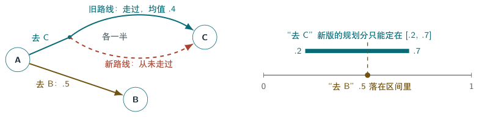
相对第 24 章，变化在于代价。第 24 章比较整段 lifetime 的回报时，默认查证、练习和写入都不花代价；本章撤去这一默认。要缩小上面的区间，只能去试新路线，可试一次就少送一次货。练一项新技能占用同样的步数；把一笔误差写进共享的编码，不占步数，却会改动别处的读数。这些操作都发生在同一条经验流里，改的是同一份记忆。
困难在于给一次试走定价。只看区间， 落在 里面，说明排不出先后，却说明不了该不该去试。设新路线全得 、全得 的可能各半，以后只剩一次在 A 站作选择的机会。不试，就要为两种情形选同一项技能，得 。试了，新路线得 就留在去 B，得 ；得 就改选新版，得 ；平均 。多出的 全部来自试完能够改选；再减去试一次少送货的代价 ，为正才值得试。若去 B 是 ，试完也不会改选，试走只是白花步数。
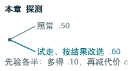
本章用同一个判据比较所有知识操作。判据问：做完这项操作，再按同一续行规则照常行动到期限，能累计多少主奖励。章名的三个词对应各节：维护是第 25.1 节与第 25.4 节，问旧估计还能否排序、读数偏了怎样调；检验是第 25.2 节与第 25.3 节，问花多少步去试、检验信号从哪里来；更新是第 25.5 节与第 25.6 节，问练习时间给谁、一笔误差写到哪里。全章的主算例是上面的三站仓库，即第 24 章第 24.1 节的那个仓库；它与第 18 章、第 26 章里有指示左右与转角 的仓库不是同一个。第 25.2 节另用第 15 章的四区仓库做一次较大的实验。
在何时去试这件事上，前面各章已有两种做法。第 2 章第 2.3 节的 -贪心每一步掷一次硬币，掷中概率 就随机试一个动作，如下面第一张图；第 8 章第 8.6 节的 Dyna-Q+ 给久未实测的动作在模型里加奖金 ， 是距上次实测的步数，隔得越久奖金越高，如第二张图。本章先算试完能否改选，再决定试不试。
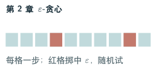
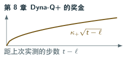
三种做法的适用场合与不足可以并排比较：
| 何时试 | 合适的场合 | 不足 | |
|---|---|---|---|
| -贪心（第 2 章） | 每步以概率 随机试 | 动作少、试错便宜、变化慢 | 试哪个与哪项估计过时无关，已排好序的动作也被反复试 |
| Dyna-Q+（第 8 章） | 久未实测的动作在模型里得奖金，隔得越久越高 | 变化可能出现在任何久未走的地方，如捷径迷宫 | 只看隔了多久，不看会不会改选；系数 要人定 |
| 本章 | 试比不试的余期主回报高时 | 能写出可能的结果和试完以后的选择 | 要有先验或相容环境集，计算量大；区间不跨过备选值时，算出的结论就是不试 |
表中最后一格对应上面的例子：若去 B 是 ，新版的区间 整个落在它下面，试完也不会改选，算出的探测值只剩 。这里先交代几个记号。 是 Dyna-Q+ 的奖金系数，第 8 章记作 ；本章的 只用于探索奖金的系数。第 25.1 节误差界的半宽记作 ；第 25.4 节候选里的探测行为记作 ，它不带下标，与技能 的交回概率 无关。
不同意见 有人主张按一个小的固定比例随机去试。这种做法不依赖任何模型。本章的计算要用结果的分布或相容环境集，这些输入本身可能不可信。两种做法可以用同一个判据比较。信息可信时，算出的规则在世界不变时少花步数，在世界变化时也不会花得太少。信息不可信时，第 25.2 节给出退回预设探索规则的办法。
照常之外的三种操作课件
照常行动以外，学习器还能做三种事：探测、练习、写入。前两种占用步数。步数用来试，就不能用来送货；练习也一样。写入不占步数，可写进共享编码以后，别处的读数会跟着变。所以三种操作要用同一个判据比较：做完这项操作，再照常行动到期限，累计多少主奖励。这里的主奖励指环境给的奖励，区别于学习器为预测而设的累积量。
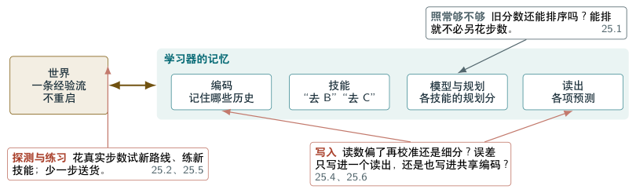
照常也算一种操作，所以一共是四种。照常对应灰色标签：先问不另花步数，旧分数能否排序，这是第 25.1 节。探测与练习占步数，分别在第 25.2 节和第 25.5 节。写入不占步数，读数偏了怎样调在第 25.4 节，误差写到哪里在第 25.6 节。下面的判据一小节会按信息来源把这些材料再切一次。
各模块怎样过时课件
世界一变，先查哪个模块的预测失准、又牵动哪些模块，再选维护操作。第 24 章把学习器的记忆写成 ： 是决策状态； 是技能价值、一般价值函数（GVF）、模型与平均奖励； 是活动技能、段内累计和资格迹。下表把各模块过时的方式与本章的维护操作对应起来。
| 模块（所在章） | 怎样过时 | 维护操作 | 节 |
|---|---|---|---|
| 编码 （第 18、20 章） | 来路不同的历史被并成一个状态 | 按来路细分 | 25.4 |
| 读出与 GVF（，第 19 章） | 读数整体偏；误差写进共享编码牵动别处 | 再校准；选写入范围 | 25.4、25.6 |
| 技能 （，第 21 章） | 技能改版，旧记录只描述旧行为 | 用旧记录定序 | 25.1 |
| 模型与规划（，第 22 章） | 世界变了而模型没见过，如捷径打开 | 花步数去探测 | 25.2 |
| 候选知识（第 23、24 章） | 候选多，练习的步数少 | 随机分配练习 | 25.5 |
| 检验信号（第 13 章） | 同一份数据既挑选又验收，分数偏高 | 验收数据与挑选分开 | 25.3 |
各模块并不是各自过时的。世界变了，编码 被改写；读出要重新校准，技能的起止条件要重查；读出与技能一变，尾值与规划分要重算；规划分一变，动作就变，新经验也跟着变，又回到世界。第 24 章第 24.1 节算法 24.1 第 8 行的维护就是这个环上的一步：一处改写之后，把依赖它的模块标记为待检验。候选知识由第 23 章第 23.7 节与第 24 章第 24.6 节的发现线提出，经验中的子目标在本章第 25.8 节讨论。
放在第 14 章与第 15 章的分层视角里看，用模型决定是否查证、是否探测，属于系统 2 的慎思；从主回报里学出练习时间给谁、误差写到哪里，是学习去调节学习，作者把它称为系统 3（第 14 章第 14.8 节、第 15 章 15.4 节）。系统 3 是作者的提法，尚未成为领域里的共识。
不同意见 模块清单容易让人以为各模块可以分开维护，各管一行。上面的环说明它们是耦合的：编码一改，读出、技能、规划分都要跟着查。逐个模块独立维护，会在中间版本上算出前后不一致的分数。本章各节分开讲，是为了把每一步的账算清，不意味着它们可以互不相干地执行。
问题设定课件
现在把问题写成一个决策问题。知识操作 是一个增广决策问题里的动作：状态里含学习器的记忆 ，各项操作按余期主回报比较。可以设想这样一幅图：左边是世界状态 ，学习器看不见；右边是学习器自己的记忆 。原始动作 由记忆选出，作用在世界上；世界回来的奖励与观测按更新规则写进记忆。知识操作直接改写记忆，其中探测和练习虽然是为了改记忆，却要占原始步，这几步不能拿去送货。世界决定拿到什么奖励，记忆决定以后怎么选，两者共同决定余期主回报；这一切发生在一条不重启的 lifetime 里。
- 状态 ：世界状态，加学习器自己的记忆。
- 动作 原始动作 ，或知识操作 照常，探测，练习，写入。 占 个原始步，写入 ；做完由后续规则 接手。照常就是不做额外的事、按后续规则行动。
- 已知与未知 已知旧技能模型、旧读出和调用记录以及得分范围；未知改版技能在旧行为没走过的路上的后果，以及一次操作对余下主回报的影响。
- 撤去的条件 第 24 章不计这些操作的代价；现在探测、练习都占原始步，所得信息只在以后改变选择时才有价值。
全章用同一个判据比较知识操作。在记忆 上先执行 ，之后按续行规则 行动到期限 ： 值得做，当且仅当 。 缩放到 以后就是规划分：三站仓库里去 C 新版在 ，去 B 为 。
预算 探测、练习与核验各占原始步，都从同一段 lifetime 里扣；练一个候选，就少练另一个。
怎样判定做成了 按 的符号在知识操作之间作选择；要说旧估计能排序，须区间下界越过备选值。主算例在新路线上试走 次、得分和为 后，区间收到 ，下界越过 。
的定义沿用第 24 章第 24.2 节的知识操作的有限期价值：先做 ，再按后续规则行动到期限；以当前记忆为条件，对累计主奖励取期望。两项操作之差记作 。
不同意见 有人认为，按余期主回报给每项知识操作定价，计算太重；实际系统用固定比例的探测或固定的练习计划就够了。本章的回应是：固定比例在世界不变时白花步数，在世界变化时又花得不够。第 25.2 节的余期比较把这两种情形分开。也有人认为后续规则 本身会随学习改变，用一个固定的 比较两项操作会低估写入的长期效果；所以本章把期限 写进记号，结论只在这个期限内成立。
与第 3 章 MDP 对照课件
本章的 与第 3 章至第 8 章的动作价值是同一类东西：仍按这一步加余下部分比较两项动作。不同的是状态里有学习器自己，经验流不重启。下表逐项对照。
| 第 3 章 MDP | 本章的增广决策问题 | |
|---|---|---|
| 状态 | ，智能体看得见 | ：世界状态看不见，记忆是学习器自己的 |
| 动作 | 原始动作 | 原始动作，加改写记忆的操作 ；探测、练习占 步 |
| 转移 | ，不随时间变 | 世界照旧转移； 按更新规则 与操作 改写 |
| 回报 | 折扣和或平均奖励 | 期限 内主奖励之和，不折扣 |
| 重来 | 回合可以重来 | 一条 lifetime，不重启；试过的步数收不回 |
| 价值 |
表末一行里， 是按 再行动 步的期望主奖励。一项操作占 个原始步，余下的期限就少 步，再按后续规则走完；这与第 3 章第 3.4 节动作价值的这一步加余下部分是同一个拆法。转移一行说明，这个问题的转移里含着学习器自己的更新规则 。
谁来算这个期望，要分清两方。分析者站在外面，知道世界，可以对真实的 取期望，这是验收用的账，第 26 章的配对比较就是在估这本账。学习器在里面，看不见 ，只能对记忆里保存的先验或相容环境集取期望， 于是起信念状态的作用。文献里把这样写出的问题称为信息状态 MDP，状态里放后验时也称贝叶斯自适应 MDP。第 25.2 节两种情形都会出现：有先验时算出一个数，没有先验时只能算出一个区间。
探测花 步换来的只是信息。所以探测的价值就是决策理论里的样本信息的期望价值（expected value of sample information）。这个概念见 Howard 1966 年的信息价值理论（R. A. Howard，Information Value Theory）。下一小节把它写成本章各节共用的判据。
不同意见 有人认为把记忆放进状态以后，这个问题大到无法求解，写出来没有用。本章不打算求解它，只用它统一计账。各节的规则都在这本账的一小块上作近似；近似的好坏可以回到这本账上检验。
一条判据课件
在固定机会的假设下，一项操作的价值由三部分组成：改选的概率、改选时多得多少、占用步数的代价。设记忆为 时，A 处的选择在期限内还要出现 次；不做 ，每次都选当前领先的 。做 得到信息 ，以后改选 。则
其中多得 ，不改选时这一项为 ； 是 占用的 步少收的主奖励，与规划分同一缩放。式中的乘积项是决策理论里样本信息的期望价值，它是毛值；减去 得净值。下面推导用到的两条假设不成立时，回到问题设定里的一般定义 ，两边算到同一期限再比较。
推导 推导用两条假设： 只经它占用的步数改变世界；所得信息只用于此后 次同样的选择。在这两条假设下，做 与照常的余期主回报只在两处不同。其一是 占用的 步，少收的主奖励记为 。其二是以后的 次选择：结果 不导致改选时，两边选同一个 ，差为零；导致改选时，每次差 。对 取以 为条件的期望，把不改选的部分记为零，就得到上式。写入不满足第一条假设，因为它还牵动共享编码上的其他读出；那时式子要加上别处的变化，第 25.6 节专门处理。
三站例 ，新路线好坏先验各半。好就改选去 C，多得 ；差就留在去 B，不改选。所以 ，， 这就是章首 的那个 。若 ，区间虽跨过 ，试走也不值得。 要和规划分用同一缩放，都按主回报缩放到 。
判据有一个直接的推论：区间不跨备选值时，没有哪种结果会让学习器改选，，这项操作就不值得做。第 25.1 节能不另花步数就定序，原因就在这里。 时，同一份信息被反复使用，早期的探测因此更值得做。
按比较所需的信息从哪里来，可以把第 25.3 节以外的五节分成三栏：
| 信息来源 | 节 | 代价 |
|---|---|---|
| 旧记录 | 25.1 用旧调用记录给新版技能定区间；25.4 用已有读数判断整体再校准还是按来路细分 | 不另花步数 |
| 试走 | 25.2 何时值得花真实步数去探测 | 花步数去试 |
| 以后才知道 | 25.5 练习，练成以后才知道有没有用；25.6 写入，不占步，代价落在共享编码的其他读出上 | 练与写：练习占步数；写入不占步，代价落在别处的读出上 |
三栏里的改选概率和区间都要靠检验信号来定，信号从哪里来、可不可信，是第 25.3 节的问题。各节开头都会说明它在哪一栏。
不同意见 判据要求能写出改选的概率，这需要先验或相容环境集，二者都可能错。第 25.2 节分有先验和无先验两种情形处理，第 25.3 节讨论怎样检验它们。
本章路线课件
各节比较同一个量：做一项操作与照常，算到同一期限的期望回报之差。在固定机会的假设下，它化为 A 处的选择会不会变、变了多得多少。下图沿箭头读各节的先后，每一节处理上一节留下的困难。
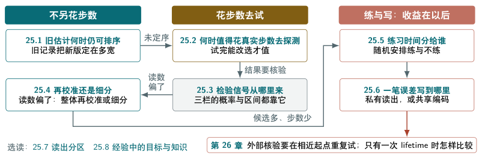
以三站例串起来读。第 25.1 节发现旧记录只把新版定在 ，定不了序。第 25.2 节算出：花步数去试，只在试完能改选时才值。试走、旧模型的读数和以后的主回报都是检验信号。第 25.3 节按评价数据由谁产生、能否影响结果，把信号分成三层，与第 13 章的表相同；它还说明挑选用过的数据为什么不能再用来验收。第 25.2 节只算了一项固定的估计，可编码和来路也在变。第 25.4 节看到读数 其实混合了 与 两类来路；候选登记以后，只用新调用核验。值得保留的候选因此很多，而步数有限，第 25.5 节随机安排练与不练。练成的知识谁能用，取决于写到哪里，这是第 25.6 节。外部核验要在相近起点重复试；只有一次 lifetime 时怎样比较，留给第 26 章。第 25.7 节与第 25.8 节是选读。
下表按“方法—解决的困难—留下的困难”排列各节，留下的困难由下一行处理。
| 节 | 方法 | 解决的困难 | 留下的困难 |
|---|---|---|---|
| 25.1 | 识别区间与抽样区间；一对行动的排序判据 | 不另花真实步数，判断旧估计能否定序 | 区间跨过备选值时定不了序 |
| 25.2 | Dyna-Q+（算法 25.1）；余期比较与模型检验（算法 25.2）；随时有效区间；无先验序贯探测（算法 25.3）；自选行动下的预测检验 | 比较试走与照常行动的余期主回报 | 区间与检验所用的信号从哪里来、可信吗 |
| 25.3 | 外部核验、独立模型、同模型自评三层；挑选后再验收的偏差 | 分清哪些信号能建区间、哪些只能排先后 | 查询固定；编码、技能与尾值共同更新时旧行程还剩什么 |
| 25.4 | 候选 与 、；共同历史上再校准（算法 25.4）；历史细分与 ；漂移下的误差；登记后的序贯核验（算法 25.5） | 区分坐标失准与来路合并，决定重估读出还是保留历史区别 | 多个候选等待时，练习时间给谁 |
| 25.5 | 随机分配的练习标签与用途表示（算法 25.6） | 从延迟主回报学出练习的用途 | 用途取决于新知识写进哪些部件 |
| 25.6 | 性能差分恒等式的单笔形式；写入分配（算法 25.7）；与互补学习系统对照 | 按控制收益选私有、共享或拆分写法 | 各节的外部核验都需要可比起点上的重复试验（第 26 章） |
| 25.7 选读 | 读出分区（算法 25.8） | 读出多于两个时，哪些读出共用一份记忆 | 同上 |
| 25.8 选读 | 一条转移的多种学习目标；目标的提出、核验与采纳；知识的发现 | 从经验中提出预测问题与子目标，计入练习与核验的代价 | 同上 |
不同意见 有人指出这条链把环藏起来了：写入以后，第 25.1 节的估计又会过时，维护本来是一个环，不是一条直线。检验信号放在第 25.3 节，是因为前两节已经用到它。第 25.4 节的登记后核验又要用它的结论：挑选用过的数据不再拿来验收。也有人认为它应当放在第 25.1 节之前；本章先让读者在两节里看到信号怎样被用到，再问它们从哪里来、可信到什么程度。
25.1 旧估计何时仍可排序课件
第 24 章第 24.1 节算法 24.1 第 4–6 行的每次写入都可能使别处保存的知识过时：技能改进后，旧模型行描述的是旧行为；编码更新后，旧读出所用的坐标可能已变；未执行的分支一直没有新样本。本节处理第 8 行维护问题的第一部分：技能或表示改版以后，哪些旧估计不另花真实步数仍能给出正确排序。按章首的判据，本节处在第一栏：不另花步数，只用旧记录看能否定序。先说明过时估计经哪两条路径影响学习器。再固定一项规划查询：路径覆盖给出旧模型的识别区间，条件 Hoeffding 界给出抽样误差。两者合成旧模型的误差界，并给出它能保持的动作排序。区间跨过备选值时值不值得去试，是第 25.2 节的问题；查询本身随编码、技能与尾值改变时怎样处理，是第 25.4 节的问题。折扣 只出现在下一小节的一步 TD 算例和第 25.2 节转述的 Dyna-Q+ 里，本章其余各处都按不折扣的有限期主奖励计算。
维护的对象按信息来源分为三类。若只改变规划的尾值，保留下来的段内主奖励、时长、停点及交回或截断标记足以重算这笔样本的规划分数。若新版改走未曾执行的分支，那个分支的后果需通过可校正的旧经验、新的调用或可靠的动力学模型估计。若两版行为相同，而同一旧状态的两类来路有系统性不同的后果，要查的就是历史区别。它是发现线中候选 的 ，记号在第 25.4 节候选与两个量中定义。所以，先确定该做哪一件事，再把一笔误差经更新规则 写入记忆。可做的事有三件：重估某项预测、细分某类起点、取得某项尚缺的反馈。
技能改写对完整学习器的两条作用路径
先看过时估计怎样进入学习器，才能决定该在哪一处拦住它。技能的名字可以保持不变，内部策略和终止条件却已改变。旧模型准确描述过一种行为。新行为在相同起点的时长、奖励和终点分布是否相同，是新的统计问题。模型在旧行为上的小误差不能回答它。旧估计有两个使用者：行为策略据此选择下一次真实执行的技能，价值学习器据此计算前驱状态的自举目标。前者改变了未来能取得的经验，后者可以在新技能第一次执行前就影响其他动作的估计。
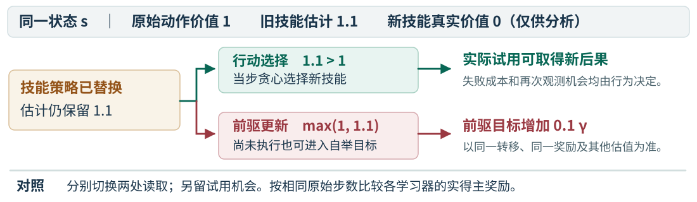
图中新版技能的真实价值只用于解析对照，学习器观察不到它。固定从前驱到 的一步样本、其他估值与步长 。令 为仍有依据的最大候选值（图中原始动作的 ）， 为从旧版本继承的估计（图中的 ）。把该估计纳入最大值，使这次一步 Q-learning 目标增加 ，图中即 ；表中前驱的更新随之增加其 倍，即 。这是一次指定更新的精确差值。往后还有反复写入、动作选择和共享参数的改变。这时各项影响一般不能逐项相减，所以这一个差值不能解释为全程损失。
一种常见的误解是：旧估计只要不被选中，就不会造成损害。图的下支给出反例。即使新技能一次也没有被执行，它的过时估计 仍进入前驱的最大值自举目标，把前驱的估值抬高 ；这个偏差还会沿前驱继续向后传。所以只控制行动排序中的使用不够，前驱目标中的使用要另行控制。
限制过时估计的使用。 两条路径对应两类干预：控制行动排序中的使用，控制前驱目标中的使用。最大化偏差怎样造成排序锁定、怎样沿前驱备份传播，见第 22 章最大化偏差、排序锁定与前驱备份。那里还给出三种干预：未核实的值暂不备份、保留试用、按依赖重算。放进完整学习器后还要补充四点。其一，改写内部策略或终止规则时，把新旧技能作为两个版本保存。旧目标策略的某段原始行为若仍与新策略相容，在满足覆盖及相应校正条件时可复用该段；但整个旧技能的停点标签仍属于旧定义。其二，缩小前驱备份的候选集同时可能低估新技能的益处；乐观分数若只用于试用选择，须另行规定控制价值的自举目标。固定数据离线 RL 也曾据采样支持限制候选动作，这里学习器还可以主动试用新版本，改变往后的支持。Fujimoto、Meger 与 Precup，2019 其三，执行前写下关于奖励、时长和停点的预报，后果到来后按启动条件检验。可用给定精度下的排序区间决定何时恢复规划；在自适应取样或非平稳环境中，这时还要交代区间覆盖率与目标稳定的时间尺度。其四，存储有限时，把前驱重算分给可能改变决策的前驱。读出共用一个编码器时，切断显式自举路径以后，参数更新仍可能影响其他预测；可另设冻结编码器的对照。在有前驱模型的表格规划中，small backups 按单个后继的价值变化更新前驱。把它用于版本更新，需要知道仍适用的转移依赖及以前的读数。van Seijen 与 Sutton，2013
为哪一种误差付出试用成本。 上面的干预都要求知道旧值错了多少；这需要实际试用，而试用要占用真实步数。两个候选的真实回报区间重叠时，沿用一方的单次损失上界见下文自选调用的误差界；上界只对区间实际覆盖的条件成立，普通网络两个输出之间的距离没有这种覆盖保证。窄区间重叠也未必值得试用。设检验成本已高于当前选择的损失上界，且以后只有这次使用机会；这时再精确的测量也补不回检验成本。若同一知识会用于许多次选择，则须把所有后续使用和机会成本带回维护价值中。
系统层的研究问题。 两类干预可以分别开关，用同一个判据比较。实验环境里技能既可能改善，也可能退化。独立改变旧值参与行动排序和旧值进入前驱目标两项，得到四组。四组的其余规划和试用预算相同，都保留从相关起点检验新技能的机会。固定一条已有轨迹，可以比较四组写了什么。让四组各自行动，才能比较第 15 章定义的全程回报 。对有益新技能还应计入等待使用的损失。一个待检验的设想是：越多近期决策依赖旧技能，误用的代价越大；未来越常有机会用到有益的新技能，拒绝复用的代价也越大。分别改变这两个量，可以判断维护规则利用了哪项信息。探测试次、实际控制时间和原始动作更新次数应同时匹配或明确报告。技能维护的动作价值
旧技能模型可支持的规划查询
技能改变后的模型复用。 要说旧值错了多少，先得固定它回答的是哪一个问题。内部策略或终止条件改写后，新版技能的价值何时能由旧数据识别，见第 22 章变更内部策略后的技能价值与可识别性。这里沿用其中的版本价值，改为有限期写法。固定启动历史、剩余期限 和当前规划器实际使用的后续价值 。执行版本 ，直到交回控制或期限届满；截断时长为 ，段回报为 ，。记 。只有当 时，精确旧模型才给这项查询相同的值。要求每次规划数值相等，比仅要求保持当前动作排序更强。统一误差界 下决策损失至多 的结论见规划误差与动作排序；只比较一对行动时，判据可以分开两项误差。设旧估值给该技能的分数 比一个固定备选的分数 高 。旧分数与新版真实分数 之差有可靠界 ；备选分数与其真值 之差有界 。新版真实分数至少为 ，备选真实分数至多为 ，两式相减得
所以 足以保持这对行动的排名。右端恰为零时，只能保证新版不严格更差。两项误差界相等、都记为 时，条件成为 ，与统一误差界下的结论一致。 时，这些界定不了排名；能改变选择、且仍有使用机会的起点，才可能值得优先重估。若规划随后换用不同的尾值，须在新的查询上重新检查。两类尾值的反例与图 · Grimm 等，价值等价原理
例（三站仓库）。 从 A 出发，下一小节将算出新版去 C 的分数只能定在区间 内。旧模型若给出区间中点 ，它与新版真值之差至多 ；备选去 B 的 已知，。此时领先的是备选，判据中两方对调：，，判据定不了序。要定序，须把 压到 以下。
再看一组只为演示代数的数字：，，，右端为 ，旧排序可以沿用；若 ，右端为 ，就不能沿用。
两种常见误用。其一，拿一次样本上的误差当作所有起点的误差界； 必须对所问的起点和查询都成立，一处小误差说明不了别处。其二，把旧行为从没走过的分支当作得零；未知分支只能取其允许范围，下一小节给出这个范围。
在新版可启动的可比条件下，实际执行提供 。把旧模型与新版样本放在同一尾值下比较，须先确保起点表示、终点编码和主奖励含义可对齐。在出发前保存旧模型对本次查询的估值；到交回控制时，用实收的 与它比较。为使多次样本回答同一个问题，这段检验固定技能版本和用于读出停点的 。单次差额还含有随机波动。旧行为从未走过新版的一条路径时，已走路径和得分范围仍可给出误差界；这个界有多宽，取决于新版走入未知分支的概率。如果规划器因为旧估值过低而一直回避该分支，单靠原来的走法就可能一直无法判断排名。
技能改版后的路径覆盖与规划误差
规划器原来偏好技能 ，练习后真正可执行的却是 。上面的排序判据把估值误差界 作为已知量；本段和下一段分别给出它的两个来源：旧行为未覆盖的路径（识别误差）和有限次调用（抽样误差）。部署中的学习器只有自己选过的行动及其后果。它需要估计的是旧模型对当前规划查询的误差。同一旧模型在一个起点仍能给出正确排序，在另一个起点可能已不宜使用。
固定一个可重复辨认的启动状态 、规划窗口 、新版技能及后续价值函数 。从启动到技能交回控制或窗口届满，共经过 个原始步。样本的规划得分为 ，其中 是这段实际收到的主奖励之和，。记新版调用的条件均值为 ，相同起点先选备选行动 的均值为 。两项用相同的尾值评价。 是本次查询的视野，可在后来同类启动时再次取同一个 。若全程所余步数不足，截断后回答的已是另一个查询。
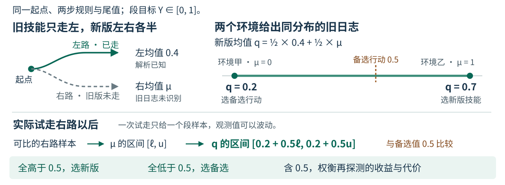
图 路径覆盖决定哪些排序能由经验辨认。 三站仓库中可读作：从 A 出发的去 C 改版，左路是旧路线，右路是新路线，备选是去 B。图中的得分已缩放到 。为单独考察覆盖，暂取左路均值 和备选值 为已知。旧版必走左路，新版等概率选左、右。右路均值记为 ，于是 （图中简写为 ）。右路恒得零时，；恒得一时，。区间宽 ，等于新版走入未知分支的概率 乘以得分范围 。右路恒得零和恒得一的两个环境，在旧行为下产生完全相同的经验分布。两者却要求规划器作相反的选择。增加左路样本不能辨认这两个环境。若在可比条件下试走右路，得到 ，新版区间随之变为 。要严格选新版，须有 ；要严格选备选，须有 。补救的途径有两条：在可比起点单独试走右路，或整项试用新版。若左路和备选也靠采样估计，三项的不确定性都须计入。查看大图

旧经验的可用部分。 判断单位是带有启动条件、动作、停止规则和后续价值的查询。一份旧轨迹可支持其中一部分计算。
| 已取得的经验 | 对新版规划分数的用途 | 成立条件 |
|---|---|---|
| 旧调用的累计奖励、时长和停点 | 重算尾值 | 相关路径及停止规律仍相同，起点与停点编码可对齐。只有旧分数时，分不出段内奖励与尾值，也就无法更换尾值。 |
| 有逐步行为概率和停止决定的完整旧调用 | 按新版与旧行为的路径概率比估值 | 相同环境与启动条件，新版可能产生的路径均受旧行为支持；所需动作、继续及终止概率可恢复。 |
| 有些分支的后果已知，其他分支从未受旧行为支持 | 已知部分照常加权，未知部分保留可能范围 | 各分支在新版下的概率已知或有有效的界。样本中的零计数本身不能证明旧策略概率为零。 |
| 在可比起点试走缺失分支，或调用整个新版 | 直接估计该分支或整个新技能 | 单试分支时，后续动作、停止与反馈须服从新版在该分支上的条件分布。仅能调用整项技能时，按新版实际执行，失败、提前停止及期限截止都计入。 |
一般地，设新版在旧行为支持范围内的概率为 ，已覆盖路径对新版均值的未归一化贡献为 。若段得分在 ，则
推导只用到期望的可加性。未覆盖部分的概率是 ，其条件均值可取已知范围内的值。若再没有可约束那部分后果的信息，两端都可能达到。这是识别区间；即使已走路径的后果估得无限精确，区间仍可有正宽度。若 或 也要估计，应在两者的联合置信范围上取上下端。已验证的动力学模型、其他技能访问过的相同原始转移，或能到达该分支的探索动作，有时足以填补缺口。这些途径都依赖可说明的条件分布相同假设。
旧行为覆盖新版时的估值。 以 表示实际生成一个旧调用片段的行为分布，以 表示同起点的目标分布。若 ，路径权重 给出 。环境相同，原始转移概率在比值中消去。例如，片段在第 步由技能自行终止。以 表示片段内第 步选动作前的历史， 是旧行为实际使用的内部策略与到达后停止概率， 是新版的对应量。完整路径权重为
即使两版采用相同的原始动作策略，改变交回控制的位置也会改变调用分数。若旧版常在途中停止，仅修正第一步选路概率仍会高估短片段在新版中的比重。对于由时限强制截断的末步，只有实际抽样过的决策才进入比值。若记录只剩技能名和总得分，就缺少逐步的动作与停止概率，无法重构这些权重；只挑动作碰巧吻合的旧片段求平均也可能改变起点或后续历史的分布。权重差异大时，极少数轨迹就可能主导估计。将 缩放至 且事前知道 ，则 的范围为 ，可用下一段“自选调用的误差界”，半径按 放大。Precup、Sutton 与 Singh，离策略多步学习 · Sutton、Precup 与 Singh，option 的执行与终止
试一次右路并不就知道它的值。构造例里右路恒得零或恒得一，一次试走恰好能分辨两个环境；后果有噪声时，一次试走只给一个读数，区间要靠下一小节的抽样界逐次收窄。
不同意见 有人主张按相似性外推：若认为右路与左路的后果相近，区间可以窄得多。代价是外推错了就会排错序，而旧记录本身无法说明外推对不对。折中的做法是把可检验的相似性模型作为一个候选环境，放进第 25.2 节的无先验序贯探测，由实际反馈决定它是否保留。
自选调用的误差界
上一小节给出了识别误差；本小节给出抽样误差。规划查询的一般定义见第 25.4 节共同更新下的辨识与探测，这里先固定一项。设一行表示整项新版调用、备选动作，或图中的右路试用。第 次合格启动时， 是智能体已获得的信息，含本次执行哪一行。纳入样本在启动时决定，调用按顺序结算，每次完整计入 。在给定环境中假设
第二个条件说明了为什么能平均。智能体可以根据过去决定何时重试；在已选的可比起点，所试行动的期望后果须相同。若编码 合并了两类来路，而策略只在难以通过时才试新版，所采样的均值可以不同于日常调用均值。这时应按可观测来路分层并对目标起点分布加权，或重新构造状态。只知道各段得分有界，不足以把旧的均值解释为当前值。对于变化的动力学，还须单列漂移假设或在新的稳定区间重新估计。单次飞行、一次性部署之类的场合没有可比的第二次启动，所以不能用下面的平均。
给这行预留错误概率 ，令 是合格调用数， 是样本均值。因 的启动前条件期望为零，条件 Hoeffding 界在达到第 次调用处给出
可在每次真实启动处累积有界增量的指数超鞅，未选择该行时保持其数值，取首次达到计数 的时刻。这样保留了达到了 次这一事件，无需假定一定还会试下一次。对第 次分配 ，有 。解出半径，再对所有 取并集：
其中 为区间半宽，与 Dyna-Q+ 的奖金系数 无关。以至少 的概率，该行的区间在每个已取得的样本数处都包含 。因此一旦区间足以区分两项便停止试用，保证仍成立。 时取 。给新版、备选及用于组合的其他估计行分别分配错误概率，其和不超过总预算。数据促成了新技能的发现时，可在冻结其定义之后用新调用检验；若要用同一批数据选择又检验，须给整组候选同时有效的界。这个半径偏保守；它的长处是直接显示有界得分、调用次数与可信精度之间的关系。Howard 等，时间一致置信序列 · Karampatziakis 等，上下文赌博机的离策略置信序列
算一个数。取 、得分范围 、：，。若事先定好只在 处看一次，固定样本的 Hoeffding 半宽是 。两者之差是随时可以停下所付的代价。两种半宽都按 收缩，随时有效的一种多出一个缓慢增长的 因子；第 25.2 节反复查看时的覆盖率用模拟比较了两者。把它用到三站例的右路：试 次、得分和为 ，则 ，新版区间收到 ，下界越过去 B 的 。这 次值不值得试，由第 25.2 节判断。
令旧模型对这项固定查询的输出为 。由 可得前文排序判据 所需的旧模型规划误差界
直接比较两行的区间，判据不会更松：若 也由备选行的区间算出，上式成立时下面的区间比较也成立。 保证新版优于备选， 保证备选优于新版。区间有交集时，这项检验不能给出严格排序。沿用备选的一次选择，损失至多为 ；改选新版的对应上界为 。两式都由两者真实价值之差直接得到，单位与 相同。这个界只适用于当前查询。若更换技能版本、尾值或起点分布，须用新查询可用的样本或同时成立的界重新计算。
三种常见误解。其一，以为调用由智能体自己挑时机，误差界就全部失效；只要所选可比起点上的条件均值固定，上面的界照样成立。其二，给新版和备选两行各用一个 ；总错误概率是各行之和，须事先把预算分给各行。其三，条件均值本身在漂移时仍直接套用此界；这种情形见第 25.4 节非平稳调用的抽样误差与漂移。
三站仓库中，去 C 新版的区间 把备选去 B 的 夹在中间，旧数据定不了序，再多的旧路线样本也不能使它变窄。下一节问：这时值不值得花真实步数去试新路线。
25.2 何时值得花真实步数去探测课件
第 25.1 节的区间跨过备选值时，只有新的真实经验能缩小它，而取得经验要占用同一条经验流里的原始步。按章首的判据，本节处在第二栏：花真实步数去试。三站仓库里，去 C 新版的区间 把去 B 的 夹在中间，问题是值不值得去试新路线。本节的次序如下。先看 Dyna-Q+ 这个已发表的启发式怎样把行为引向久未实测的地方。再用章首的 比较探测与照常行动，并给出算法 25.2。然后在三站仓库上算出一百次试走的效果，并说明反复查看时区间为什么要更宽。接着在四区仓库上看整个 lifetime 里的探测。最后去掉先验，给出在各相容环境上都成立的比较，以及检验候选预测的方法。
Dyna-Q+：怎样让规划引出一次实地探测
误差界能说明区间何时已足以定序；区间仍跨过备选值时，只有新的真实经验能缩小它，于是要问规划怎样把行为引到值得检验的地方。旧路仍能抵达目的地，远处的一道门却可能已经打开。只走旧路时，模型一直没有机会改正这扇门过不去的预测。第 8 章的 Dyna-Q+ 提供了一个已发表的探测规则：在模型中提高久未实测动作的吸引力，再由同一个动作价值函数引导行为，走到足以检验旧模型的位置。
算法 25.1 Dyna-Q+ 的规划与实地探测。 设表格状态与动作，以最近一次实测后果作确定性模型。参数为步长 、折扣 、探索率 、奖金系数 和每个真实步后的规划次数 。记 ，终点 ；“向目标 更新”指 。
- 置 ，模型为空，真实时钟 。
- 首次到达状态 时，为每个可行动作 建立 ，三项依次是奖励、后继和上次实测的时刻：暂按零奖励自环规划，时刻取零表示尚未实测。
- 按 作 -贪心选择 ，真实执行，观察 与 ；向目标 更新 ，置 。
- 做 次规划备份：每次随机取一个已访问状态 和它的一个可行动作 （包括尚未真实尝试的），读出 ，向目标 更新 。规划不改模型，也不推进真实时钟。
- 用完预算 或 lifetime 结束时停止；否则 ，回到第 2 行。评价时只累计环境给出的奖励 。
记号上有三点交代。表格模型写作 ，因为本章的 已用来记学习器的记忆，第 8 章则把这个模型记作 。 就是原论文、Sutton 与 Barto §8.3 及本课第 8 章 8.6 节的奖金系数 ，加下标是为了与本章其他系数区分； 是探索率，与误差界 无关。原算法按回合运行、到终点重置，这里写成一条不重置的真实步序列，与本章的 lifetime 设定一致； 是该动作距上次实测的真实步数，下文记作 。
既不是环境已经变化的概率，也不是这次探测对全程回报的价值。它只让久未实测的动作在规划中显得更有吸引力，增长的快慢由人工选定的 和平方根决定。
奖金为何进规划备份？ 取 ，一个远处动作已经 100 个真实步没试，当前模型奖励和后继价值都为零。它的规划目标成为 。若 、其他动作价值为零，先备份这个动作，再对采取一步就到其所在状态的前驱做备份；若前驱的奖励与奖金都是零，取 ，前驱动作的目标就从零升至 。吸引力可以在实地出发以前沿模型传回来。100 次模拟都不能替代一次实地检查：只有真实尝试才会刷新 ，环境也不会支付那 。
Sutton 的捷径迷宫实验保留原路线、另外开放新的短路，图 6 比较累计环境奖励；论文脚注 4 说明，该实验实际选动作时也用了时间奖金。上面采用 Sutton 与 Barto 教材的版本，把奖金放入模拟备份，再按更新后的 行动。平方根是促使重访的启发式，不给出环境已经变化的概率。要与下文探测的全程价值比较，还须把每次离开旧路付出的时间和实际收益都算进去。Sutton，ICML 1990，§§5–6、图 6、脚注 3–4；Sutton 与 Barto，第 2 版 §§8.2–8.3，例 8.3
不同意见 支持奖金的一方指出，它不需要区间，也不需要候选环境集，在大状态空间里比本章后面的做法便宜。批评的一方指出， 取大了，在稳定的世界里会反复去核实没有变化的动作；取小了，又会错过捷径。这个系数的取值没有依据可循。
下面两图是这个实验。上图是六行九列的迷宫，S 是起点，G 是终点，中间一道墙；前 步只能从左端缺口绕行（金线），第 步后墙的右端也打开，青线是新出现的捷径。旧路一直能走，走旧路看不到模型的误差。下图是本课重跑的结果， 次独立运行，每个真实步规划 次，、、、，参数由本课取定。前 步 Dyna-Q+ 平均累计约 ，Dyna-Q 约 ；后 步两者分别约 、。 次运行中 Dyna-Q+ 每次都走通了捷径，首次走通的中位时刻在开墙后约 步；Dyna-Q 只有一次靠探索率偶然走通。
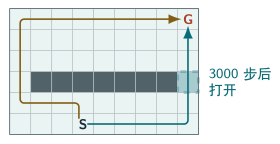
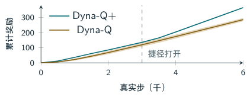
这个实验有三处局限。其一，它是表格的、确定性的，每个状态动作对各自计时；用函数逼近时没有现成的 。其二，世界只变了一次，而且是变好；实验按回合重置，不是一条不重置的 lifetime。其三，人工给定的奖金在不变的世界里也一直增长，学习器会周期性地离开旧路，去核实没有变化的动作。
不同意见 有人认为这个例子偏向 Dyna-Q+：世界常常变坏时，那些核实是纯损失，捷径带来的好处却不会出现。也有人认为只靠 终究也够： 次运行里确有一次靠探索率偶然走通。回答是，靠 的等待时间没有上界，而且 不会专挑未核实的动作去试。
探测、重新规划与全程回报
Dyna-Q+ 的奖金能把行为引向久未检验的地方，却不说明一次探测值多少。要算出后者，须把探测与照常行动放在同一剩余期限上比较主回报。图中新版得分落在 。仅凭这个区间，学习器可以算出选备选在本次查询上至多损失 ，却无法知道试一次的期望收益。为算清后一个量，仍用图中两种环境，额外给出两条条件。两种环境的先验各半，且右路在各自环境中恒得零或恒得一。智能体现在可照常行动或试右路，以后只剩一次在同一起点选新版或备选的机会。照常行动不揭示右路，试探比照常行动少得的期望主回报为 。
两个最大值的位置不同。探测前须为两个环境选同一个行动；探测后，规划器在右路得零时选备选，得一时选新版。对全程的贡献是 。若 ，辨认了真实环境，后一次选择也改好了，全程仍少得 。这就是章首判据在 、只向前看一步时的形式：改选的概率是 ，改选时多得 ，。反过来，若备选去 B 是 ，新版区间 整个落在它下面，两种环境里试完都不会改选，两行最大值都是 ，探测的价值只剩 。若 ，区间虽跨过 ，也不值得试。从贝叶斯的角度看，这是贝叶斯自适应决策最简单的一种情形：信念只有两点，只向前看一步。这是两个已规定环境下的解析结果。真实右路的后果可有噪声，先验及可到达的未来起点也未必已知；频率学派的置信区间没有给两种环境分配先验概率。
在一般的单一经验流中，试用还改变物理状态和今后的观测机会。这时用章首问题设定中的 作比较，其定义沿用第 24 章第 24.2 节的知识操作的有限期价值。 是当前记忆，含可见历史、已学知识与剩余资源； 为评价窗口余下的原始步数； 为固定的后续学习与行动规则。照常行动、探测或练习都是一项知识操作 ，占 个原始步。按 结束、学习器再次决策的时刻拆开累计主奖励，由期望的可加性得
其中 同时含执行后的世界信息、学习器更新后的知识及剩余资源， 是以后继续用 所得的期望主回报。探测的净价值是 ，即该式对两项操作之差。只有在信号本身既不改变位置也不占用行动机会，且获取费用可单独相加时，才可把探测化简为信息价值减费用；上面的 就是这种特例。一般须比较两个安排各自留下的机会。一个能给出探测结果分布、所用时间和这些后续机会的模型，才足以估计两者的期望差。若只有区间，可用已知代价和剩余收益的上界排除不合算的探测，或保留预算受限的随机试用。现实中的单条未探测路径不能独自确定最佳探测频率。
三种常见误解。其一，把 再当作一笔奖励加进回报；它是探测改选带来的期望增量，环境不会另外支付。其二，以为有了区间 就够判断；区间只说明排不出先后，期望收益还要两种环境的概率。其三，把 当作通用公式；它依赖两点信念、只剩一次选择、信号不改变位置这几项条件。
构造例里右路恒得零或恒得一，试一次就能分辨；下面让右路的得分带噪声，一次试走只给一个读数，于是要像第 25.1 节那样边试边求区间。
不同意见 有人指出 对 全靠各半的先验；先验一变，结论可以反过来，而先验从哪里来，例子没有交代。本节最后的无先验序贯探测去掉了这个先验。也有人强调期限 的作用：例中以后只剩一次选择；若以后要在 A 站选很多次，试一次换来的改选会被反复用上，探测更值，这就是判据里的 。
算法 25.2 有限预算下的技能模型检验。 输入为固定查询 、已知得分范围、各估计行的错误概率及试用预算 。这里的“行”指一个估计量：整项新版调用、备选动作，或某一分支（如右路）的试用，各存计数 与得分和 。
- 初始化：直接采样的行以 为中心、 为半宽求均值区间；路径分量按新版概率合成，例如 ；尚无覆盖的分量取满允许范围。
- 比较：每个真实步比较 与 。区间分离，选下界较高者；区间重叠，比较照常与探测。
- 行动：探测的净价值为正就探测；没有可信的价值估计时，按事先给定的预算和探索规则试用。
- 结算：只更新实际取样的行。右路试用更新右路行，整项调用更新新版行；，，失败和期限截断同样计入。
- 规划：在受影响的起点重新比较；选择变了，就重算依赖它的前驱。
- 终止：用完预算 或 lifetime 结束时，交出下界较高的选择；否则回到第 2 行。
几处细节需要交代。第 1 行的合成只在新版走各分支的概率已知或有有效的界时成立；只有带权旧轨迹时，按其权重与相应精度另行估值。第 3 行缺少可检验的后果模型时，探测频率是给定的探索规则，不是算出来的最优频率。第 4 行即使试用补上了一部分原本缺失的路径，剩余的未覆盖部分仍保留其不确定性。第 5 行在模型内重复计算不增加真实样本数；保存了可对齐的 时可按新尾值重算目标，但新尾值若也由同一批数据选出，统计精度需要新数据或对该尾值集合同时有效的界。
全程比较从首次决定是否探测之前开始。比较三种学习器：可自选探测时机的、固定频率试用的、沿用旧模型的。给它们相同的初始分布、真实交互时限 、主奖励和资源上限。它们各自按其行为产生经验，以第 15 章的全程回报 衡量。单条实际路径给该学习器一份实现值；未采用的安排会改变以后到达的状态，不能用这条路径直接读出其回报。尚待解决的研究问题有两个，前提是状态表示、技能与尾值也持续改变。一是怎样以有限记忆保留可迁移的经验。二是怎样把真实试用分给可能改变后续行动、且来得及使用所学的查询。
不同意见 奖金与区间是两种做法。Dyna-Q+ 的奖金便宜，不需要区间；算法 25.2 的区间能说明何时已经够了，代价是要为每行保存计数并分配错误概率。本课只在三站例上手算了算法 25.2，没有做实验比较两者（本课的整理）。
三站仓库：一百次试走怎样改变区间与选择
把第 25.1 节的两段区间和算法 25.2 放到三站仓库上算一遍。从 A 出发的去 C 技能改了版。新版有一半时间仍走旧路线；旧路线的均值 已由旧调用估准，这里视为已知。另一半时间新版走旧版从未走过的新路线，均值 未知。备选去 B 的分数 也视为已知，得分缩放到 。这就是路径覆盖一图的两路：左路是旧路线，右路是新路线。按算法 25.2 在可比起点试走新路线 次，错误概率 只分给新路线这一行。
| 量 | 试走前 | 试走 次后 | 计算或条件 | |
|---|---|---|---|---|
| ① | 新路线计数与得分和 | 每次完整结算，截断也计入 | ||
| ② | 均值 与半宽 | 无样本 | ， | |
| ③ | 新路线区间 | 与 取交 | ||
| ④ | 新版区间 | 两路各占一半 | ||
| ⑤ | 与备选 比较 | 重叠，未定 | 下界 | 算法 25.2 的比较行 |
| ⑥ | 所选行动的单次损失上界 | 选备选： | 选新版： | 另一项上界减所选下界，与 取大 |
| ⑦ | 试走期间少得的主回报 | 即 | 值不值见探测、重新规划与全程回报 |
第 ② 行：，除以 再开方得 。第 ④ 行：。第 ⑥ 行：试走前沿用备选，单次损失至多 ；试走后改选新版，。
表中变化的只有新路线一行；旧路线、备选和两路概率都未改动。试走更新的是分量，经两路各半合成之后才成为新版的分数。第 ④ 行的下界升过 ，要求 。均值同为 时， 得 ，新版下界 ，仍未定序；至少要 。这一百次试走本身占用了真实步数，第 ⑦ 行把这笔代价记作 ；上表只算出试走带来了什么，值不值得花，要用前面的余期比较判断。数值为构造算例。
不同意见 有人嫌随时有效区间太宽：这里要试 次才能定序，固定样本区间所需的次数少，下一小节的表里是 次。另一方回答，固定样本区间在边试边看时会失效，下一小节的模拟显示了这一点（本课的整理）。
反复查看时的覆盖率课件
算法 25.2 边试边看：每试走一次就更新区间，新版与备选的区间一旦分开就停止。常见的置信区间有一个前提：事先定好 ，只看一次。在这个前提下，错误概率不超过 。每次都看，每次就多一次越界的机会。上表的半宽 把错误概率当作预算分出去，第 次只分 。对第 次单独用 Hoeffding 不等式：得分在 内时，。令右边等于 ，解出 。各份之和是 ，因为逐项相消。由并集界，任何一次越界的总概率不超过 。所以无论何时停下，区间覆盖 的概率都至少是 。
下表比较三种半宽。新路线每次得分取 或 ，真实均值 ，此时新版恰与备选持平，任何新版更好的判断都是错的；； 次独立运行，每次运行试走 次，每次试走后检查一次。
| 区间 | 半宽 | 时半宽 | 次内漏掉过 的运行比例 | 一度误判新版更好的运行比例 | 均值 时定序所需次数 |
|---|---|---|---|---|---|
| 正态区间，每次 | |||||
| 固定样本 Hoeffding | |||||
| 随时有效 |
正态区间每次单看只错 。看到第 次时，过半运行至少一次漏掉真值；四分之一的运行一度把下界抬过 ，按算法 25.2 就会改选新版。固定样本的 Hoeffding 区间单看一次，错误概率低于 ；边看边累积，也升到 。随时有效区间的代价是更宽：均值 时定序要 次，比固定样本 Hoeffding 多 次。换来的性质是：任何时刻停下，区间都有效。一般形式是时间一致的置信序列。Howard 等，2021
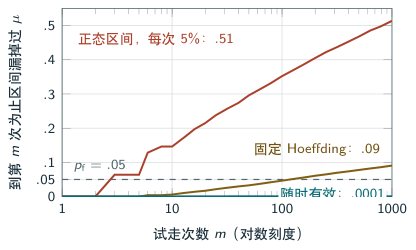
每试一次就看一次区间，单次看的错误概率会随看的次数累积。左图是一次试走序列，横轴是试走次数（对数刻度），点线是样本均值，黑点是最新一次的均值，三组彩线是三种区间的上下界，黑色水平线是真值 ；右图是批量运行中到第 次为止至少漏掉过一次真值的比例，虚线是 。点“试走一次”或“连续试走”推进左图，“计算过程”列出 、三种半宽，以及换算成新版分数后与备选的比较。默认 、 次运行，三条曲线到第 次约为 、、，与上表在统计误差内。切到 ，三种区间定序所需的次数是上表的 、、。
不同意见 有人认为这里的随时有效区间保守：实验中累计错误率只有万分之一，低于预算 ，多花了试走。基于鞅混合或经验 Bernstein 的置信序列更窄。本章选最简单的一种，是为了让半宽与样本数的关系容易看清。贝叶斯一方认为，有可信先验时用后验决策，就不受看了几次的影响；难处在先验从哪里来。也可以事先固定试走次数、只看一次，代价是不能提前停。
无先验的序贯探测与全程回报
三站算例的一百次试走事后定了序。出发前，学习器面对的是几个排除不了的候选环境（候选模型怎样由反馈检验和排除，见本节末自选行动下的模型检验）。这些候选仍可能对现在是否探测给出相反的建议。前文的 对 用了各半的先验，这里不再假定先验。给定与本段可见经验相容的一组环境，暂不规定它们的先验概率。为计算一次试用的净收益，在同一可见历史 和剩余期限 下规定两项可执行规则。 沿用现有控制。 主动探测，再依据反馈更新模型、重新规划，也可以继续探测。两项规则都只能读自己的可见历史、时钟与内部记忆。同一个 在不同环境中可能见到不同的信号，收到相同历史时依然使用相同的行动分布。若途中会重新计算置信界、触发后备行动，也须在规则中写清这一后续行为。
设 是与原始记录、已知接口、变化条件和核验界相容的模型集。这里的 指一个候选环境，与候选预测中的事件 是两回事。在有限表格模型中可逐一对每个模型展开这两棵行动树。以 表示在环境 中执行规则 直到原定期限的期望累计主奖励。若试用占用 步，先计试用期间实际取得的奖励，再从试用后的历史按规则计算剩余 步；耗尽预算、访问权限改变或无法再回来，都在这项期望里。用同一模型配对相减，再在模型间取界，
若 ，在每个相容环境中，探测规则的期望回报都较高。若 ，沿用现有控制的期望回报至少一样高。界跨零时，这一比较没有决定哪一种更好，可以执行事前约定的后备行为，并保留仍未确定的预测。两端若只是保守计算的外界，跨零也不意味着已找到实际支持相反选择的两个模型。用经验构造 时，结论依赖真实环境落在集合里；反复使用的统计行需要共同置信保证。若只知道奖励有界，经验对未选分支的约束可能很弱，回报差的符号便可能始终未定。Howard，信息与决策的价值
例（三站仓库，无先验）。 与探测、重新规划与全程回报的构造相同，只是不给两种环境分配概率。环境甲中右路恒得零：试完仍选去 B，探测规则只比沿用规则少得试走的代价，。环境乙中右路恒得一：试完改选新版，后一次选择多得 ，。若 ，共同区间 跨零，两项规则的次序未定。有了各半的先验，才能像前面那样算出期望 。
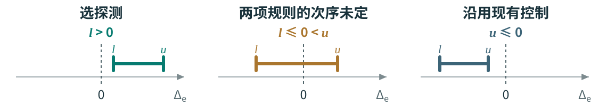
算法 25.3 基于全程回报差的序贯探测。
- 固定查询、剩余步数与预算；在可见历史上写定两项完整规则 （沿用现有控制）与 （探测后重新规划）。
- 对每个相容环境求配对差 ，取共同界 ： 执行 ； 执行 。
- 时按预设的探索或后备规则行动；用实际反馈检验各候选的预测（方法见本节末自选行动下的模型检验），剔除被否定的候选，扣除所用步数，回到第 2 行。
若备选规则规定连续执行一段技能，上述循环须执行到规定的交回点。若下一决策点又会重新比较，则两项规则应事先包括该更新和重新比较过程，或规定运行到一个已知的比较边界再采用同一续行规则。资源耗尽或数据与全部候选模型冲突时，保留后备行动，重查模型的假设；仅对非空的相容环境集计算收益界。比较的是这两项规定好的规则。要继续优化试用时机，应比较其他可实施规则，各自在相同原始期限与资源预算下行动。
三种常见误解。其一，把候选环境能分辨当作值得探测：能分辨只说明探测有信息，值不值要看 和 。其二，用按环境编号写出的最优动作作比较：学习器读不到环境编号，两项规则只能读自己的可见历史。其三，以为区间跨零，这次比较就没有用：它至少排除了两种确定的建议，留下的未定情形由后备规则处理。
不同意见 贝叶斯一方认为，给候选环境一个先验，就能把区间换成一个期望，总能作出决定；难处仍在先验从哪里来。极小极大一方主张按最坏的环境决定，区间跨零时就沿用现有控制；在三站例里，这等于放弃环境乙中的 。
当查询、行为、起点条件与尾值都固定时，重估退化为对一项固定后果收集支持、形成置信界并安排试用。相关推导依次给出有支持的旧轨迹、自选调用的误差界、探测与全程回报和有限预算下的模型检验。
自选行动下的模型检验
上一小节算法 25.3 的第 3 行要用实际反馈检验各候选环境的预测，排除与反馈不符的候选；本小节说明在行动由智能体自选时怎样检验，并使错误概率仍有保证。考虑事先规定的有限候选环境 。每个候选给出在可见历史 与已选原始动作 下，下一次观测与奖励的条件分布。这些分布允许依赖完整历史，因而也可表示有规律的变化。选择一个取值于 的反馈函数 ，并在本步反馈到来以前固定它。令
这里的 是本步检验信号，与前面的整段规划得分按各自定义计算。候选对所执行行动给出的这个均值可以与真实后果逐步比较。对每个候选初始化 ，由过去的信息选择下注比例 ，更新
因为 且 ，方括号中的乘子不小于 ，始终为正。如果候选 对这个检验信号的条件均值正确，则在看到本步反馈以前，乘子的期望为 1。因此 是一个非负鞅。以 为预设错误概率，第一次出现 时排除该候选，误排正确候选的概率至多为 。这是 Ville 不等式的应用。信号和 可以根据既往误差改变；行动也可以由智能体自行选择，条件期望始终针对实际选择的 。给有限候选分配共同错误概率，可在反复决策时保留相应保证。时间一致检验与置信序列
例。 取 ，排除阈值为 。候选 每步预报 ，实际反馈每步都是 ，取 。每步乘子为 ，财富依次为 ；，，第 9 步排除该候选。
三种常见误解。其一，以为行动由智能体自己选，检验就失效了；条件期望针对实际选择的 ，保证仍成立。其二，把有效当成有力： 时财富恒为 1，检验永远有效，却永远不会排除任何候选。其三，把未被排除当成正确：若当前行为下各候选的预报相同，错误的候选也排除不了，要靠上一小节的主动探测去造出分歧。
若更新过的编码和尾值只改变已存历史的计算，直接重算，无须为这次内部计算增加 。若两个候选在当前行为下总给出同一个 ，依据这项信号无法辨别哪个候选更准确。若它们在可执行的新行为下给出不同的预测，试用才有机会提供辨别信息。存在预测差异仍不保证试用有正收益，上一小节的无先验序贯探测用主回报比较这种机会。
多项相关预测可以共用反馈，但把多个检验因子相乘需有相应的联合条件保证；这里每步只规定一个有界检验。候选若由刚才那批数据拟合出来，检验从其冻结后的反馈开始，或为事前模型类构造同时有效的检验。通过检验的候选也可能在其他信号或行为上错误。若所有候选都被排除，有限模型类失配，应保留可实行的后备控制并扩展候选类。重新引入模型时须另外分配检验错误概率。
已解决的部分与条件 世界不变、任两个状态互相可达（通信 MDP）时，R-max（Brafman 与 Tennenholtz 2002）与 UCRL2（Jaksch、Ortner 与 Auer 2010）给出样本复杂度界或遗憾界，探索的代价可以被以后的步数摊薄。各臂相互独立、分布不变、按几何折扣时，Gittins 指数给出最优的拉臂次序（Gittins 1979）。本节的判据在先验给定、机会固定时算出单次探测的净值。
已有做法与假设 世界会变、但总变化量有预算时，滑动窗口与定期重启的方法给出动态遗憾界：Garivier 与 Moulines（2011）处理分段平稳的多臂赌博机；Cheung、Simchi-Levi 与 Zhu（2020）在奖励与转移的变差受限、各期 MDP 可通信的设定下处理 MDP。Nguyen 与 Cheng（2023）把不重置的学习归约为两人博弈的无遗憾问题，保证性能遗憾与累计重置次数都是次线性。Dyna-Q+ 的奖金 是启发式，不用变化预算，也不给出保证。
未解决的部分 能回头与变化有预算是两个不同的假设。走错就回不去时，探测的代价持续到 lifetime 结束。例：两个世界的初始观测相同，左右两个动作的后果互换；对的动作进入每步奖励 的吸收态，错的进入每步奖励 的吸收态。先验各半时，任何首次行动规则选错的概率都是 ；从下一步起计分到期限 ，相对知情策略的期望损失是 ，与 同阶，遗憾界无法把它摊薄。可恢复的区域未知、lifetime 有限、不能任意重置时，探测怎样既识别变化、又守住风险上限，要给出先验、风险上限与可达性条件，现在没有一般结论。变化速度本身也要估计； 没有从变化速度推出的取法。
怎样检验 用三站世界，让去 B 的后果在随机时刻 改变， 的均值为 ；另做一个带吸收态的版本，可再加一次有代价的外部重置，或一个带噪声的探测动作。操控 、探测代价 、有无吸收态、先验对错。基准取几种 的 Dyna-Q+、固定周期的探测、本节的判据。测量每步平均主回报与进入吸收态的运行比例。重复单位是独立运行，报告均值与标准误。课件把这一问题列为开放问题页之一（会变的世界里何时探测）。
四区仓库里的探测课件
三站例问的是一个岔口上试不试。放到第 15 章的四区仓库（读法）里，同一个问题摊到整个 lifetime 上：世界在没人注意的地方变好了，学习器会不会去看。北门在第 万步关上，关了 万步，第 万步重开；对照用同一份世界随机数、门一直开。规律固定。四种都是差分 Q 学习：只靠 的随机探测、不规划（ε）；Dyna，不加探测奖励；Dyna-Q+，对久未试的动作在规划里加 的奖励（ 为距上次实测的步数，，Sutton 与 Barto 2018，§8.3）；学到的变化率，探测奖励为 ，，，一次变化是某个已试过 次以上的 到了从没见过的下一格。 万步，独立运行 次，天花板 。
检验的对象要先说清。学到的变化率一种所用的奖金 是一个启发式；章首的判据和算法 25.3 都没有在这里检验。四区仓库也不是第 26 章的仓库。结论是：不探测的 Dyna 重开后每步少拿约 ，一百万步后仍不降；学变化率的探测降到 。
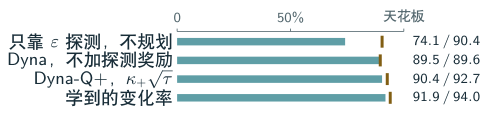
| 比较（关门再重开） | lifetime 率 | 最后 |
|---|---|---|
| 学到的变化率减 Dyna 不探测 | ||
| Dyna-Q+ 减 Dyna 不探测 | ||
| 学到的变化率减 Dyna-Q+ | ||
| Dyna 不探测减 ε |
门一直开的对照里，三种 Dyna 的差都在 以内。学变化率的学习器，其变化检测在 次运行中只触发 次；所以在不变的世界里，学到的探测花费很小。关门再重开时，每次运行触发 – 次。
lifetime 率把关门期与重开后混在一起，所以另按时间窗算配对对照减关门再重开的每步损失：
| 学习器 | 关门期 | 重开后头 万步 | 重开后 – 万步 |
|---|---|---|---|
| ε，不规划 | |||
| Dyna，不探测 | |||
| Dyna-Q+ | |||
| 学到的变化率 |
不探测的 Dyna 重开后每步少拿约 ；重开一百万步以后，仍是 。原因是它的模型里北门是关的：规划一直绕远路，又没有理由去试北门。累计损失随剩下的 lifetime 线性增长（从环境侧算，上限是每步 ）。Dyna-Q+ 把后期损失降到 ，学到的变化率降到 。只靠随机探测的一种会慢慢重新走过北门，后期降到 。它不规划，所以关门期和刚重开时损失大。
图与这张表用的比较量不同。表中是配对对照减关门再重开的每步损失：重开后 – 万步，不探测的 Dyna 与学到的变化率相差 ，约为天花板的 。图中金线是关门再重开这一条件自身在最后 时段的奖励率，两种相差 个百分点。两者时段不同、量也不同，不能直接相减对照。
跟踪量在这里会给出相反的排序。第 15 章的做法是按每次变化后少拿多少、相对各学习器自己的稳定水平去算。用这种算法算北门重开这一次变化，不探测的 Dyna 只少拿约 ，学到的变化率少拿约 。原因是不探测的一种从来没有适应重开的门：它的稳定水平本来就低，也就没什么可丢。所以这一节用配对对照的时间窗损失，不用相对自己稳定水平的跟踪量。
不同意见 有人会说，学到的变化率只是把 Dyna-Q+ 的系数调得更合适，算不上新方法。这有道理：两者在 lifetime 上只差 ，最后 上分不开。不过它的系数随世界变不变而自己调：门不动时很少探测，门动过以后探测变多。Dyna-Q+ 的 要事先定。另一种看法是：一扇门的例子太简单。变化多、来源杂时，从没见过的下一格数出的变化率会混进别的变化；第 24 章的组合里，情境识别就把灯引起的 B 站价跳当成了规律切换。
25.3 检验信号从哪里来课件
前两节已经在用核验：25.1 节用旧技能模型的读数给改版技能定区间，25.2 节用试走的得分收窄区间。后三节还要用：25.4 节的候选要用登记以后的调用核验，25.5、25.6 节的练习和写入要用到期的主回报定用途。在章首的判据上，本节说明这些数从哪里来： 的区间、 的标签，都要由检验信号给出；信号偏了，判据算出的值就跟着偏。评价数据与被评者越同源，信号越密、越便宜，挑选带来的高估也越难发现。
| 层 | 本章里的例子 | 长处 | 漏洞 |
|---|---|---|---|
| 外部可执行核验 | 试走新路线后的得分（25.2 节）；登记以后新调用里 是否发生（25.4 节）；到期的主回报（25.5、25.6 节） | 学习器改不了；配上随时有效区间就能边看边停 | 稀疏，要花真实步数；到站这类判定本身可能写漏 |
| 独立模型评价 | 旧技能模型给新版定区间（25.1 节）；另训的读出或另一份记录复算 | 不另花步数；误差与被评者无关时平均不偏 | 自有误差；与被评者同源、用了同样的数据时误差相关 |
| 同模型自评 | 读出用自己的自举目标检查自己；意外、学习进度等内部读数，即第 18 章的感受（本课提法，尚未检验） | 最密、最便宜，随时可得 | 挑选与验收用同一个读数时，挑出来的高估不会消失 |
最上一层的结果由世界给出，学习器改不了，所以它是本章所有区间的基础；缺点是稀疏，每一个都要花真实步数。中间一层由另一个模型打分，不另花步数，只要它的误差与被评者无关，平均来说不偏。最下一层由被评者给自己打分，最密、最便宜，下一小节会看到它在挑选时的代价。这张三层表与第 13 章七种奖励信号下方的条带是同一张，源头是第 1 章第 1.1 节的验证原则。
从上往下，评价数据与被评者越来越同源，Goodhart 回路越来越短：被优化的量与被检验的量越接近，越容易出现分数涨而真实表现不涨。本章的做法是区间只建在外部核验上，另两层的读数只用来排先后，决定先去查哪一个；最后保留的候选另取独立任务验收。这对应第 1 章的验证原则：学习器只维护它能核验的知识。
不同意见 三层之间只有程度之分，界线不分明。外部的测量和判定条件也是人写的，写漏了同样会被钻空子；独立模型若与被评者用相同的数据训练，也会共享盲点。另一种意见认为同模型自评也有用处。时序差分学习就是用自己的下一步估计检查这一步。只要链条最终接到真实奖励上，自举可以收敛，而且比等最终结果快。还有人主张，在外部核验贵的领域，独立模型是唯一现实的选择；要解决的问题是怎样定期用少量外部核验校准它。
挑选偏差课件
上面说：评价数据与被评者越同源，挑选带来的高估越难发现。这里用一个实验看偏差有多大、从哪里来。发现线提出 个候选，真实用途 各不相同；提出者的估计为 ，误差 与 都独立取标准正态。按 挑最大的一个，再请一位验收者打分，验收误差为 ， 为另一独立标准正态， 是验收误差与挑选误差的相关系数。外部核验取 次单位方差实测的平均，误差标准差为 。共 次运行，各项标准误不超过 。
| 验收者 | 平均高估 | 均方根误差 |
|---|---|---|
| 外部核验： 次实测的平均 | ||
| 独立模型：误差无关（） | ||
| 同源评审：误差相关（） | ||
| 同模型自评：就用 （） | ||
| 独立模型，但也用它来挑 | – |
挑中者的真实用途平均是 。如果验收者就是提出者自己，直接报它的估计，平均报 ，高估 ，和真实用途一样大。原因在挑选本身。按估计挑最大的一个，也就挑中了误差偏大的一个：挑中者的 平均是 。用同一个估计验收，这份误差原样留在分数里。换一位误差与挑选无关的验收者，高估就消失了：独立模型平均不偏，单次均方根误差为 ；外部核验用二十五次实测求平均，既不偏，误差也只有 。同源评审介于两者之间， 时高估 。
为什么高估与 成正比 验收者给挑中者 的分数是 ，高估就是 。 与挑选无关，第二项为零；第一项是 乘挑中者的平均误差 。所以平均高估等于 ，表中 三行正好是 。
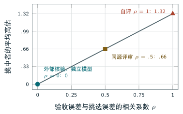
表的最后一行说明另一件事：如果把那位独立的验收者也拿去挑候选，再用它验收，高估又回到 。一个验收者一旦用来挑，就不再独立。所以第 25.4 节在登记后的核验里规定：候选先冻结定义、登记以后，只用新调用核验；挑选用过的数据不再拿来验收。若一定要用同一批数据又挑又验，就要求对整组二十个候选同时成立的区间，代价是区间更宽。
同一机制在第 6 章第 6.5 节出现过：对带噪声的估计取最大，再用同一估计报值，得到的是最大化偏差；双 Q 学习用两份独立估计分开挑选和评价，与这里换一位验收者是同一个办法。外部核验都默认可以在相近的起点上重复试；只有一次 lifetime、不能重来时怎样比较，是第 26 章第 26.1 节的问题。
不同意见 有人认为高估可以事后校正。若知道误差的大小和候选的个数，可以从自评分数里减掉预期的高估；这在统计里叫选择后的推断，不必另找验收者。但这种校正依赖误差模型本身正确，而误差模型又是同一个提出者给的。另一种意见指出，实验里真实用途和误差都是正态、方差相同。真实场景中的误差可能有重尾，高估会更大；提出者的误差也可能小，高估也就小。还有人指出，外部核验也有自己的偏差，比如判定条件写漏，那时表中外部核验一行的零高估就不再成立。
25.4 预测失准：再校准还是细分课件
第 25.2 节检验的是一项固定的估计：查询、行为、起点条件和尾值都不变，只问值不值得花步数去试；第 25.3 节说明了检验所用的信号从哪里来、哪一层能用来定区间。持续运行还会改变这些对象：编码、技能和尾值可能同时更新；同一状态合并的来路可能有不同后果；旧样本的条件均值也可能随时间漂移。本节回到章首判据的第一栏，先用已有经验判断：读数偏了，该整体再校准，还是按来路细分。顺序是：在三站例上看清两种偏差，给出一般定义；再看查询改变后旧行程还能重算什么、新编码怎样接手旧读出、细分值不值得；然后放宽同一均值的前提，处理漂移；最后是候选登记以后的序贯核验。
三站例：再校准还是细分课件
编码、技能和尾值任何一项更新，都可能让旧读数偏离。先在第 25.2 节的三站例上看清偏离有几种。去 C 改版以前，旧版总走旧路线，A 站上的旧读数报 。本节把新版一半时间走新路线这一点说得更具体：新版的低层会读机器人进 A 以前从哪一站来，从 C 来就走新路线，从 B 来仍走旧路线。这条规则是本课为本节构造的变体，第 24 章的三站仓库没有它。第 24 章的高层状态只记上次到的站，机器人站在 A 时这一格就是 A，进 A 以前的来站已经丢了，所以同一个状态 合并了两类来路。从 B 来走旧路线，均值 ；从 C 来走新路线，均值取第 25.2 节一百次试走的平均 ，这里把它当作真值，只为把例子算完。两种来路各占一半，对应一半时间走新路线。要判断的是：旧读数该整体调成一个新数（再校准），还是按来路分成两个数（细分）。
把这个问题写成一项候选预测 ，下一小节给一般定义。各记号在三站例中的取值如下：
| 记号 | 三站例中的取值 |
|---|---|
| A 站上关于去 C 的一项预测 | |
| 进 A 以前从 C 来取 ，从 B 来取 | |
| 预测这次调用的得分 | |
| 执行去 C 新版，直到交回 | |
| ； | 旧读数 ；两组真实均值 、 |
| ； | 两种来路各占一半，； |
| ：整体再校准所降的平方风险 | |
| ：再按 细分所降的平方风险 |
共同均值 的写法与第 25.2 节新版分数 一致。沿用旧读数，组内噪声以外的平方风险是 。整体调到 ，风险降到 ，降掉的一份是 。再按 细分，风险降到 ，又降 ，这一份是组间差 。前一份说读数偏了，后一份说状态混了两类来路。第 25.2 节的一百次试走相当于做了前一步：它把新版的分数估到 附近；只有记下来站，才去得掉后一份。
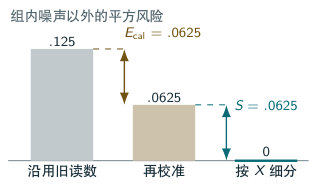
两份恰好相等，原因可以当场算出。旧读数正好等于 ，所以 ，；而 。 时两者都是 。来路比例一变，两者就不再相等。组内噪声是知道 以后得分仍有的波动，取决于每条路线得分的分布；本例只给了均值，推不出这一份。
判定不另花步数。规则有三步：用登记以后的调用求两个量的区间； 的下界超过容差，就细分； 的下界超过容差，就再校准。两者可以都做。区间怎样求、登记怎样做，见本节后面的算法 25.5。
不同意见 有人指出，例中两组各占一半、均值相差 ，是对细分很有利的情形；若从 C 来的只占 ， 只剩约 ，要更多次调用才能把它的下界与零分开。也有人认为，先做再校准，然后看残差是否随 不同，顺序上更省事： 不需要任何新的历史区别，代价最低。两种做法在样本充足时结论相同；样本少时，先做哪一个会影响要试多少次。
候选与两个量课件
上一小节用到的记号，这里给一般定义；后面的再校准、细分和登记核验都用它们。发现线从一段经验里提出的候选记为 （第 24 章）。 是起点以前、行动之前就能看到的一项历史区别，取 或 ； 是调用中要预测的事件； 是调用中执行的固定动作程序，称为探测行为。候选写成一般价值函数 ：； 首次发生时 ； 发生或技能交回后 。这样候选就是一项可以学、可以到期检验的预测。 不带下标，与技能 的交回概率 无关，也与 Dyna-Q+ 的奖金系数 无关；课件改版前把它记作 。
调用的结果记为 ：预测事件时 ，事件发生记 、不发生记 ；预测得分时， 就是缩放到 的得分，三站例属于后一种。在冻结状态 上，旧读出给出预报 。记
预测事件时， 就是两组的命中率。旧读数的平方风险分成三份：
推导只需在给定 下展开平方： 的条件均值为零， 按权重 平均为零，交叉项都消失。第一份是知道 以后仍有的波动，只读 和 的任何预测都去不掉； 只要把读数整体调到 就能去掉； 只有按 细分预测才能去掉。上一小节在三站例上算出了后两份，都是 ；第一份要看两条路线得分的分布，那里没有给出。预测事件时第一份就是 ，可以算出。第 20 章的转角例（下文经验维护一图中的数值）中 ，，，，得 、，第一份为 。三份合计 ，即旧预测的损失； 与 就是该图中三个预测器损失之间的两段差。分解与第 18 章的条件均值分解同型，也对应 Murphy（1973）对预报 Brier 分数的分解： 对应可靠性一项， 对应按 细分预报时的分辨力一项。
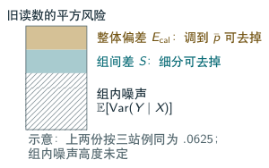
不同意见 这里的 只看一项二值区别。真实的历史区别常有多种取值或连续取值。分得越细， 越大，每组样本越少，估出的 偏高，所以下文要求区间，并为同时检验许多候选分配错误概率。也有人认为平方风险不是控制该用的判据：一项 很大的区别若不改变任何选择，细分它没有用处；下文的局部控制价值 处理这一点。
共同更新下的辨识与探测
前两小节讨论的是 A 站上一项固定的读数。同一次知识更新却可以同时改变三个对象。状态编码决定读出哪些历史区别，技能决定接下来生成哪种行动轨迹，规划尾值决定怎样评价轨迹交回控制后的机会。要判断旧经验中还剩哪些信息，先把轨迹上可计算的分数与产生轨迹的分布分别写出来。
固定一份查询 ，记作 而不用 ，是为了不与动作价值混淆。 是当前编码器，技能 给出可启动条件、原始动作的选择和到达后交回控制的概率， 是余下 步时规划器将要读取的尾值， 是此刻余下的原始步数。同一条 lifetime 会反复产生新查询。本次核验从可启动的历史 开始，将本次执行所用的版本固定到交回；其间学到的新参数可留待下一次查询使用。若在调用途中立刻改换内部策略，则应把依反馈换版本的执行规则也写入 ，原冻结版本的表项只回答原问题。沿 从 出发，记 为直到技能交回、环境终止或期限届满所用的原始步数， 为途中累计主回报。本节先用有限期、不折扣的主奖励。若自然交回且还有时间，令 ，另外两种情况令 。在交回时为规划所用的一次得分及其条件期望为
这里 固定在提出查询时的版本。已学尾值可以用于比较规划分数。要把这个分数解释为采用某项实际续行规则的期望主回报，则 还须正确评价该规则在各个交回历史上的余下收益。若这些历史在同一编码中合并，须检查同一数值能否回答各自的续行问题。Sutton、Precup 与 Singh，技能模型与规划，§3
一段旧行程可记为 ，另外保留实际行动与交回方式的概率，以及是否自然交回、真正终止或仅仅截断。这里的完整历史是记号，实际存储只须足以重建有关的递推、沿途得分与停止判定。只换尾值时，可在同一终点重算这条行程的分数。还换了编码，则应从可同步的前缀重放新递推，或证明旧状态存在到新读出的精确换算。若技能也换了，旧行程的分数虽可能算得出，它在新版下出现的概率还要另算。相同环境和受控起点下，可重算的旧路径若覆盖目标路径，则可用实际记录的概率校正每一步的原始动作、继续和停止选择。若有在相关状态动作上已辨识的动力学，也可依新版重新组合一步后果。其余分支保留已有信息容许的范围。重算一份已见记录不会多产生一次新版调用。技能变更后的可识别性
三种改变各有去处：
- 只换尾值 ：在同一终点逐条重算旧行程的得分。
- 换了编码 ：从可同步的前缀重放新递推，先把旧读出搬到新编码上再校准，见下一小节的算法 25.4。
- 换了技能 ：轨迹的分布变了，回到第 25.1 节的路径覆盖与第 25.2 节的试用。
当旧记录把两个终点合为同一码、而新尾值在这两个终点上取不同值时，旧码不足以重算新版得分。即使每条已有轨迹都能重新评分，目标技能若可能进入旧行为没有支持的分支，还须约束该分支的后果或重新取得经验。支持不足时的界与重新核验方法见技能改版后的路径覆盖与规划误差。
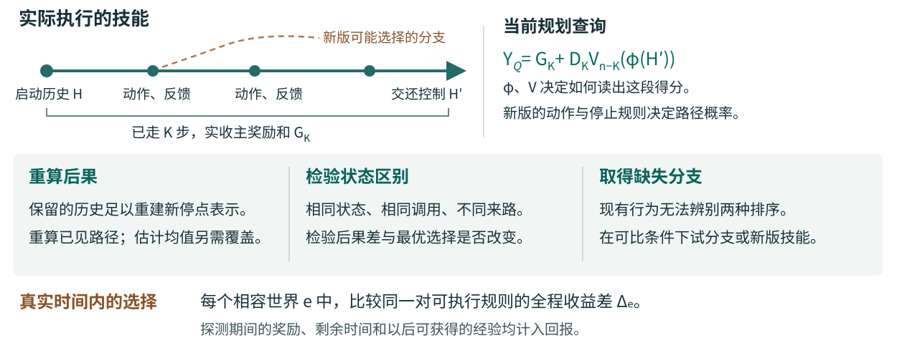
两种常见误解。其一，以为重新编码能找回旧行为没走过的分支；重算只作用于已见路径，未见分支的后果仍须试用或可靠的模型。其二，把查询中固定的 当作真实的续行价值； 是查询的一部分，要把分数解释成某项续行规则的期望回报，还须另查 是否评价正确。
不同意见 有人主张编码、技能与尾值分开更新，每次只动一项，旧经验能重算的部分最多。另一种意见认为三者本来相互依赖，分开更新会让中间版本彼此不配，联合更新再统一核验更省事。本课没有比较两种做法的代价（本课的整理）。
新编码下的旧读出校准
在同一条经验流里换编码时，先查新读出能否复原旧读出，再用真实后果检验。这对应共同更新下的辨识与探测三种更新中的第二种。只换编码时，技能与尾值不变，旧行程可从同步前缀重放。但旧读出仍以旧坐标为输入，所以须先在共同历史上再校准。若已知旧状态到新编码的可逆换算，旧读出可直接搬过去，见第 20 章第 20.6 节表示变更下预测、技能与后果模型的复用；这里处理映射未知、只能用共同经验拟合的情形。
算法 25.4 在共同历史上检验新编码。
- 拟合：固定所问的预测与技能规格。从同步起点同时递推旧状态 与新状态 ，用旧读出在同一时刻的输出训练新读出。
- 检验：冻结两套读出。在后续轨迹上比较两版的动作分布与停止概率，并用实收的事件、奖励、时长和停点检验后果预测。
- 切换：只在满足覆盖与预设误差容差的状态上，等正在执行的技能交回后，在决策边界切换；其余状态沿用旧版。
三步的分工要分清。拟合要求两套编码读同一段历史，否则分不清是编码变了，还是经验本身变了。同步需要相同的初始记忆或能恢复状态的历史前缀，没有时只比较能同步初始化的区段。检验有两项：新读出能否复现旧读出，以及它对真实后果的预测好不好。前者只说明搬运成功，后者才说明知识仍然有效，还会暴露旧预测本身的误差。检验区段开始时冻结两套读出，事先规定比较的情况、最低样本数和误差容差；只有执行行为与所问行为一致，或能正确做离策略校正时，观测到的后果才能检验该问题。Sutton 与 Barto，第 2 版 §5.5
切换在技能边界同时换技能策略与后果模型。新编码若合并了后果不同的历史，同一读出只能估计混合后的均值。若同时改了技能的内部策略，还须按第 25.1 节另行检验新版的路径覆盖。切换后的学习器若进入此前未覆盖的区域，要用新增经验检验这些区域；两套状态和读出的维护都计入资源预算。
例（三站仓库）。 把进 A 以前的来站加进状态，就是一次换编码：新状态比旧状态多记一格来站。第一步让新读出在两组来站上都复现再校准后的旧读数 。第二步用真实得分检验：两组分别约为 和 ，与复现的读数不符。这就是本节开头算出的组间差 。只靠再校准去不掉它，要按来站分开读出。值不值得这样做，是下面两小节的问题。
两种常见误解。其一，复现了旧输出就以为没有问题。新编码若合并了后果不同的历史，读出只能估计混合均值，这时再校准不够，要按历史细分。其二，忘了切换本身会改变采样分布；切换后还要观察新到访的情况。维护两套版本也占计算与存储，预算紧时可以只检验关键的一项读出。
不同意见 有人主张新读出复现了旧读出就直接切换，在使用中再慢慢修正，省下检验占用的样本。另一种意见认为复现只说明搬运成功：三站例里复现的 恰好遮住了 与 的分歧，不对照真实后果就切换，会把合并的错误带进规划。取舍在于检验区段占用的步数与切换出错的代价，本课没有算这笔账（本课的整理）。
由自身经验选择表示更新、模型重估与主动检验
再校准假定旧读出的误差只来自坐标改变。表示未改时，预测也可能持续出错；学习器须从自身经验判断该重估读数、细分历史，还是主动取得新反馈。智能体可以知道自己发出了什么命令、改变了哪些参数，以及随后收到了什么。它通常收不到遗漏了一项状态变量或执行器已换版本的通知。已有预测连续出错，至少有三个解释：相同状态下的平均后果估得不准；当前状态合并了后果不同的来路；实际采取的行为只产生了无法区分两种解释的观测。这三个情形需要不同的更新。它们也可以同时发生。
比较的对象。 记行动前的可见历史为 ，当前状态为 ， 是在该起点实际可以执行的一项动作或短策略， 是随后按接口可以取得的一个有界标量。候选记忆 的递推生成与有限容量下的检验见第 20 章可观测历史中的候选记忆与状态细分；研究者能看到而智能体收不到的真值不能用来更新。
误差的两种可减少成分。 固定一段可比较的环境条件、起点历史分布和实际执行规则 。记 为该参考试验下的期望，平方风险为 。旧预报 已冻结。令 ，。向原预测加入中间量 ，再加入 ，可得
两处交叉项为零，分别因为给定 后 、给定 后 的均值为零；第二项就是第 18 章历史线索与可约预测误差中两种表示的风险差，这里多出的第一项衡量冻结旧预报的校准误差。前两项都有可能很大。第一项说明当前所用读数需要校准，单凭它无法定位误差源于初始化、欠拟合、技能更新还是外部变化。第二项只说明 对这一行为、这项后果和这批起点有额外预测价值。最后一项还可能包含尚未提出的历史区别。用真实行为数据解释干预 的后果，需要固定执行规则，或有可识别的行为分配和覆盖；把行为数据按最后选了什么简单分组，往往同时改变了起点分布。
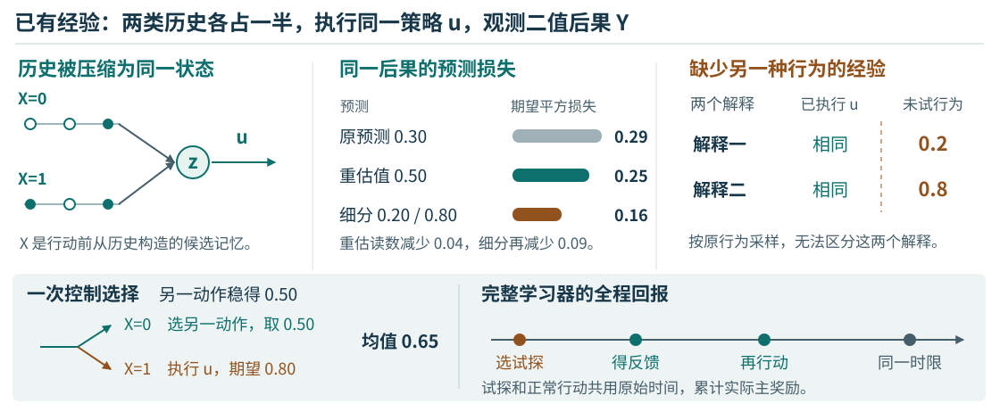
平方误差的构造例与实际评分
图中数值与第 20 章候选记忆与状态细分的算例相同。两组历史等权，旧预测 ，同一 的二值后果概率为 、。三个预测器的总损失依次为 ，重估与细分的收益分别为 、。现在增设一个可行动作，确定获得 ，并令 的奖励等于 。只据原状态选动作的最优期望奖励为 ；记得 后，两类历史分别选择替代动作和 ，期望奖励为 。若替代动作始终给 ，同样的预测改进就没有这项控制收益。右栏的未试行为即下文的 。图中概率是规定的机制，用于推导，算法只能用真实到来的 学习。
三站例：两种解释与一次选择。 回到本节开头的三站例。 说明按来站细分能让预测更准；细分是否值得，还要看两件事：数据能不能分出 有没有用，分了以后选择变不变。改版以前，旧版去 C 在两组来路上都走旧路线，得分都是 ，与 无关。对新版有两种解释：
| 旧版去 C | 新版去 C， / | |
|---|---|---|
| 解释一： 无关 | / | |
| 解释二： 有关 | / |
解释一说新版选路线与来站无关，每次掷硬币，两组都是 ；解释二就是本节的变体。两种解释对旧版的预报完全相同，只看旧版的记录永远分不出来。第 25.2 节的一百次试走只记了新路线的得分，没有按来站记账，也分不出。只有在两组来路上都执行新版、按 分开记，才能取得区分的证据；单次反馈一般也不够，要多次。
按解释二回到控制，备选去 B 稳得 。不记 时，去 C 平均 ，高过去 B，选去 C，得 。记住 以后， 时去 C 只有 ，改选去 B 得 ； 时仍选去 C，得 ；平均 ，多出 。这 只来自 那一半起点改了选择，每次多得 ，平均下来是 ；新路线再好，也只影响原本就选去 C 的那一半。若去 B 只有 ，两组都选去 C：记住 仍让预测损失降 ，这次选择的收益却是零。预测损失降了，决策不一定改进；增益要看最优动作是否随 改变。下一小节把这个 写成一般式 。
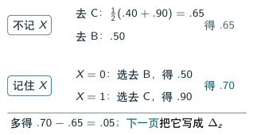
两次风险下降与这里的 都是总体上的结论；有限样本要用事先冻结的估计作配对预测，差额可能为负。评价发现和探测规则时，从付出成本之前起按原始时间累计主奖励。动作条件下的预测检验见 Littman、Sutton 与 Singh，动作条件预测。
不同意见 有人主张先把能细分的都细分，等数据多了再合并，理由是漏掉一条有用区别的代价比多存一项读出大。另一种意见认为，细分会把样本摊薄，每组的估计都变宽，控制上可能更差；先用 的估计筛一遍再细分更稳。
有覆盖时的更新。 留出检验的做法同第 20 章：用较早访问选定候选、拟合并冻结读出，在随后相同起点条件下先作预报、后取得同一个 。这里多一项旧预报，记 ，配对改进为 与 。它们比较实际估计器，只在读出已充分拟合、起点有共同覆盖时才逼近上式两个非负总体量，实际比较可以为负。策略、技能或环境继续变化时，应规定这次评价所跨的时间和当时实际执行的行为。等待反馈占用预算； 尚未返回时，除非定义本身规定超时即失败，不能把缺失值记为零。
- 行动前，由有限个递推特征提出候选 ，在规定的行为与起点上保存三项预报；多个旧、新读出可以共享一次实际执行。候选生成、发现期拟合与留出检验的步骤见第 20 章有限容量下的在线更新。
- 后果到来后用冻结的预报作配对比较，按结果写入 的不同部分：固定 的新读出持续占优时，重估 中的后果模型； 在重新估值以后仍有增益且值得占用状态容量时，把它加入 ，并重新拟合依赖它的读出。其他技能仍须按各自的问题检验。设计者给出的有限特征族若表示不了有关区别，这一步可能没有候选胜出。
- 若影响决策的分支缺乏共同覆盖，保留不确定性。在接口允许的动作序列中，找出对可见结果有不同预言、且可能改变后来选择的试探。只有在预期决策收益足以补偿机会成本时安排试探。若可行动作都给出相同的观测律，增加采样或更换更新步长无法识别机制。行为等价与可执行的探测
- 将维护决定接回控制。以同一起始条件比较只重估模型、允许发现表示、另允许定向试探的完整学习器，并设相同试用次数但随机选择时机或对象的对照。每个学习器自行行动，以第 15 章的全程回报 比较。固定数据能比较预测器；全程回报还包括试用、等待、失误与后续使用改变的收益。
候选探测的构造与给定概率模型下的信息价值
试探的候选也可从经验提出。 可在有限工作区内保存最近出现过的可行动作、短动作序列和可核验的反馈事件。保留几项在已见数据上相容、对某些候选序列却作出不同预报的后果模型。候选由这些组合产生，模型来自所允许的归纳假设和实际样本；学习器不读环境编号。若一项序列从当前位置无法启动、不能取得候选反馈，或所有可能反馈都导向相同的后续选择，就不应仅因模型分歧大而优先执行它。所有模型都可能漏掉同一规律，因此一致预报也不足以保证正确。
给出一项可计算的比较。设先试探未试行为 、再作最后一次任务决策。探测期间的净代价为 ，观察为 。假设试探只揭示信息，保留相同的后续行动机会。用相容模型及明确给定或估计的权重，计算收到 后各行动 的期望主奖励 。相对暂不检验的收益为 前一项允许行动依赖返回结果，后一项只允许在结果到来以前选定行动。权重与条件预测若主要由先验决定，这就是模型条件下的估计，尚无已见样本支持的部分应保留不确定性。现实中的试探还会移动身体、占用时限或改变权限；此时必须把实际结束状态、使用时间以及试探期间的主奖励纳入维护决策的长期价值。这一比较也说明了为何候选状态的预测增益不能直接充当外部奖励。
上述规则可以比较和否定。若在共同覆盖的后续访问上只更新读出就取得同样改进，则样本没有显示扩展状态的附加价值。若定向试探不优于同预算的随机试探，回报改善可能只来自额外覆盖。若两类状态被分开后行动仍不变，应检查未来哪些决策会读取这项区别。语言智能体可将一次查询的回复作为 ；机器人也可把一次主动感知的可读数值作为 。二者共享的界限是：反馈须在接口上实际返回，且能区分原行为下仍然相容的解释。语言与身体的可执行检验 · Littman、Sutton 与 Singh，动作条件预测
沿同一条经验流考察状态、预测和子任务
转角的观测总是一样。机器人已经会预报沿原路能否按时到站，但实际到站的早晚常与预报不符。沿用这一条路，可能只需把旧预报再校准；也可能应该记住抵达转角前发生过什么。即使后一种记忆有助于预测，是否值得绕路探测、练习另一种走法，仍取决于以后可以怎样利用这项区别。
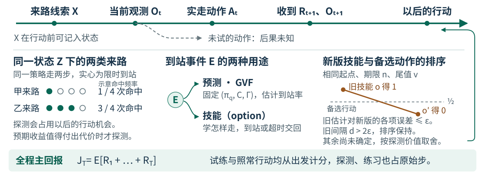
图中实线是一段可以实际发生的经验。机器人抵达转角时已知上一步是否见过指示，记在 中。它选前进，得到下一步的主奖励和观测；两步内读到站点标志，才给原先的预报填入 。那趟若改走另一边会怎样，仍是未取样的分支。探测与技能练习也只能沿这种顺序取得经验。下次再来时，之前学得的预测已经可以影响这次选哪条路。查看大图

状态遗漏与决策损失。 令 为行动前的智能体状态， 为从已有观测递推的候选记忆，例如进转角前是否见过指示。固定起点的抽样分布、两步前进策略和到站判据，随后才会观察到结果 。若在相同 下，两类 的到站率有别，一个共同的预报便无法同时校准。可以用较早的经过提出候选，把规则和两个读出固定，在后来的经过对同一个 配对评分。反复使用同一批失败来挑选线索和评价线索，会高估它的用途。这个检验也依赖两类来路都实际执行过所约定的行为。可约预测误差的推导
要判断是否值得把 作为决策状态，比较还须涉及备选动作。合并来路造成的控制损失见第 18 章状态混叠造成的决策损失；读取这一历史位对首动作选择的局部增益 及其为零的条件，见下文历史细分的局部控制价值。放在这条经验流上，当前轨迹若只包含前进，其他动作在各类来路下的后果仍未知，留出预测的改善不能填补这项缺失；状态容量有限时，还需计入保存这一位会挤掉哪项旧信息。
有代价的探测。 假如两个环境沿现行走法产生完全相同的可见历史，却对一条备选路线给出不同后果，再多走几次原路也无法辨认哪个环境产生了这些经验。探测必须有可能使两种解释给出不同的可观测结果。即使能完全区分它们，若两种结果都支持同一行动，且以后也没有其他用途，这次信息对控制的价值仍可为零。
实际探测常要走到别处，也占用服务时间。照常行动、探测或练习都是一项知识操作 ；按 结束的时刻拆开的剩余预算价值 及探测净价值见第 25.2 节探测、重新规划与全程回报。这里操作结束时的记忆 同时包括转角之后的所在位置和内部知识，所以须比较两个安排各自留下的机会。一段真实经验只给已执行安排一个样本。在可比起点主动试用、满足覆盖条件的离策略估计或可信的后果模型，才可能提供另一个安排的估值。 是评价用的期限；部署接口若未给出剩余时间，学习器的行为规则仍只能读取自身已有的信息。探测的可辨识性 · 练习价值与估计目标
历史细分的局部控制价值
上面的分解衡量 减少多少预测风险；是否值得把 写入决策状态，要看它能否改变行动。固定旧状态 所合并的历史类及其参考分布，并规定一个在该类全部历史上都可执行的有限技能集。学习器从先前经验提出候选记忆 ；在作决定之前，可从已有历史递推出它的取值。暂时把技能固定成定义在原始历史上的规则，以便两种编码面对相同的执行规则。如果候选加入后技能也读取新特征并据此改变行为，就要分别查询新旧行为。对同一批起点、同一剩余期限，令 表示给定该类来路后，先执行 、再按共同续行规则行动的条件期望主回报（规划分数）。设能保留原状态并增加候选记忆，先不计额外记忆与学习成本。可用这条区别取得的局部决策增益是
命题（证明）。 设动作集有限，各 可积。取不读取 时的一个最优动作 。两项相减等于 ，被平均的差处处非负，故 ；且 当且仅当该差几乎处处为零，即有一个动作在几乎所有取值上都最优。平手可以保留同一个动作。用上一小节的三站例验证：去 B 稳得 ，去 C 新版在两组得 、；不读 时最优的是去 C， 就是它，平均 ；，也等于第二种写法里的 。若去 B 改为稳得 ，两组都选去 C，，尽管 减少预测损失的那 一点没变。上文折叠部分的转角构造例是同一结构：替代动作确定得 ， 在两类来路下的期望分别为 、，两类等权，则 ；替代动作改为确定得 时 。要得到严格的局部决策收益，历史特征必须区分最优行动不同的条件。若目标是发现预测知识，则第 18 章的条件均值风险差已经回答了另一项问题。历史压缩与预测风险 · Subramanian 等，信息状态与控制，§§2–3
用章首的判据读这个数：读 不另花真实步数，；只看一次选择，；改选的概率是 （ 的那一半起点），改选时多得 ，于是 。
在同一条经验流中，学习器可在已经覆盖的历史与行动上，让两种读出对同一次实际后果先给预报，再成对结算。要判断 是否严格为正，还须检验不同 下的行动分差。若两类历史从不执行同一个备选行动，已见的分差会同时包含来路与选择的差异。若所缺的分数仍足以影响最优行动，保留未定并考虑主动试用。这里默认只增加 ，不挤掉旧信息；若是等容量替换，须直接比较替换前后的两个完整表示。行动时只用到了局部收益，长期评价还要计入维护费用以及改选行动带来的访问变化。
的期望针对同一类起点，不能用记录中恰好选了 的那部分子群代替。常见的误解有两个：只看预测误差下降就把 写进决策状态；以为在单条经验流里能直接看到 。前者忽略了最优动作是否随 改变，后者忽略了一次调用只得到选中行为的结果。
不同意见 有人认为 太保守：它只看一次选择，而记住 还可能改变以后到访哪些状态，闭环收益可以比 大，也可以更小。也有人认为它太乐观： 假定各组的 已知，实际要从有限样本估计，组分得越细，估计越宽，按估计选动作的收益会低于 。两种意见指向同一件事： 是用来筛选候选的参考量，最后仍要在 lifetime 回报上验收。
按时间分组：情境检测
上面的细分按历史分组：当前状态 把来自不同站的历史合在一起，候选记忆 是行动前就能读到的历史函数， 回答记住它值不值。三站仓库里，进 A 以前的来站就是这样一个 。
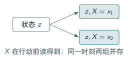
现在设想另一种变化：站 C 的规则在旧版与新版之间来回换，不止换一次，也没有任何标记。同一个状态在不同时段服从不同的动态，要分的组是现在处在哪一个情境。这个组号读不到，只能从预测误差里推出来。困难与细分相同，只是落在时间的尺度上。da Silva、Basso、Bazzan 与 Engel（2006）提出的带情境检测的强化学习（reinforcement learning with context detection，RL-CD）处理的就是这种情形。按本课读到的部分，它同时维护几份环境动态的部分模型，每一份对应一个情境；当前模型的预测开始变差，就判断情境变了，换到另一份模型。
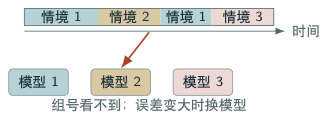
把上面两张图对照，可以列成下表：
| 细分（按 ） | 情境检测（RL-CD） | |
|---|---|---|
| 分组依据 | 行动前可读的历史函数 | 时段；从预测误差推断 |
| 模型 | 各组各留一份 | 每个情境一份部分模型，检测到变化就换 |
| 旧估计 | 各组同时在用 | 留着不覆盖，情境重来时再用 |
| 对应本节 | 细分 | 介于再校准与细分之间 |
再校准把唯一的一份估计往新数据上拉，旧值随之被覆盖；细分按可读的 各留一份；情境检测像细分一样各留一份，组号却要靠误差去认，切换也像再校准那样由误差触发。表末一行的归类是本课的整理。各留一份的好处是旧模型不被覆盖，旧情境回来时可以直接再用，这与持续学习中的遗忘是同一个问题的另一面。
这类方法有三处界限。第一，它默认情境会重来，并且默认各情境的动态差别大到能从误差里分辨；若变化是缓慢漂移，就没有可以回去的旧情境，那是下一小节漂移界处理的情形。第二，模型份数会随时间增加，需要删并的规则。第三，本课只核实了这篇文献的出处与方法思想，原文的实验环境与数值没有读到，因此这里不报任何数字，也不说它在哪个环境上胜过谁；原文何时新建一份模型、用什么量判断情境变化，也还要对照原文。第 26 章的 Jelly Bean World 允许实验者规定周期性的奖励日程（持续世界中的记忆与跟踪），可以拿来检验情境检测。da Silva、Basso、Bazzan 与 Engel，Dealing with Non-Stationary Environments Using Context Detection，ICML 2006，217–224
不同意见 有人认为不必分份：只要再校准跟得上来回的变化，一份模型就够用；多份模型只是在内存里堆积旧东西。另一种意见来自函数逼近：把情境当作网络的一个隐变量输入，让网络自己学会切换，不必显式检测和分份。三种做法问的都是本节那一个问题，即一笔预测误差该归给世界变了还是还没学好，只是回答的粒度不同。
非平稳调用的抽样误差与漂移
配对结算和自选调用的误差界都把各次调用当作同一条件均值的样本；持续运行中技能、来路分布和环境都会变，这一前提须放宽。一次核验固定查询、编码与得分上下限，把各次完整调用的得分缩放到 。在第 次启动以前，根据当时可用的信息决定是否纳入，启动以后按预先规定的方式完整结算。记 为已知本次启动决定、尚未知本次结果时的信息，。按调用的启动顺序核验，各次互不重叠。即使执行规则与测量版本固定，同一编码下出现的具体历史或环境响应也可能改变。因此允许 随调用而异。
沿用自选调用的误差界中的条件 Hoeffding 论证和错误概率分配 ，只把固定均值换成随调用变化的 。每步增量的条件均值仍为零。所以以至少 的概率，同时对所有已达到的 ，
这个区间围住所收调用的平均条件均值。设当前规律和可比起点下的目标均值为 。若依据给定的变化上限或另有置信保证的测量，能够保证 ，由三角不等式可得下界 和上界 。例如有独立依据给定每个原始时间步的漂移上限 ，固定查询与可比起点，调用 的时刻为 ，可取 ；该假设约束的是所问条件均值本身。样本数增加会缩小抽样项，不会自动缩小漂移项。一项有不确定度的漂移估计还要与各行的抽样界共同分配错误概率。Howard 等，时间一致置信序列，§§2–3
例（三站仓库）。 第 25.2 节在新路线上试走一百次，样本均值 。 是新路线的真实均值；取 ，得 。不计漂移（）时 ，新版 的下界是 ，改选已定。若站 C 的规则在这期间平均可能偏了 ，则 ，，排序回到未定。下界恰为 的漂移界是 ：漂移界再大，一百次试走也定不了序。
三种常见误解。其一，以为样本越多，当前估计就越准；没有 的依据，样本只说明过去。其二，按结果好坏、快慢或事后发现的线索挑样本；纳入与否必须在启动前决定。其三，换着尾值或读出挑对自己有利的结果；新选定的读出要用新调用检验，或事先对整个版本族统一控制。
设两个可能世界到最后一次调用为止产生完全相同的可见历史，随后一个世界令当前得分恒为零，另一个恒为一。如果不对变化施加约束，所有旧样本在两个世界中都相容，当前的均值可以是 或 。此时可保留完整的 ，或在能约束当前条件的期限内重新试用。一次新结果只能区别确实给予互斥结果的两个假设。本节推导也不能用来先从同一批结果挑一个最有利的尾值、来路特征或技能，再把挑中者当成事前固定查询。若版本由已有资料选出，可在选定后用新调用核验，或事先对候选类给同时有效的界；重加权后的路径得分还须按其实际范围处理。固定查询下的自选调用误差界
登记后的序贯核验与候选保留
前面的核验都针对事先固定的查询。发现线提出的候选 （对应的 GVF 为 ）是在经验中途从已见历史中选出的。所以核验须从登记之后开始（挑选用过的数据为什么不能再验收，见第 25.3 节挑选偏差）。核验的结果决定候选历史区别是否保留。第 次登记分得 ，新版本另行登记；第 次查看再乘 。两级预算之和 ，所以全体候选、全部查看的误报概率合计不超过 。只在登记后、反馈揭晓前决定启动。各次调用互不重叠。先考虑每个结果都可核验的情形。每组保存调用数 、命中数 。当 ，以 为中心、以 为半径作区间，与 取交；零次调用时将区间取为 。条件 Hoeffding 界控制一次偏差，对两个组、每个已达到的样本数和历次登记分配错误概率，总和至多 。因此可按中途结果决定何时停止。候选由此前历史选出，不能再把触发登记的那次命中当作新证据。若部分结果缺测，仍保存第 组的总调用数 、可核验命中数 和未决数 。同一批调用中真实但未必可读的命中数必在 内。因此用 与 的交替代原区间。只保留可读结果会漏掉依赖成败的缺测。这个界针对本来具有确定真值的事件。若事件根本无法由指定接口定义，就必须重新定义预测目标。自选调用的误差界 · Howard 等，时间一致置信序列
两种解释也可以由学习器拟合出来。对同一 ，第一种在旧状态内学习一个共同命中率，第二种按 分别估计。必要时还可构造按可见运行阶段分层的读出，以检验时间变化。它们只需对拟议行为后可观测的结果给出预报。有限试用预算下，学习器要选择较能区分这些预报的一项行动。设 是从当前历史出发、可实际执行的短探测计划，可以先到目标起点再调用候选技能。用已见的起点、转移和返回结果拟合两项候选解释。对每个 ，记 为预算内到达指定起点且取得核验的概率， 为整次探测的期望原始步数， 为解释 对实际取得核验时 的预测概率。以下各项都用发现期拟合值。可以用
排列有足够拟合资料的可行候选。两种解释的预报接近时，即使常能取得结果，这项试用也难以区分它们；能分开预报的起点若难以到达，同样要付出代价。没有资料的路线应标记未知，可用留出的少量随机试用配额访问。这个排序只负责在给定配额内挑选试用，分数没有主奖励单位。相同历史上两套拟合器的分歧是间接线索；只有执行所登记的行为、取得登记以后、未用于选择该问题的新反馈，才有直接检验。若两个解释在所有可执行探测下都给出相同的可见反馈分布，则无法由此次交互识别它们。
给两组所得区间 ，在矩形 内让两个概率取遍允许值，将两项风险差分别取最小与最大。这里沿用候选与两个量的定义： 是旧读数偏离共同均值的校准项， 是两组均值相混的细分项。若 的下界超过预定的最小有用差异，为该预测保留候选历史位，再按资源与控制用途决定是否写入共享状态；若 的上界已很小而 的下界仍大，先重估旧读出。若两者都有依据，两项都可更新。未能区分时暂缓决定；槽位或原始步预算到期，可释放候选并记录未定。每次只从实际选中的行为取得结果。是否值得专程前往缺样本的来路，须把探测试用与直接工作的整段可执行规则放回同一剩余期限比较。无先验的序贯探测与全程回报
算法 25.5 单一经验流上的预测问题发现。
- 登记：从已完成的经验片段提出候选 ，构造 ，用已见经验拟合共同与细分两项读出；登记时固定起点层、问题、两项读出的预报和预算，第 个候选分得错误概率 。
- 采样：在以后两组可比起点上都保留执行 的机会，看到结果以前决定是否启动；在交回或期限届满时，按启动时的 记调用数、命中数和未决数。
- 求界：更新 的区间，在两区间组成的矩形内让概率取遍，求 与 的上下界；未决的结果保持未知，不记为零。
- 维护： 的下界超过容差就保留历史区别（细分）， 的下界超过容差就重估读出（再校准），两者可以同时成立；若模型类的联合预测与共同置信区域不相交，修订模型类；预算用尽仍未定时，释放候选槽并记录未定。
收益上界已低于所关心的幅度时，可以提前停止检验。只有规划器或控制器实际读取新知识，才可能通过它改变以后的行动。
例（三站仓库）。 是进 A 以前的来站， 是这次调用的得分， 是执行去 C 新版。这里预测的是得分，不是事件；第 2 行按来站分开记调用数和得分和，命中数换成得分和即可，其余各行不变。
两种常见误解。其一，用提出候选的那段经验去检验它；那段经验就是挑选的依据，必须用登记以后的反馈。其二，以为 显著就该保留；细分只说明预测改进，对控制是否有用还要看历史细分的局部控制价值 。预算用尽而区间仍宽时，保留未定。
不同意见 一种看法认为用 的下界决定细分太保守：样本少时下界常为零，好的候选迟迟留不下来，可以改用较宽的阈值或先验。另一种看法认为持续运行中候选不断登记，不控制总错误概率，误报会越积越多，保守是要付的代价。还有人主张直接按控制价值筛候选：三站例里 而 ，去 B 若为 则 ，预测改进不一定换来更好的选择；这样做的代价是要在两组来站上都取得各动作的后果（本课的整理）。
没有覆盖这一说法描述采样条件，无法由 预测这一说法描述给定行为下的条件分布。即使通过历史细分改善预测，缺少其他行动的反馈仍会妨碍控制比较。反过来，未观测分支可能已经能用一个恰当的共同读出预测，单凭它尚未发生，无法决定是否要分裂状态。
已解决的部分与条件 单次探测的价值由章首判据算出；上文的 给单项试用排序。观测的收益满足自适应单调与自适应次模（多知道一项，再加一次观测的边际收益不增）时，逐个贪心地选观测有常数倍的近似保证（Golovin 与 Krause 2011）。
已有做法与假设 按一步信息价值或 排队，每次选当前最高的一项，就是贪心。它依赖收益递减这一条件。
未解决的部分 两项探测合用才有信息时，贪心会把它们都放弃。例：、 是两个独立的公平比特，最后猜 ，猜中得 ；读 或读 各花 ，没有其他后果。直接猜得 ；只读一个，仍然只能猜，净得 ；两个都读，净得 。第一次读数的边际毛收益是 ，读过一个以后，第二次读数的边际毛收益是 。收益随已知信息增加，不满足次模条件。有限计算下，何时按一步价值排序已经够用、何时要搜索更长的探测序列，没有一般的判据。
怎样检验 在同一总预算下比较三组：直接行动、逐个按一步价值选探测、两步前瞻。操控终局任务（猜 ，或只猜 ）和读数代价。测量净收益与选中的探测组合。若把终局任务换成猜单个比特后排名反转消失，说明反转来自观测互补，不来自探测费用。重复单位是独立抽取 的回合。
本节的结论是：查询随编码、技能与尾值变化时，先分清旧行程还能重算什么；读数偏离时，校准项 与细分项 的区间分别决定该重估读出还是该保留历史区别；检验从登记之后开始，并在自选行动与漂移下保持有效。探测、核验与技能练习占用的是同一段有限 lifetime 里的原始步。多个候选同时等待试用时，这些步数先分给哪一个，是第 25.5 节的分配问题。
25.5 练习时间分给谁课件
第 23 章第 23.6 节的发现元策略会不断提出候选。第 25.1、25.2、25.4 节又说明，已有知识随时可能需要重估、探测或细分。这些候选都要占用同一份有限的练习时间。本节讨论：多个已通过筛选的候选同时等待时，下一段原始步该分给哪一个。按章首的判据，本节处在第三栏“练与写”。练习占用真实步数，回报在以后到 A 时才见，所以判断所需的信息来自以后。下文设以后到 A 的次数 已定。与练习相对的操作是暂缓，即照常行事，把这段步数用于原来的工作。
把章首判据里的操作 换成练习，参照换成暂缓，
式中 是期限内 A 处的选择还要出现的次数， 是练习占用的步数少收的主奖励，与规划分同一缩放。式子说的是：练习的价值等于以后在 A 处改选的次数乘每次多得，再减去练习占用的步数。它的推导与章首判据的推导相同，只要求练习只经它占用的步数和练成的知识影响以后的回报。
三站例：两个候选争一段练习时间 两个候选都已通过筛选，练习时间只够给一个，练习代价都设为 。候选甲是第 25.2 节的新路线：好坏先验各半，好则在 A 处改选去 C，多得 ，所以每次到 A 的期望多得是 。候选乙是第 25.4 节的按来站细分：一半机会来自 B，此时改选去 B，多得 ，每次的期望多得是 ，就是第 25.4 节算出的 。代入上式：
| 候选 | 每次到 A 的期望多得 | ||
|---|---|---|---|
| 甲 新路线（25.2 节） | |||
| 乙 来站细分（25.4 节） |
若 A 只再出现一次，两项都是负值，都应暂缓；若再出现十次，甲为 、乙为 ，应练甲。表中 与 是本课构造的数，两项多得取自第 25.2、25.4 节。
同一笔账也可以按时间切开来记，这与第 23 章的写法对应。学习器 含一整套规则，用来提出、筛选、试用、修订并使用新知识。 和基准 从首次生成候选以前的同一初始分布出发。给两者同样的真实期限 、接口、预存知识、算力与记忆预算，让两者各自行动。全程回报用第 15 章第 15.1 节定义的 ，两者面对同一世界分布 ，下文简写为 。对事先选定的共同时刻 ，
这是期望的线性性：两段的回报差相加就是全程的回报差。候选甲的例子里，练习的 步少收 ，即 ；以后十次到 A 各多得 ，即 ；合计 ，与表中 一格相同。后段收益要超过前段损失 ，整段 lifetime 才有净增益。
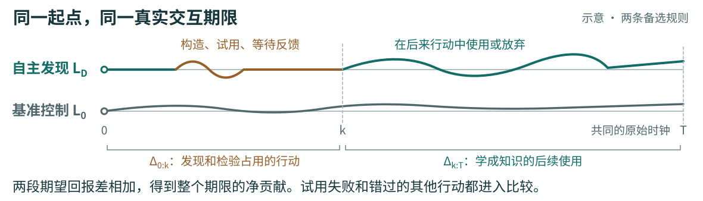
切点 只是记账方式。若发现贯穿整个 lifetime，两段都可能同时含练习和使用。搜索、练习、等待与恢复造成的机会损失已经体现在各自实际取得的奖励里。计算若在世界暂停时完成，按共同的计算预算计；若计算延迟使行动错过时机，其后果进入真实时钟上的回报。
难处有两点。第一，表里的改选概率和多得是在三站例中算好的，一般情形下练习以前不知道。第二，一次 lifetime 只走一支：练了就看不到暂缓那一支的回报，暂缓了也看不到练成以后的回报。本节后面几小节的做法是：在可比的机会上，以已知的非零概率分配练与暂缓。再用后来的主回报构造标签，学出从历史与候选到用途的映射，也就是学出这张表。
常见误解 其一，把模型更准了直接折算成奖励；规划没有因此改选时，这种改进对主回报没有贡献。其二，只累计首次改选以后的奖励；这会漏掉练习成本，也只保留了碰巧触发改选的那些调用。其三，以为单次 lifetime 能同时观测两条分支。
三种比较回答不同的问题 在同一实际反馈上检验两个已冻结的读出，判断的是局部预测是否改善。在同一决策历史上暂时遮去新增特征，判断的是这项区别是否改变当时的行动。只有在取得知识以前比较两项规则，才把为得到这种区别而花掉的机会算进去。只部署其中一个学习器时，另一条 lifetime 的回报无法同时观测；根据已辨识的环境模型可以给出条件估计，或按第 25.2 节的相容环境集求界。有三种情形：没有覆盖；时间可任意漂移；所有已生成的模型都漏掉了某种后果。这三种情形下，两项局部预测器再一致，也给不出可靠的全程收益界。
不同意见 有人认为，给每次练习单独算余期回报差，代价太高。有的系统用学习进度作内在奖励来分配练习，不必等主回报到期；学习进度指预测误差下降的速度。本章的回应是：学习进度快的候选，以后不一定有用，用途要用主回报来定。学习进度可以作为用途读出的一项输入特征，下面的用途表示会检验它有没有预测力。
用途表示课件
先把要估计的量写清楚。提议以前的信息 包括已经到达的经验、已有的记忆、候选库和可读预算；生成候选 以后，分配规则可用的信息是 。令 表示按约定练习 ， 表示按约定暂缓。两种选择的具体内容都要事先给定，包括是否写入知识库、练习持续到何时、暂缓后何时还可再选。此后两支采用同一条可执行的后续规则，从同一起点计满剩余的 个原始步。后续规则可以根据各分支经历的后果作出不同的决定；练得久的一支，留下的后续工作时间少。
用途 记 、 分别为 、 以后这段期限内的主奖励之和，，。候选在本次机会中的用途定义为 即 在该机会上的期望。
它也是第 23 章发现元策略中 的一般形式。两项期望都包括练习代价和以后知识被使用时带来的回报；它们可以分别定义，一次真实机会却只实现其中一个。改变主奖励、练习预算或后续规则， 也随之改变。在三站例里， 是到 A 为止的历史，含来站； 是候选甲或乙； 就是上一小节表中的 。
若每个 都能多次出现，按格求均值即可。实际上，完整的历史和候选程序几乎不会原样重现。过去机会上的回报只能经共享的事前特征传给新机会，所以需要一个学出来的表示。决策前的历史和候选程序提供两类不同的信息。历史编码器 读先前的观测、原始动作、奖励、已有知识和学习记录，得到向量 ；候选编码器 读候选程序的描述，得到等维向量 。候选描述可以按产生式树的先序读入带参数的操作符；预测问题给出累积信号、目标策略与延续规则，技能给出启动条件、内部策略和终止规则；引用已有技能时同时读入它当时的版本。设 ，一种固定宽度的读出是
是逐项乘积，它让同一候选在不同历史中可以有不同的用途。参数 从同一用途目标学习；只有决策前已有、下一次机会也能取得的信息才可作为输入。第 25.6 节的写入选择沿用同一个编码器 。Shalit 等研究过为异质效应学习表示及其在观测数据中的泛化界（Shalit、Johansson 与 Sontag，2017）；这里采用已知概率随机分配练习，训练依据由下一小节的恒等式给出。
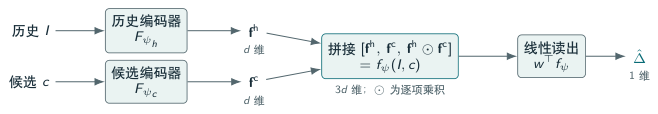
表格读出给出一个可以手算的特例，说明表示要保留什么。固定机会分布和表示 ，最优平方损失预报是条件均值 。若在一格 中加入一项事前二元区别 ，组一的比例为 ，两组的平均用途为 ，该格的最小平方风险下降
例如 、、 时，下降 ；而且两组用途异号，细分还会改变练习决定。对总体风险的贡献还要乘该格的机会权重。两组用途同号时，分裂可能改善预报而不改变练习决定。非线性编码器更新时可能舍弃原有区别，所以新旧预测要在后来的机会上检验。按可解释的分组估计异质效应，可参看 Athey 与 Imbens，2016；这里以同一资源期限内的主回报差定义学习机会的用途。
常见误解 把行为记录中的练习频率当作用途。频率回答过去习惯怎样分配，用途回答分配以后多得多少。一个算法可以在两类机会中都以一半概率练习，使两类的频率完全相同，同时让一类练习有益、另一类无益。
随机分配得到的标签课件
一次机会只能走一支，用途 却是两支之差。办法是随机分配：按记下的概率随机练或不练。到期后，把实际得到的回报除以该概率，作为这次机会的延迟标签。
设 已经通过筛选，两种选择都可执行。学习器看到 以后，用独立于未来环境扰动的随机数抽取练习指示 。抽取以前，记下真实概率 。下标“练”表示它是分配练习的概率，以免与第 25.4 节旧读出的预报 混淆。概率限制在 内，保证两支都有机会得到反馈，同时控制标签的大小。按规定接着执行到共同期限，得到所选分支的主回报 。
逆概率加权标签
后一式的推导只用分配概率已知这一点。给定 ，第一项只在 时出现，其条件期望为 ；第二项只在 时出现，条件期望为 ；相减即 。总回报有界且概率有上述下限时， 的二阶矩有限。对任意事前预报 ，把平方展开，交叉项在给定 后期望为零，于是在固定的机会分布和收集规则下
最后一项与预测无关。用 训练表示，目标就是两种选择的回报差；在同一参考分布上比较两个读出时这项噪声相抵，所以看不到单次的反事实回报，也能检验表示。
手算一例 。若练习得 ，标签 ；若暂缓得 ，标签 。、 时，。这几个数是本课构造的。
若已有两个分支的预报 、，并在这次选择与结算以前固定它们，还可以用回归校正标签
对随机选择取期望，残差项补回两项预报各自的偏差。所以分配率已知时它仍无偏，不要求回报预测本身正确；方差是否下降，取决于预报的质量。这是把两个行动的增广逆概率估计相减。Dudík 等的原分析针对上下文赌博机（Dudík、Langford 与 Li，§2–3）；这里把一次分配的结果定为：分配以后按规定接着执行到共同期限的整段主回报。这依赖明确、实际执行的后续规则。
这个校正只对已经进入本次比较的候选成立。缺口有几类：某类起点从未到达；候选从未被提出，或被筛选器全部删除；进入以后从不暂缓。这些情形的用途仍缺少反馈，最后一次选择的 无法补偿。若目标改为评价另一种生成、筛选或访问规则，还要说明该规则的起点分布、各层的支持以及相应的校正或新采样。部署中强制执行某一支而使 或 时，保留其实际结果用于该分支的预测，屏蔽这次机会的双分支标签。即便 ，有限的 lifetime 中也可能只观察到一边，结论仍要按实际精度陈述。
常见误解 其一，以为一次很高的 说明候选好；单个标签可能来自偶然的奖励。其二，以为 能补偿一切缺口；上一段列出的几种缺口它都补不了。其三，把 和 当作可微量；它们是记录中的固定观测，训练时不经它们反向传播。改变采集方式会改变机会分布，除非另行校正。
不同意见 有人认为，为了无偏标签而随机练或不练，等于在看起来较好的选择上故意付代价。 接近 时，标签的方差也大。他们主张改用模型预测的反事实回报。另一方认为，模型在从未尝试的分支上无从检验，只有随机分配给出不依赖模型的标签。回归校正标签介于两者之间：用预报减小方差，用随机分配保住无偏（本课的整理）。
为什么除以概率课件
单个标签噪声大；除以被选中的概率以后，标签的平均等于练与不练的回报差。下面用三站例里能手算的数说明这一点。
三站例：候选甲的标签 候选甲是第 25.2 节的新路线，以后还要在 A 处选十次。暂缓时照常去 B，十次各得 ，。练习时先付 ，新路线好坏各半：好就以后十次都去 C，各得 ，共 ，减去 得 ；差就仍去 B，。练习的期望是 ，用途 ，与本节首页表中 一格相同。设练习概率 。
| 情形 | 标签 | |
|---|---|---|
| ① | 抽到练（概率 ） | 或 ，平均 |
| ② | 抽到暂缓（概率 ） | |
| ③ | 按概率平均 | |
| ④ | 不除以概率 | |
| ⑤ | 改用 | 标签 、、，平均 |
这些数是本课构造的，与本节首页同一组。
单个标签都离 很远，按概率平均却等于 。不除以概率，第 ④ 行的符号反了。暂缓更常被抽中，平均就偏向暂缓一边，值得练的候选会被判成该暂缓。除以概率以后，少被抽中的一边每次的分量加大，两边按应有的比重相抵。这样答案不再依赖事先定的分配比例：第 ⑤ 行把概率换成二分之一，平均仍是 。这与第 6 章第 6.7 节的重要性采样是同一个恒等式：按行为分布采样，再乘以目标分布与行为分布之比。这里的目标分布分别是一定练和一定暂缓。
一个标签说明不了这次练习好不好，它只在许多机会的平均里有意义。概率越靠近零或一，少见一边的标签越大，噪声也越大，所以下面的算法要求概率留在 与 之间。
不同意见 有人主张先拟合一个回报模型，再只对模型的残差除以概率，这样方差更小。这就是双重稳健估计，即上一小节的回归校正标签。代价是要多学一个模型；模型错了，靠的仍是除以概率那一项。本课先讲只除以概率的标签，因为它不依赖任何回报模型。
已解决的部分与条件 分配概率 事先保存、且在 内时，标签 的期望等于 ，与 无关。方差可以写出来：记 ，，则 。对 求最小，得 ，形式与抽样调查里按标准差分配样本的 Neyman 分配相近。候选甲：，； 时方差约 ， 时约 ，，方差与 几乎相同。两支恒得 时， 的方差是 ， 的方差约 。
已有做法与假设 算法 25.6 用下界 截住概率，以有界方差换取一部分本可用于更好候选的练习。概率随已收数据自适应调整时，按概率倒数加权仍不偏，但方差随概率变小而增大，常规的正态近似不再成立；Hadad 等（2021）用自适应权重修正这一点，在自适应实验里给出渐近有效的置信区间。
未解决的部分 难点来自一个冲突。为了主回报，练习应集中到看起来最好的候选上；为了估计精度，每支都要保留不太小的概率。、 本身未知，要边做边估；候选随时加入、退出，持续学习里没有固定的实验期。在一条 lifetime 内，怎样在多得主回报与标签方差有界之间定下 的取值或下降速度，并同时保证区间覆盖。这个问题没有一般结论。
怎样检验 用候选甲的设定，三组分配规则：固定 、固定 、自适应分配并设下界 （取几个值）。测量 估计的偏差、方差、名义 区间的实际覆盖率，以及期间累计的主回报。重复单位是独立运行，每次运行有自己的候选序列。
用途表示的在线更新课件
上两小节给出了标签；这一小节把它变成可运行的学习规则，并规定怎样检验学到的东西。设 ，每次只保留一项待结算的比较，训练期限按原始步计；事先约定可保存的历史长度、候选程序规模和学习率 。
算法 25.6 从延迟主回报学习历史和候选的用途表示
- 在机会开始时保存事前的原始历史片段、候选程序及其版本，记录 、后续规则和截止时刻。先算 ，再按 抽取 。
- 执行选中的分支，按约定接着执行，每个原始步累计主奖励。到期且完整回报到齐以后，按原来的 计算标签 。
- 从保存的输入重算 ，同时更新两个编码器及读出：。
- 冻结新旧预测器，在以后的机会上先各自预测，再以同一到期标签比较平方损失。没有支持的机会保留未定。
算法为本课构造。
逐行读。第 1 行在抽签以前保存一切事前输入，包括原始历史后缀和候选引用的版本，因为以后要从这些输入重算梯度；先算预报再抽 ，保证预报不偷看结果。第 2 行等回报到齐，其间这套用途预测器暂停写入，世界和基础学习器照常推进。第 3 行是普通的平方损失回归，标签用 stopgrad 固定。在给定机会分布下，若微分可以移进期望，目标 的期望梯度就等于用途平方风险的梯度。这由上文随机分配一小节的平方分解直接得到。一次更新用 调整读出，用 调整两个编码器。第 4 行把训练和检验分开。新旧两套预测都在分支和回报揭晓以前登记，再在同样的机会权重下比较配对损失差。
需要重放原始后缀的原因在第 3 行：只缓存旧特征向量 并当作常量，只能更新读出，编码器得不到梯度。有限记忆下，可以约定从固定初态重放长度不超过上限的原始后缀，把事前预算与记忆快照当作额外输入；训练和使用的就是这个有限编码器。验证阶段不再根据本批结果挑选编码器；若据此再次选模，还需要后续机会作独立于这次筛选的评价。
原始截止时间确定收益的范围。技能提前交回以后，继续计入约定规则实际所得的奖励，直到原定期限。迟到的结果只能在实际到达以后用于更新；因记录中断而无法判定结果的机会标为缺测，不能填零，也不能只挑迅速结束的机会拟合。可以用已知的逐步奖励界约束缺失时段所占的回报。若共享主干在等待回报时仍须更新，结算时就用当前主干重算旧输入，对已取得的固定标签做一次回归。这是在旧采样分布上训练当前读出。若新主干已改变接下来执行的技能或规划器，这些标签描述的仍是原后续规则下的用途。共享更新的两条作用路径，见第 20 章第 20.4 节的共享状态。自适应分配下的推断条件，可参看 Hadad 等，2021。
常见误解 其一，把固定 步窗口上学到的用途当作整个 lifetime 的用途；若期限是整个 lifetime，相邻机会共用的奖励不能当作独立的 lifetime 重复计算精度。其二，以为第 4 行的检验说明了改变分配以后的全程收益；它只针对记录所对应的机会分布，全程收益要让两套学习器各自行动来比较。
用途更新的外溢课件
本小节说明在机会 上学到的东西怎样传到从未见过的机会 。第 23 章练习分配的线性 softmax 使用固定特征；算法 25.6 把历史和候选的编码也交给经验来学。于是一次用途更新也会改变另一个发现机会的预报，改多少要看两者梯度的内积。以 表示事前历史和候选， 为用途预报。对一个完整到达的延迟标签 做一次平方误差的小步更新，
对另一个机会 的预报作一阶泰勒展开，把上式代进去，
这里假定两个预报在当前参数处可微，同一份事前输入可以按约定重算。左因子是本次发现的信号。有覆盖且按规定随机分配时，它的条件均值是练习减暂缓的回报差；单个标签噪声大。右因子是共享参数的后果：两机会若用互不相干的查表项，梯度内积为零，旧反馈传不过去；固定特征的线性读出给出固定特征的内积；训练编码器以后，两处梯度对哪些历史和程序片段敏感，也会随过去的更新而改变。内积可以拆成读出、历史编码器、候选编码器三块的贡献之和。
数例 ，在机会 上的用途误差 。若 与 的梯度内积为 ， 的预报约上调 ；若 的内积为 ，预报下调 ；若 的内积为 ，预报不变。
内积只说明参数改动能传多远，传过去的方向对不对，要在后来的机会中用真实的分配和回报检验。正内积表示同方向传播；若 处的真实用途误差方向相反，就是负迁移。网络结构、输入通道、存储容量以及能否引用旧程序，也限定了可以形成的区别。若只保存了两类历史已经相同的旧编码，又没有更早的信息可用，后来的奖励再多也无法复原丢失的区别。检查的办法是冻结读出版本，在新机会中同时取得新旧两份预报，再用事后的标签评分。迁移正确与否的精确条件在下一小节给出。
新程序的练习价值课件
最后把用途表示接回控制：什么时候旧规律能用于新程序，怎样检验，用途估计又怎样变成回报。从旧程序预测新程序的练习价值，前提是练与不练的回报差在新程序上仍然适用。检验泛化时，把一整类程序留作测试。
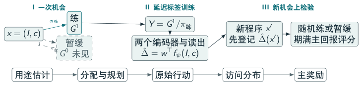
复用条件。新程序可以共享旧读出，条件是在该表示内，练与暂缓的期望主回报差仍然适用。设新旧程序只改了一个局部变量名，而原始行动、交回时间、资源消耗、知识写入和下游读取都相同。这时可以复用同一收益机制。动作、交回、期限、奖励或后续用法变了，这个差都可能变。例如期限缩短到来不及再调用练成的技能时，技能命中事件的概率不变，它对主任务的用途也会变。在三站例里，候选乙，即按来站细分，已经练成。这时来了一个新候选按上一步的奖励细分。它能否沿用乙的用途，要看在新候选上，练与暂缓的回报差是否仍由同样的特征决定。
一般情形下迁移成立的精确条件可以这样写。在旧、新两种机会分布下冻结同一编码 ，写 ， 同理。有限方差下，在新机会分布中用理想旧读出代替理想新读出所多付的平方风险恰为
推导是条件均值的正交分解：把 写成 后展开平方，交叉项在给定 后期望为零。它要求旧读出在新机会所取的 上有定义。所以迁移成立当且仅当两个条件均值在新机会分布下几乎处处相等；某个具体编码是否满足它，要在有覆盖的新机会上检验。即便完整历史上的规律 不变，旧读出也可能失准：旧策略若偏爱容易练成的候选，会改变同一 内不同历史的比例。反过来，新接口可能使某个技能多占一倍时间，新的规划器也可能不再使用某项 GVF。这时连完整历史上的用途都会改变，只按访问频率重加权修复不了。
新分支的检验。设新程序是先做 、见 后改做 （无衬线字母表示可检测的观测符号，与操作 区分），而旧策略在此处从未选过 。旧记录缺这一分支，概率为零，单凭旧行为的频率无法作离策略估计（支持与条件机制假设的讨论见 Uehara 等，2020）。做法是先用相似程序外推、登记一个可被否定的预报，例如在余期相同的这类起点，练习比暂缓多得主奖励；再在可比的机会中以已知的正概率分配练与暂缓，按期满主回报核验并报告不确定性。若得到精度足够的相反符号，就放弃这项迁移。给新起点两支的估值分别取误差界 ；误差界同时计入旧样本的估计误差，和由旧机会迁移到新机会的偏差。两界同时成立时，真实分差与估计分差至多相差 。所以估计差的绝对值要超过 ，才能保留排序。若仅剩当前一步，迟到的核验在这段期限内就没有后续决策价值。有限期的知识操作价值见第 24 章第 24.2 节的逐步分解。
概率与收益。给定一项机会和候选，两条规则只把本次练习概率分别设为 与 ，其余后续控制与学习规则相同。两者的期望回报分别为 与 ，相减得
例如 、、 时，这次机会多得 ；若 ，同样的改动少得 。所以把旧策略的选择分布拟合得再准，只要 ，这一项增益就是零。两种行动都可行、评价又不要求最低探索概率时，知道 的最优单次选择是 就练。令估计策略按 的符号选择，错选的机会损失是 ，而符号错时必有 ；这给出用途误差对这一次分配的损失界，也说明平方误差下降以后，控制可能暂时没有任何改进。
筛选器可以把估计用途作为练习分配的输入，同时为仍待检验的分支保留合规的抽样概率。生成器处理的是更早的决定。为找到一个候选而花费的时间、未入选的其他选项、将来能得到它的机会，都会改变生成的价值。更新生成概率时，仍按算法 23.7 从生成以前计分，把其后全部实际选择与主奖励纳入估计；只用被选中候选的 给生成器计奖，会系统地漏掉生成和筛选的后果。
常见误解 把 沿旧轨迹逐项相加当作全程收益。持续换规则会改变以后遇到的机会。它也可能通过共享编码，改变基础控制策略、技能的终止和规划所用的后果模型。全程收益要从相同的初始条件与预算出发，让两套学习器各自行动来比较（第 24 章第 24.2 节；访问分布变化下的策略改进见 Kakade 与 Langford，2002，引理 6.1）。
用途 里以后知识被使用时带来的回报还没有说清，它取决于练成以后一笔新知识会被哪些部件读取。同一个历史区别可以只供一个预测使用，也可以改变规划和练习所依据的状态，所以 本身取决于写入的范围。这是第 25.6 节的问题；本节的随机分配标签与有限期比较可以原样用于那里的选择。
25.6 一笔误差写到哪里课件
第 25.5 节决定了把练习时间分给哪个候选。练习产生的一笔预测误差到达后，还要决定这笔误差写进哪些部件。可以只改一个读出；也可以改共享编码，让技能终止、规划所读的模型和练习分配一起变。写进的部件越多，受影响的后续选择越多。后几种写法会改变以后的行动和由此取得的经验，所以写法本身是一项控制选择。它要按全程主回报评价，只看预测损失不够。第 14 章第 14.8 节用夹具偏移的算例，比较过同一选择的粗粒度版本。在那里，一笔误差写进记忆还是写进权重，取决于它还会重现多少次（系统 3）。本节处理单笔写入的四选一。
放回章首的判据，写入处在第三栏。本例约定写入不占原始步，，判据里没有步数代价。共享写入会改变其他读出，这份代价要等以后用到那些读出才看得见。所以在章首推导里，写入不满足第一条假设。计算若推迟了发令，按实际截止时刻计分。按章首判据写，就是比较 在不同写法 上的差， 固定为写入前的学习器状态。
四种写法
关于 的反馈到达后，更新规则 决定把来路区别 写进哪些部件。下表按列读，圆点表示该部件可以直接读到新特征。
| 部件 | 暂缓 | 私有 | 共享 | 分组 （示意） |
|---|---|---|---|---|
| GVF 读出 | – | • | • | • |
| 技能执行与终止 | – | – | • | – |
| 技能模型与规划 | – | – | • | • |
| 练习分配 | – | – | • | – |
暂缓沿用本笔写入以前的编码和读出，其他约定更新照常执行。私有只给这个预测器更新它自己的递推记忆和读出，共享编码保持原值。若规划原已使用它的输出，预测的改变仍可经已有接口间接影响行动。共享在共同的递推编码上学习这项区别，所有原本读这个编码的部件都跟着变。分组 让指定的几个部件共用一条单独递推的支路，这里是 GVF 读出与技能模型。其余部件保留原支路，例如执行中的技能保留原有的终止表示。共享写入记作 ，以免与第 25.4 节的组间差 混淆。
这四列可以对到第 24 章的记忆分层。私有 只改 层的一项读出。共享 改决策状态 的递推，所有读 的读出都跟着变。分组 在 旁另开一条支路，只给指定的读出用。每种写法的槽位、初始化和后续更新权限须事先确定。比较各写法时，固定总容量、后续规则 与剩余期限。容量已满时，被挤出的旧记忆也是代价。若各方案总容量不同，测到的是写法与容量的共同作用。
私有写入也有可行条件。若 只是把最后一层线性权重训练得更好，输入已经合并的两段历史仍产生同一个输出。只有两种情形下私有写入才写得进 ：新旧输入足以区分这两段历史；或私有部件自身能够保存和递推这项区别。分组同样要有明确的资源来源：从预留容量中分出一个槽，或按预先规定的规则替换旧槽。分组要指定与哪些读出同组。读出多于两个时，同组方式有多种；这个选择反复出现，就成为第 25.7 节选读的读出分区问题。
三站例 是机器人进 A 之前的来站（第 25.4 节）。私有 只改去 C 得分这一项读出，把合并的 按 分成 、。规划要用它，只能经过这项读出间接用上。共享 把 写进共同编码，规划、技能终止与练习分配都能直接读到 。例如规划可以直接按来站，在去 B 与去 C 之间选。
把这一机会记为 。 包含收到该笔反馈时可用的历史、完整学习器快照、剩余交互时间和资源。 是本次拟保留的历史区别及其计算说明，可以由前几节的候选生成方法取得。作为未来行动的输入，这项区别只能读取届时已送达的信息。刚到的反馈可以训练怎样编码以前的历史，但不能充当以前行动时已经知道的特征。由同一快照执行写法 ，此后按同一套后续规则 运行，对共同的剩余原始期限 定义
是采用写法 后的期望主回报，后文的区间和学习都以它为对象。 可以读取不同写法产生的知识，所以各分支的下一次决定可以不同。设分组后当下的各项输出不变。新结构仍可能让以后的预测与控制梯度不再改写同一组参数，从而改变 。反过来，若新支路在剩余期限内始终不能改变实际行动或其成本，它在这段期限内就没有控制增益。
用刚收到的奖励评价写法是错的：这笔奖励早于选择，不能估计选择的收益。在共同输入上复算读数，也不能算出收益。复算只说明读数怎样变；收益要靠有覆盖的试用或可信模型。固定这笔经验与更新的随机数，可以重算各写法给出的规划得分和练习概率。实际的后续主奖励只来自采用的那一种写法。
不同意见 有人主张写法用固定规则即可。例如按互补学习系统的做法，一律先写私有，再在离线回放中逐步写进共享（见下文快写与慢写）。本课把写法当作控制选择，要看它在 lifetime 回报上是否更好。固定规则的好处是简单、可预测；代价是共享写入有利和有害的场合不作区分。
四种写法的读数课件
同一笔修正写到不同地方，预测误差可以降得一样多，规划却可能一个不改选、一个改选。用三站例算一遍。机器人已经从 B 来了一批（），到 A 后去 C 平均只得 。读出原来是两类来路合并的 。步长取 ，一步更新到
离真值 只差 ，平方误差由 降到 。下表在同一快照上重算四列，它们是四个假想分支的读数，不是四条实际轨迹。
| 处 | 暂缓 | 私有 | 共享 | 分组 |
|---|---|---|---|---|
| 去 C 读出 | ||||
| 平方误差 | ||||
| 去 B 读出 | ||||
| 规划分差 CB |
私有、共享、分组三列的预测修正相同，差别在规划读到什么。私有写入只改 GVF 这一项读出。规划所读的技能模型仍是合并的 ，比去 B 的 高 ，不改选。共享写入把来路写进共同编码，规划读到 ，低于去 B，改选去 B。共同编码一动，去 B 的读出也被带偏到 ，分差为 。分组写入让 GVF 与技能模型共用一条单独的支路。规划读到 ，去 B 不受影响，分差为 。
改选的真实收益要看动作后果。从 B 来时去 B 得 ，去 C 得 ，改选多得 。两类来路各占一半，每次到 A 平均多得 。这就是第 25.4 节历史细分的局部控制价值算出的 。这张表说明两件事。第一，误差降得一样多，不说明写法一样好。第二，共享写入有副作用；这次副作用没有翻转排序，若带偏得更多，就可能让 一侧的选择出错。
共享写入还动了只读共享坐标的读数。设被改动的共享坐标由 增加 。技能终止概率为 ，到 ；练习概率为 ，到 。这两项只读共享坐标，所以私有列保持原值。终止概率上升不表示已经观察到终止，本身也没有固有的好坏。练习概率变化也不等于本次真的去练。
一阶分析 设共享参数为 ，GVF 损失的梯度为 。一步更新 使另一项固定标签损失 一阶变化 。这是第 20 章第 20.4 节共享梯度的局部展开。同样的展开用于一个终止概率或一个规划分数 ，一阶变化为 。前者是损失的增减，后者只是读数移动的方向。对贪心规划，设原领先动作 与竞争动作 的规划分差为 。把更新后的两项分数相减即知：若 ，两者不交换次序。表中共享列的两项变化为 与 ，绝对值之和 超过分差 ，充分条件不成立。实际次序也交换了，分差变为 。
在固定历史、模型与检验输入上重算，只能重现这个模型的判断。若模型已经学错了另一动作的后果，重算也跟着错。终止、规划与练习都是内部决定，它们只通过最后执行的原始动作及其耗时影响环境。把同一笔未来奖励分别归功于这三项改变再相加，会重复计算相互依赖的作用。要单独估计某条路径，须规定可执行的干预。例如让规划读新表示、终止仍读旧表示，并说明两者在技能交回和后续更新时的接口。
不同意见 有人认为，这种同一快照上重算读数的分析意义有限。真实系统里共享参数一动，许多读数一起变；单看一笔更新的一阶效应，会低估连锁影响。也有人认为一阶分析已经够用：规划分差远大于估计的变化量时，次序不会变，只需在分差小的地方细查。
写入的控制收益课件
上一小节在固定快照上重算读数，只说明各部件会怎样移动。本小节计算真的采用某种写法以后，期望主回报变多少。答案仍是第 24 章第 24.2 节的性能差分恒等式，这里写成单笔写入的形式。它沿新写法的来路，累加改选动作的价值差。
比较什么。 在同一份学习器快照上，一笔 GVF 反馈已经到达。参照分支 暂缓本次写入，比较分支 取 、 或 之一。比较时固定三样东西：写入前的可见历史 、这笔反馈和完整学习器快照。快照包括参数、在用技能、未结算的预测、迹及优化器状态。从这个共同外部时刻开始计时。两分支随后采用同一套后续规则 ，依据各自实际收到的反馈继续更新。令 、 为两分支在接下来 个原始步取得的期望主奖励和。它是第 15 章第 15.1 节 把起点换成这份快照的形式；取 便有 。已经到达的反馈不再计入未来回报。
在哪个历史上比较。 历史 从 起延伸，只增添此后的观测、原始动作与奖励。把完整学习器写成历史上的行动规则。 是分支 在第 步、历史 上选原始动作 的概率。它已包含技能内部选择、规划、探索与后续更新的影响。给定可见历史，学习器的私有记忆和随机状态按该分支在这段历史上的条件分布积分。有些历史，参照分支不会到达，新写法却可能到达。在这些历史上，须预先规定参照规则怎样接着执行，例如程序收到强制执行的动作与反馈后如何更新。两分支共用第 15 章的一步反馈核 与同一组可行动作；环境可以部分可观测。
参照价值。 到期限后不再计分，置 ，从 向前递推：
是在来路 先采取 、再由参照规则接着执行的期望主回报。它是第 17 章第 17.1 节动作价值的特例：有限期、不折扣、以可见历史为条件。 是从 起完全按参照分支行动的期望主回报。优势 量度这个动作比参照分支此处通常的选择多值多少。
恒等式 记 为新写法分支在第 步的历史分布， 为沿该分支整条轨迹的期望。则
推导是望远镜求和。在新分支上，对已选动作取条件期望， 的条件均值等于 的条件均值。对 求和，每个中间历史上的两个 一正一负抵消，留下 。第二行先对新分支在该历史上的动作取平均，再减去参照的加权平均。这是经典性能差分恒等式在有限期可见历史上的形式。折扣情形见 Schulman 等（2015）的式（1）及附录 A（TRPO）。
两层期望各有分工。外层在新写法自己走出的历史 上取，在哪里比较由新写法决定。方括号内用参照分支的 计算差值，比多少由参照决定。只有两个动作 时，来路 上的贡献化简为
硬排序越过阈值、骤然改选时，这个有限差照样成立，不需要可导。价值差为零或概率不变，该处都没有贡献。
三站例 共享或分组写入让 处的规划从去 C 改选去 B，选去 B 的概率由 变为 。参照价值差为 ，这类来路的权重为 ，贡献 。 处仍选去 C，概率不变，贡献为零。合计
这就是第 25.4 节的 。两处算的是同一次改选：第 25.4 节问记住来站值多少，这里问把来站写到规划读得到的地方值多少。私有写入下规划不改选，贡献为零。一般情形的手算：某历史上，新写法把选 的概率从 提到 。参照价值差为 ，该处贡献 。
用什么样本估计。 外层期望只需新写法分支自己走出的历史。方括号里的 却是参照分支的动作价值，须在这些历史上另行取得。若能从同一快照重复运行两分支，可用共同随机数做配对估计；也可独立重复，直接估计两个 再相减。若旧行为从未在相关来路执行备选动作，旧记录给不出该动作的 。这时还需要分支试验、有覆盖的记录或可信的环境模型。
成立条件。 等式的成立条件有四项：期限有限；回报可积；两分支共用同一反馈核与可行动作；在参照分支不会到达的历史上，预先规定了接着执行的规则。硬选择、不可微的参数替换都不需要线性近似。若两种写法的执行耗时不同，就从共同外部时刻计时。写入或等待占去的时间，以及该时段实际取得的奖励，都计入同一 。
零步长处的导数 第 20 章第 20.4 节把 写成访问概率与行动规则两条路径之和。只把这笔共享更新的步长从零连续调到 ，记该步长下的行动规则与期望回报为 、。 即参照分支。若期限有限、各动作概率在零附近可微、可交换微分与期望，上面的恒等式两边对 求导后在零点给出
零步长处两分支行为相同，访问分布的一阶变化乘在零行为差上，所以只剩行动规则的导数。概率导数之和为零，所以可从每个动作价值减去同一个 。这一导数沿后续整套学习程序传播，包含终止、模型、规划和练习概率对最终行动的影响。预测损失的梯度内积只涉及当前目标和当前参数。两个损失的梯度相冲也可能有利于控制，梯度相容也可能损害控制。确定性规划在并列处分出胜负时，用上面的有限差形式。
有三种现象都不说明写法有益：GVF 在当前样本上更准；两个共享梯度同向；首次改选出现得更早。这些现象都没有同时给出到访概率和参照动作价值差。旧记录也不能直接给出 ，理由见上文“用什么样本估计”。
不同意见 一种看法认为这个恒等式用处有限： 要在参照分支上估计，单一经验流里拿不到。另一种看法认为，它至少规定了该收集什么证据：新写法的到访分布和参照动作价值差。这样就排除了只看预测误差或梯度方向这类代理指标。本课按后一种用法放在这里。在三站例上，它给出的单次选择收益与第 25.4 节的 相同（本课的整理）。
学习写入选择课件
恒等式说明了一种写法该怎样评价，样本却要在经验流里逐次取得。做法沿用第 25.5 节的随机分配标签：练习与暂缓是两选一，这里是在可行写法中多选一。给定写入前的 ，可行写法 取自暂缓 、私有 、共享 、分组 。沿用第 25.5 节学到的特征 ，每种写法另学一个回报读出 ，用来逼近 。
令 为当前规则选的常用写法，按
抽取实际执行的写法 ，它的取值仍写作 。到期且主回报 到齐后，对每个 的写法计算标签
标签无偏 分配随机数在给定 后独立于各分支的潜在结果时，。
只在实际选中 时非零，此时取值 ，而 的条件均值是 。给定 ，被选中的概率是 ，所以 。这与第 25.5 节为什么除以概率、第 6 章第 6.7 节重要性采样是同一个机制。部分动作反馈下的这种估计见 Dudík、Langford 与 Li（2011，ICML）。同一次机会可以计算多个 。未选写法的 只来自指示量，它们的实际回报仍然未知。
手算 四种写法、，常用写法的概率为 ，其余三种各 。若抽中一种其余写法并得 ，它的标签为 ，其他写法的标签为零。稀有选择的标签大，用来补偿它被选的次数少。
算法 25.7 用主回报分配写入机会
- 保存反馈、原布局、预算、候选与程序版本。令 为当前规则选的写法，记下 ，按它抽取写法 。
- 只执行 并按约定接着执行，计入占时与替换后果。到期且主回报 到齐，对 的写法计算 。
- 用 更新各写法的读出，固定 。在下次机会按新读出选常用写法 ；分组 的启停另查比较区间（见下文分组 D 的启用与回收）。
第 1 步在写入前保存一切会影响结算的信息，并记下实际概率。随机化须条件于分配时所知的全部信息。第 2 步只执行一种写法，累计到外部截止时刻。已经收到的辅助反馈早于选择，不再算作未来回报。进入吸收状态按任务约定计分，记录中断标为缺测。若结果是否缺失也取决于结果本身，直接剔除缺失机会会改变比较。第 3 步固定编码，只训练各写法的读出，再据此更新常用写法。 保证每种可行写法都留有反馈机会。线性读出只能利用 保留下来的区别。换用新编码、写入程序或后续规则后，要标明新版本，分别核验（用途表示的在线更新）。
把 读成观察到该写法得零是错的。用读出最大值直接决定启用分组 也不对：分组占用长期槽位，需要下文的同时区间判据。记号上，抽中的写法记作 ，不用 （第 24 章记忆的读出层），也不用 （本章的更新规则）。它与第 25.5 节的练习指示 也不同。
不同意见 有人认为写法的选择不必每次随机。若写法之间的差别稳定，可以先离线比较几种写法，再固定一种，省掉混合探索的损失。本节保留 ，因为环境和候选都在变。固定下来的写法可能逐渐变差，没有探索就看不到。也有人担心 的方差： 越小，稀有写法的标签越大，读出越抖。一种折中是截断权重或用双稳健估计，代价是引入偏差。
区别的写入价值课件
写入选择器自己要不要看某项历史区别，是另一个问题。判断依据是：这项区别会不会改变最优写法。它能否把收益预测得更准，与此无关。设 是选择写法前的已有状态， 是候选历史区别，取值记 。对同一组机会、可行写法与后续规则， 表示采用写法 后的期望主回报。它是上一小节的 按 写出参数的形式。只读 时整组只能选同一写法 ；另读 时可以按 选写法。两者最佳回报之差为
推导只有一步。先取最大再平均，不小于先平均再取最大。取第二项的一种最优写法 ，把两行逐个来路相减再平均，即得右式。括号里是因合并历史而失去的控制收益，处处非负。有限个可行写法下，这一收益为零当且仅当组内几乎所有来路有共同的最优写法，允许并列。这个式子与第 25.4 节的 形式相同。 问规划要不要看来站，被选的是去 B 或去 C；这里问写入选择器要不要看来站，被选的是四种写法。
手算 组内两类来路各占一半，共享写入的回报为 ，私有为 。只读 最多得 ，按 改选得 ，收益为 。若私有改为 ，共享在两类来路都不差（第二类并列），两项都为 ，收益为零。三站例中两类来路的最优写法都是共享 或分组 ，所以写入选择器不必再看来站。
常见误解是： 把每种写法的收益都预测得更准，就值得区分。只要排序不变，选择器就不需要它。另一项误解是把这个量当作让行动控制器读取 的价值。后者是共享与私有写入的回报差 ，是另一个问题，两者的答案可以不同。
在经验中可以分两步做。先用算法 25.7 的标签，在较早的机会上拟合两种读出：一种读 ，一种只读 。再在后来到达、可比且有覆盖的机会上，用已知分配概率评价两条已固定的选择规则 、。比较量 的条件期望，是两条规则选用的写法的回报差。直接在挑选特征的样本上取最大值，会偏爱碰巧偏高的区别；这是第 25.3 节讲过的挑选偏差。计算 若需额外行动、记忆或时间，也要计入。真正采用新规则后的全程收益，还取决于它将访问的历史和维持该区别的代价。
分组 D 的启用与回收课件
读出 偏高可能只来自同类历史上的外推。要把它用于占用长期槽位的决定，需要一个对所有写法同时成立的区间。分组 的下界高过所有替代的上界，才启用；规律变了，再回收。
区间。 事前固定一个可比的机会组，组内候选版本、原布局、可行写法、预算和计分期限都相同。保留用算法 25.7 随机分配得到的新反馈。把回报按共同已知的上下界缩放到 ，每个可试写法满足 。于是 ，条件均值为 。窗口互不重叠，每次随机分配并取得完整回报后再开启下一次。记 ， 为该组已依次完成的机会数。以均值 为中心取半宽
再与 相交，记为 。
为什么同时成立 对每个固定的 和写法 ，条件 Hoeffding 不等式给出覆盖 的区间，错误概率取 。对 求和得 ，再对 求和，，总错误概率至多 。所以以至少 的概率，所有区间对所有 和 同时成立，可以随时查看、随时停。随时有效的置信序列见 Howard 等（2021），自适应分配下的推断见 Hadad 等（2021）。
手算 、、、 时，，对数项约 ，半宽约 。在 的回报尺度上，四百次机会后区间仍宽过一半。所以 小时，需要的机会数多。
两条规则。 尚未分组时， 就启用； 就放弃。比较包括同一槽用于其他目的或保留待用的回报。已经分组后，是另一个起点上的决定。分别规定“保留独立递推”和“合并并回收槽位”两项操作，从当前布局起估计各自的回报。 时停止维护。已付的初始化代价不再扣，迁移成本和释放槽位的用途仍计入。区间相交时保持原布局，标明未定，或动用事先留出的试写预算。
课件这一页的示意图不是模拟结果。图中区间随机会数收窄， 与替代的区间分开即启用；规律漂移后两者再次分开，则回收。
过去的组均值要用于当前机会，还需组内条件均值稳定，或给出漂移界并按它扩宽区间。编码相同本身不给出这个保证。同时使用多个组，要另分错误概率。
以为旧记录总能判断要不要分组是错的。旧记录若只执行过共享与私有写入，两个世界可以给出相同的记录，分组后的回报却不同。只有真实试写或可信模型能区分它们；这与第 25.2 节序贯探测面对的可辨识问题相同。
本节的写入比较与第 25.5 节的练习标签用同一个设计。在可比起点上按事先保存的概率随机选择，到期后用实收的主回报构造无偏标签。写入的控制收益只看它改变了哪些动作选择，以及这些动作的参照价值差；GVF 误差下降多少不进入这项收益。这些主回报属于第 25.3 节的外部核验一层，所以写入的区间也只建在它上面。
已解决的部分与条件 记忆槽数固定、以后要调用的读出与调用概率已知时，留哪些区别可以穷举比较。例：、 是两个独立的公平比特，只能存一个比特，以后各以 的概率被问 或 。存 时，问 全对，问 只能猜，平均正确率 ；存 时只有 ；存两个比特时为 。写法 与本节的区间规则，在可比起点上比较的就是这类选择。
已有做法与假设 理性疏忽（Sims 2003）把注意力建模为信息容量上限，在容量约束下选择保留哪些关于状态的信息。它假定目标函数与容量都已知。互补学习系统把快写与慢写分在两个部件里（上文快写与慢写），没有给出槽位的分配规则。
未解决的部分 持续学习器不知道以后会调用哪些读出、各多少次；读出之间的相关也在变。区别的价值要按以后的改选计算，而以后的改选又取决于现在留下了哪些区别。容量、调用分布与相关都在变化时，怎样在线决定保留与回收，没有一般的规则。
怎样检验 在小的有限情形里穷举所有一比特划分：操控调用概率（问 的概率从 到 ）、 与 的相关系数、可用比特数。比较穷举最优、本节的区间规则、按预测误差下降选择三种做法。测量平均调用正确率与主回报。重复单位是独立抽取的调用序列。
快写与慢写课件
写到哪里这一问题在认知科学里有一个已有的回答。互补学习系统理论由 McClelland、McNaughton 与 O’Reilly 在 1995 年提出，2016 年 Kumaran、Hassabis 与 McClelland 作了更新。它的出发点是灾难性干扰。用分布式表示的网络若把一段新经历快速写进去，会冲掉以前学会的东西；McCloskey 与 Cohen 在 1989 年报告过这个现象。理论的回答是两套系统分工。海马快速存新经历，每段分开存。新皮层慢慢学，把许多经历交错学进去，提取共同结构。两者之间靠休息和睡眠时的回放。DQN 的经验回放也借用了回放这一思路。
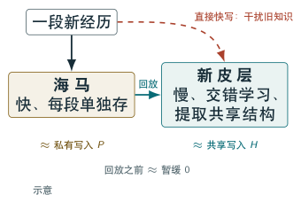
| 互补学习系统 | 本章 25.6 节 | |
|---|---|---|
| 写到哪里 | 先进海马，经回放进新皮层 | 暂缓、私有、共享、分组四选一 |
| 谁来决定 | 结构固定；合图式的新信息可较快进新皮层 | 按记下的概率试写，由延迟主回报学出（算法 25.7） |
| 防的是什么 | 灾难性干扰：快写冲掉旧知识 | 共享写入带偏别的读出与规划 |
| 怎样检验 | 行为实验、神经记录、网络模拟 | 有覆盖的随机试写与区间 |
两边问同一件事：一笔新误差，现在就改共享编码 ，还是先单独存进 。差别最大的是第二行。互补学习系统里，写到哪里主要由结构给定。Tse 等人在 2007 年的实验说明，新信息若与已有的图式相符，也可以较快地写进新皮层；这是结构内的调节。本节把写法当作要学的控制选择，从延迟到达的主回报学出在哪类起点上采用哪种写法。这一对应只是类比，本节的写入选择没有神经证据。
不同意见 互补学习系统内部也有争论。多重痕迹理论认为，细节丰富的情景记忆始终需要海马，不会整体转移到新皮层；巩固只适用于概括出来的知识。另一种意见针对本节的类比：大脑里写到哪里，可能由进化形成的结构决定，不需要逐次学习。本节让写法从主回报学出，代价是每次试写都要随机化、要等回报到期，样本成本高。还有人认为，把私有、共享对应到海马、新皮层过于整齐。真实的脑区之间有双向连接，这里的对应只能当作帮助记忆的类比。
本章小结课件
维护操作的价值来自以后的改选；改选多得的期望要超过占用的步数。全章比较一个量 ，两边算到同一期限；在固定机会的假设下，它化为 （判据）。各节的差别在于操作是什么，以及比较所需的信息从哪里来。按这一点分成三栏，检验信号贯穿三栏。本章所有工具都依赖可比起点上的重复试验；这是留给第 26 章的问题。
- 不另花步数（25.1、25.4 节）。 不另占环境步，，计算与存储另计。技能改版以后，旧数据给出识别区间与抽样区间。两段区间已把新版与备选分开，就不必再试。旧读出偏了，先看组间差 ： 大，就按来路细分；只有整体偏差 时，整体再校准就够。三站例：细分 。
- 花步数去试（25.2 节）。 区间跨过备选值时，用确定的步数代价换改选的概率。三站例：先验各半时净值 ，计划若不随结果改选，收益为零；试 次后下界 越过 。不给先验时，只能对每个相容环境求全程差的上下界。
- 练与写（25.5、25.6 节）。 练习占步数；写入不占步，代价落在别处的读出上。收益在以后 次访问上兑现。要学的是在哪类起点上做哪项操作，标签来自随机分配后到期的主回报。写入的收益看它改变了哪些动作选择，与预测误差下降多少无关。三站例：写入 ，与 是同一笔改选。
- 检验信号（25.3 节）。 三栏的区间都建在外部核验上。核验要反复查看，所以要用随时有效区间。挑选用过的自评不再用于验收：实验里，自评对挑中者平均高估 ，独立的验收者不偏。
- 遗留问题。 学习器只有一次 lifetime、走过的路不能重来时，怎样设计实验、怎样比较两个学习器，见第 26 章。
不同意见 维护的价值来自以后的改选这一说法假定能事先算出哪些选择会改变。若模型粗糙、先验不可信，这项计算本身可能比直接试一次更贵。也有人认为，持续学习器的 lifetime 很长，少量当前看似无用的试探，以后可能变得有用；按当前余期计算，会低估它们的价值。
本章数字的程序与数据见附录：复现材料，第 25 章。
回看判据：三站例课件
除第 25.3 节外，前六节各有自己的算例，放回同一个三站仓库，它们都是章首判据
在起点 A 的一次代入。场景从第 25.2 节起不变。起点 A，去 C 改版后一半走旧路线，均值 ；一半走新路线。备选去 B 为 。从第 25.4 节起再加一条：机器人进 A 前的来站记作 ，两种来站各占一半。来自 C 的那一半走新路线，均值按第 25.2 节试走的结果取 。下表除第 25.5 节一行外取 ，只算 A 处这一次选择。
| 节 | 改选的概率 | 改选多得 | 这次选择上的值 | 栏 |
|---|---|---|---|---|
| 25.1 旧记录定序 | 区间 含 ，定不了 | – | 不另花步数；要去试 | 不另花步数 |
| 25.2 探测 | ：新路线好的那一半 | 花步数去试 | ||
| 25.4 细分 | ：来站为 B 的那一组 | ， | 不另花步数 | |
| 25.5 练习 | ，在以后 次访问上 | 练与写 | ||
| 25.6 写入 | ：来站为 B，改为必去 B | ，与 同一笔 | 练与写 |
逐行读。第一行：旧数据没有新路线的样本，新路线只能占满得分范围。新版区间为 ，备选 夹在中间，旧估计定不了序。第二行：试走的价值来自以后的改选。先验各半时，在新路线好的那一半，选择从去 B 改成新版，多得 ；乘以概率 得 ，再减去试走的代价 。一百次试走把区间收到 ，下界越过 ，于是改选。第三行：读出 把两组合并在一起，按来站细分使预测风险降 。对这次选择，来站为 B 的那一组新版只值 ，改选去 B 多得 。这一组占一半，所以 。
第四行：练熟去 C 新路线以后，每次到 A 都以概率 改选新版，多得 。以后到 A 次，值为 减去练习占用的步数 。 和 取决于余期；三站例没有给定，这里不另编数。练习与探测的差别是：练习的收益分摊在以后多次访问上。所以 大时练习划算； 时，练习不比探测强。第五行套用写入的控制收益。写入后，规划能读 。在来站为 B 的历史上，选去 B 的概率从 变成 ，参照价值差为 。这类历史占一半，贡献 ，与第三行的 是同一笔改选。这一行假定写入后的读数等于两组的真值，且只算这一次选择。
探测、细分、写入在这次选择上的价值，都可以写成选择改变的概率乘改选多得的分。这是决策分析里信息价值的算法，见 R. A. Howard（1966）。不同点在信息的来源。探测要花真实步数去取；细分要在两组来站上都取得后果；练习与写入要随机分配，再等主回报到期才能学。预测风险的下降 只说明读数变准；它对选择是否有用，要另看能不能改选。去 B 为 时，细分仍使预测风险降 ，两组却都选新版，。读数变准了，A 处的选择没有变化。
不同意见 有人认为，只算一次选择可能低估细分与共享写入的值，也可能高估。记住来站以后，交回、练习分配和以后到访的状态都会变。闭环收益可以大于 ，也可以更小；第 25.6 节的全程回报差处理这一点。也有人认为，把五节压成一条判据太粗，因为探测与写入的代价结构不同。探测的代价 是确定的，立刻付出；写入的代价可能很久以后才显现。用同一条公式，会掩盖这种时间上的差别。
维护手段分三栏课件
七种手段可以按比较所需的信息从哪里来，分进判据的三栏；每栏动的是判据里的不同一项。左栏不另花环境步， 只含计算与存储；它只用已有记录，判断改选是否已定、改选多得多少。中栏花步数去试，用确定的代价换信息。改选的概率或来自先验，或只能在相容环境集上求上下界。右栏是练与写，收益分摊在以后多次访问上，所以判据里的 大；多得多少，要用随机分配后的主回报学出。比较维护手段时，分别记下新增环境步数、额外计算和所需的既有数据。
| 栏 | 方法 | 要定的事 | 需要的信息 | 留下的困难 | 来源 |
|---|---|---|---|---|---|
| 不另花步数 | 识别区间与抽样区间（25.1 节） | 旧估计能否排序 | 未覆盖路径的概率、得分范围、合格调用 | 区间跨过备选值时定不了序 | 部分识别（Manski，1990）、置信序列（Howard 等，2021） |
| 不另花步数 | 再校准、细分与登记核验（算法 25.4、25.5） | 偏差来自坐标还是合并的来路 | 共同历史、来路标记、局部价值 | 要等登记后的新反馈；漂移时须分段 | Brier 分数分解（Murphy，1973）、按历史细分（McCallum，1994） |
| 花步数去试 | Dyna-Q+ 奖金（算法 25.1） | 怎样引行为去久未实测处 | 每个动作上次实测的时刻 | 不说明试一次值多少 | Sutton，1990 |
| 花步数去试 | 余期比较与模型检验（算法 25.2） | 试走是否胜过照常行动 | 结果分布或先验、试走代价 | 无先验时只能求上下界 | 信息价值（R. A. Howard，1966） |
| 花步数去试 | 无先验序贯探测（算法 25.3） | 各相容环境上是否都不亏 | 每个相容环境上 的界 | 区间跨零时按后备规则 | 本课构造，尚未运行 |
| 练与写 | 随机分配的练习标签（算法 25.6） | 练习时间给哪个候选 | 事前分配概率 、到期主回报 | 用途取决于写入范围 | 逆概率加权（Dudík、Langford 与 Li，2011） |
| 练与写 | 写入分配（算法 25.7） | 误差写进私有、共享还是分组 | 各写法的选择概率 、到期主回报 | 要求可重复的起点 | 本课构造，尚未运行 |
每一行都可以读成同一项比较 的特例：在同一学习器状态 上，操作 依次是沿用、试走、再校准、练习与写入。识别区间一行不另花真实步数，只问旧数据能否给出排序；能定序，就不必再试。Dyna-Q+ 引行为去久未检验的地方；但奖金随时间增长，与试一次能改变多少选择无关。余期比较补上这项计算，代价是需要结果的分布或先验。无先验序贯探测去掉先验，只对每个相容环境求差的上下界；区间跨零时，没有不依赖先验的结论。再校准、练习、写入三项要学的是一张策略：在哪类起点上做哪项操作。三项共用一个设计：在可比起点上按事先保存的概率随机选择；到期后，用实收的主回报构造无偏标签。
两项本课构造是无先验序贯探测和写入分配。它们在有限情形下推得出保证，还没有实验。第 25.7 节选读的分组写入推广（算法 25.8）也属本课构造。它们各卡在判据哪一项，见下文开放问题一览。写入分配留下的困难是第 26 章的出发点：只有一次 lifetime 时，可比的起点从哪里来。
不同意见 已有方法与本课构造的界线有弹性。把已有方法用到持续学习器的内部操作上，可能引入新的假设，例如可比起点、冻结的版本；这些假设在原文献里未必出现。也有人认为，两种本课构造应先在小环境里跑出结果，再进入正文。本章把它们留在正文，因为它们补上了问题链中的两环；读者可以把它们当作待检验的提议。
上表按判据的三栏归类。另一种分法按证据与新增交互分，可以避免把单次访问的乘积式当成所有维护手段的定义：
| 方法 | 使用什么证据 | 新增环境交互与适用边界 |
|---|---|---|
| 识别区间与抽样区间 | 已记录的路径覆盖与得分 | 旧样本可能已够定序；未覆盖部分只能给界 |
| 再校准、按历史细分与登记核验 | 按起点历史分开记录的后续反馈 | 已有独立反馈时可重算；新候选要等登记后的反馈 |
| Dyna-Q+ 奖金 | 每个动作上次实测以来的真实步数 | 引行为真实回访；奖金不等于回访的净收益 |
| 有先验的余期比较 | 候选环境的概率、试走结果与代价 | 按反馈改变以后的动作，比较期末净收益 |
| 无先验序贯探测 | 各相容环境上两条可执行规则的回报差界 | 差值跨零时按事先定的后备规则；算法 25.3 是本课构造 |
| 随机分配练习 | 事前分配概率与同一期限的主回报 | 练习占步数；延迟回报要按概率校正 |
| 写入范围选择 | 同类机会上各写法的分配概率与后续回报 | 要有覆盖，计算与存储另计；算法 25.7 是本课构造 |
三站例里，同一次选择上探测的净值是 ，按来路细分的控制收益是 ；去 B 为 时，预测风险仍降 ，控制收益却是零。这三个数是不同的量。
探测能辨识环境与探测值得 前者只要求试走后不同环境给出不同观测；后者还要求所得信息在余期内改变选择，且改选多得的主回报超过试走的代价 。两路例中先验各半时，试一次的净值为 ；计划若不随结果改选，净值为 。把前者当成后者，会在不改变任何选择的地方花掉步数，这是全章最常见的混淆。
自测
前三题用三站仓库的起点 A：去 C 改版，新版一半时间走旧路线（均值 ），一半走旧版从未走过的新路线；备选去 B 为 ；得分在 。第 4 至 6 题检查练习与写入：练习与暂缓按事前保存的概率随机选择；比较写法时，各写法都从同一份学习器快照出发。第 7 题用第 25.4 节三站例的两个量换一组数，第 8 题用第 25.3 节挑选偏差的实验设定。
- 新版的规划分能确定在什么区间？再增加一千次旧路线样本，区间会变窄吗？答要点： 。不会。区间宽度 等于新版走入未覆盖路径的概率 乘得分范围 ；旧路线样本再多，也只能把旧路线这一半估准，缺的是新路线的样本。
- 换一个改版：新版只有 的时间走新路线。旧路线均值的抽样误差界 ，去 B 的误差界也是 。不试新路线，能否定序？答要点： 能。旧路线均值至多 ，新路线最坏得 ，新版上界 ，低于去 B 下界 。两段区间不交叠，照常选去 B；探测的改选概率为零，按判据不值任何步数。
- 新路线恒得 或恒得 ，先验各半，以后只剩一次选择。试走一次的余期价值是多少？若计划不随结果改选呢？答要点： 不试时只能按期望选，新版期望 不如备选，得 ；试后在新路线差的环境选备选得 ，在新路线好的环境选新版得 ，平均 。价值 ，净值 ；不改选时信息无用，净值 。
- 候选甲：暂缓 ；练则 或 ，各占一半。设 。抽到练、 时标签 是多少？抽到暂缓呢？按概率平均呢？答要点： ；；，与 无关。概率越接近 或 ，标签方差越大，所以要求 。
- 三站例的 A 站，写法 只把 来路（占一半）上选去 B 的概率从 提到 。该处去 B 比去 C 的参照价值高 ； 处不变。这次选择对 的贡献？若去 B 反而低 呢？答要点： ；。写入的控制收益等于动作概率的变化乘参照价值差，GVF 误差下降不保证主回报增加。
- Dyna-Q+ 中 ，某动作 个真实步未试。同一真实步内再规划 次，奖金是多少？答要点： 仍为 。规划次数不推进真实时钟，只有真实执行才刷新 ；环境也不支付这笔奖金。
- 旧读出报 ；按 分两组，真实命中率 和 ，各占一半。整体偏差 和组间差 各是多少？该整体再校准，还是按 细分？答要点： ，；。应按 细分；读数已在均值上，再校准没有用。组内噪声为 。三项合起来，旧读数的平方风险是 。与第 25.4 节的三站例对照：那里 与 都是 ，两种改进都有用；这里只有细分有用。细分后决策是否改进，还要看两组的最优动作是否不同，即 是否大于零。
- 从 个候选里按自评挑出最高的一个，再用同一自评验收，平均高估多少？换一位误差与挑选无关的验收者呢？答要点： 约 ，与挑中者的真实用途一样大（自评平均报 ）；独立验收时高估约为 ，只是单次误差较大。原因在挑选本身：按估计挑最大的一个，挑中者的估计误差期望为正。用同一估计验收，这份误差原样留在分数里；所以登记核验只用登记以后的新调用。
开放问题一览课件
前面六节各自给出了能用的工具。判据的每一项都要估计，每一项都有估不准的情形。把判据的四项分开，下表列出七个开放问题各卡在哪一项上。
| 问题 | 卡在判据的哪一项 | |
|---|---|---|
| 1 | 信息价值要先验或相容环境集，两者都可能错 | 改选的概率（25.2 节） |
| 2 | 一条 lifetime 里可比起点不重复，区间与随机标签却靠重复 | 与多得的估计（25.5、25.6 节） |
| 3 | 候选一多，多重比较与挑选偏差随之而来 | 多得的分偏高（25.3 节） |
| 4 | 共享表示让写入波及别处；成对推不出三方 | 多得的分不是局部的（25.6、25.7 节） |
| 5 | 没有度量维护质量的基准 | 整式无从对照（第 26 章） |
| 6 | 算法 25.3、25.7、25.8 是本课构造，尚未运行 | 概率与区间只在有限情形下有保证 |
| 7 | 计算代价没有计入 个原始步 | 代价 只计步数 |
第 1 项卡在改选的概率上。探测的价值要先验，或者要一个相容环境集。先验可能给错，相容集可能漏掉真实环境；两种错都会让算出的改选概率偏离实际。第 25.2 节在无先验时只能求上下界，区间跨零时没有不依赖先验的结论。第 2 项卡在 和多得的估计上。随时有效区间、随机分配的练习标签、写入分配，都要求可比的起点反复出现。持续学习器只有一条 lifetime，同一个起点可能不再出现，世界还在变。以后访问 A 多少次，也就是 ，本身也要预测。
第 3 项卡在多得的分上：候选越多，挑中者的自评越偏高。第 25.3 节的实验里，二十个候选、自评验收时平均高估 。分开挑选与验收的数据能去掉这份偏差，代价是更多的真实步数。第 4 项也卡在多得的分上，原因不同：共享表示让一次写入改变别的读出，写入的收益不是局部的。第 25.7 节的反例说明，试过所有成对共享，仍推不出三方共享的回报。三方交互项 的符号要实际试过三方共享才能定。
第 5 项卡在整式上：没有公认的基准度量维护做得好不好，两个学习器的维护规则无从对照。第 26 章讨论怎样设计这样的比较。第 6 项：算法 25.3、25.7、25.8 的保证只在有限情形下推出，还没有实验；在实验出来以前，它们是待检验的提议。第 7 项卡在代价上：本章只把真实步数计入 ，规划与重算占用的计算没有计入。若计算也有预算，判据要再加一项；这时“不另花步数”一栏也有代价。后面三节各展开一个问题：已知结果及其条件、缺什么、怎样检验。
不同意见 有人认为，把七个问题都挂在一条判据上，会让人以为解决了估计问题就够了。判据本身假定主回报是正确的评价。若主回报设计有误，七项都估准了，步数也会花错地方。也有人认为，第 2 项太悲观：在世界变化慢的部署中，近似可比的起点会反复出现，重复试验的假定可以近似成立。
开放问题：会变的世界里何时探测课件
探测的价值取决于世界变多快、走错能否回头；这两点事先都不知道。本节展开开放问题一览的第 1 项。
问题 三站世界里，某一选项的后果在未知时刻 改变；有些行为会进入回不去的状态。每次探测占 个真实步。何时探测、探测哪一项，使整个 lifetime 的主回报最大？
已知的结果与条件 世界不变、任两个状态互相可达时，R-max 与 UCRL2 给出样本复杂度界或遗憾界。这时探索的代价可以被以后的步数摊薄。若世界会变，但总变化量有事先给定的预算，滑动窗口与定期重启的方法给出动态遗憾界。Garivier 与 Moulines（2011）处理分段平稳的多臂赌博机，Cheung、Simchi-Levi 与 Zhu（2020）处理 MDP。各臂相互独立、分布不变、按几何折扣时，Gittins 指数给出最优的拉臂次序。本章的判据在先验给定时算出单次探测的值（第 25.2 节）。
缺什么 上面的界要求能回头，或要求事先给定变化预算。有吸收态时，一次走错不能靠以后的步数补回，平均意义的遗憾界不再说明问题。第 25.2 节末的研究问题块给出一个损失与期限同阶的例子。Nguyen 与 Cheng（2023）研究不重置的强化学习；他们仍允许有代价的重置，并计入重置次数。变化速度本身也要估计。Dyna-Q+ 的奖金 鼓励回访久未实测的动作； 是手调的常数，没有从变化速度推出的取法（Dyna-Q+）。
怎样检验 用三站世界，让去 B 的后果在随机时刻 改变， 的均值为 。操控 、探测代价 、有无吸收态。基准取几种 的 Dyna-Q+、固定周期的探测，以及先验对与先验错两种情形下的判据。测量每步平均主回报，以及进入吸收态的运行所占比例。重复单位是独立运行，共 次。要看的是哪种规则在 变化时最稳，以及先验错时判据损失多少。
开放问题：共享写入的干扰课件
一次共享写入对别处读出的影响可以算出；该不该写、写到哪一层，还没有一般的判据。本节展开开放问题一览的第 4 项。
问题 各读出共用编码 。在 处按误差 写入一步，参数改变 ，于是 处的预测改变 。两个特征向量越重叠，波及越大。何时写、写到共享层还是只写读出层，使各读出在整个 lifetime 里的误差最小？
已知的结果与条件 上式对线性函数是精确的；对神经网络，它是梯度内积给出的一阶近似。连续训练会覆盖旧知识，McCloskey 与 Cohen（1989）记录了这种灾难性干扰。任务边界已知时，EWC（Kirkpatrick 等，2017）按 Fisher 信息给重要参数加约束，减少覆盖。IDBD（Sutton，1992）为每个输入学习自己的步长。持续反向传播（Dohare 等，2024）按贡献效用重置不再起作用的单元，减缓可塑性下降。
缺什么 持续学习里没有任务边界，EWC 不知道何时该固定哪些参数。干扰的大小取决于以后会访问哪些 ，即以后的状态分布，写入时还不知道。可塑性为什么下降，现在有几种解释，没有统一的一种。第 25.7 节的反例说明，试过所有成对共享，也推不出三方共享的回报（成对推不出三方）。
怎样检验 用线性共享编码加多个 GVF 读出，干扰可以精确算出。操控特征重叠 的程度、写入方式（只写读出层、写共享层、加 EWC 式约束、用 IDBD 步长）、目标漂移的速度。基准是各读出用独立编码，没有干扰。测量各读出的误差曲线，以及运行后期学习一个新目标的速度。重复单位是独立运行。
开放问题：候选按什么留下课件
生成—检验要给每个候选打分；常用的分是权重大小或学习进度，不是判据里的多得。本节展开开放问题一览的第 3、6 项。
问题 学习器不断生成候选，可以是特征、技能或预测；容量有限，只能留 个。用什么效用决定留下与替换，使整个 lifetime 的主回报最大？
已知的结果与条件 挑选与验收用不同的数据，可以去掉挑选带来的高估（挑选偏差）。按 给第 个候选分误报预算；候选再多，全体误报概率也不超过 （登记后的核验）。这用到随时有效区间（Howard 等，2021）。Mahmood 与 Sutton（2013）做特征的生成—检验，以输出权重的大小作效用。Dohare 等（2024）按单元的贡献效用重置单元，在长序列任务里保住了可塑性。
缺什么 权重大小与学习进度都是代理量，和判据的 没有已证的联系；权重大的特征不一定改变动作。候选相互牵连时，给每个候选单独打分不够，第 25.7 节的三方交互就是例子。验收要独立数据，数据少时功效低。生成快于验收时，两者怎样配比，还没有结论。
怎样检验 用线性特征的生成—检验任务。操控容量 、生成速率，以及效用的定义（权重大小、学习进度、留出数据上的多得）。基准是不替换和随机替换。测量 lifetime 平均主回报、留下的候选在独立任务上的验收结果，以及被错误留下的候选所占比例。重复单位是独立运行。
已解决的部分与条件 计算本身可以当作一项操作来估值：一次计算的价值是它改进决策的期望，减去它占用的时间（Russell 与 Wefald 1991）。这与章首判据同形，只是 换成计算时间。
已有做法与假设 Dyna 每个真实步固定做 次规划更新；优先清扫（Moore 与 Atkeson 1993）按误差大小排定更新次序。两者都不按计算的价值决定做多少。按一步计算价值贪心地选计算，与按一步价值选探测有同样的问题。几次计算合起来才改变决策时，单次计算的价值都可能是零（见第 25.4 节末的研究问题块）。
未解决的部分 真实时间里，世界不等计算结束；计算与行动共用同一段时间。本章把计算记在 之外，只在写入的范围里规定：计算推迟了发令，按实际截止时刻计分。计算的价值本身也要估计，估计又要计算，这一递推在哪里截止，没有一般的结论。
怎样检验 用三站世界，每个真实步给定 次规划更新的计算预算；动作若等计算，就推迟到下一步发出。操控 、世界变化的速度、是否必须按时发令。基准取固定 的 Dyna、优先清扫、按一步计算价值贪心。测量按真实时间计的每步平均主回报。重复单位是独立运行。
回到智能体回路课件
世界在变，每个模块都会过时；每个模块配一种维护操作，共用一条判据。把全章放回第 24 章的智能体回路。世界比智能体大，而且一直在变。观测和奖励进入记忆 ： 是决策状态， 是读出、技能、模型与平均奖励， 是活动技能和段内累计。第三部分讲过的五个模块按依赖顺序排。编码改了，读出要再校准；读出改了，技能的起止和规划分要重算；规划决定动作，动作又改变以后的经验，回路闭合。
| 模块（首次讲到的章） | 维护操作 | 节 | 栏 |
|---|---|---|---|
| 编码 （第 18、20 章） | 按来路细分 | 25.4 | 不另花步数 |
| 读出与 GVF（第 19 章） | 再校准；写入 | 25.4、25.6、25.7 | 练与写 |
| 技能 （第 21 章） | 旧记录定序 | 25.1 | 不另花步数 |
| 模型与规划（第 22 章） | 探测 | 25.2 | 花步数去试 |
| 候选知识（第 23 章） | 练习；新目标 | 25.5、25.8 | 练与写 |
第 24 章第 24.1 节的算法 24.1 最后一行说：一处改写以后，把依赖它的模块标为待检验。那一章默认这一行不花代价。本章撤去这个默认：探测与练习占用真实步数，而真实步数也是取得主回报的步数；写入不占步，但会改变其他读出。编码把来路不同的历史并在一起时，按来路细分。读出整体偏了，就再校准；误差写进共享编码时，要选写入范围；读出多了以后，与谁共用本身也成了选择。技能改版以后，先用旧记录求区间定序。模型没见过的变化，要花步数去探测。候选知识多而练习步数少时，随机分配练习；新目标的提出与采纳也在这里。逐行的过时方式见章首各模块怎样过时。
图上每一项操作，都靠可比起点的重复出现来求平均、构造区间、随机分配。一条 lifetime 里，世界在变，起点未必再现。那时怎样评一个学习器的维护规则、怎样比较两个学习器，是第 26 章的问题（第 26 章）。
不同意见 有人认为，把维护操作一对一挂在模块上太整齐。真实系统里，一次世界变化会同时让几个模块过时；维护操作之间也会争抢同一批步数，需要联合分配。也有人指出，系统 2 的慎思与系统 3 的学习调节在这张图上没有分开。按作者的分层提法，用模型决定查证与探测属于系统 2，从主回报里学练习与写入去向属于系统 3。这一分法是作者的提法，尚未检验。
25.7 选读：读出分区课件
本节为选读。在章首判据上，本节属于“练与写”一栏。分区决定一次写入的收益由哪些读出分享。第 25.6 节的写法 让部分读出共用一份记忆，但没有规定与谁共用。读出多于两个时，与谁共用本身成为一项要维护、要检验的选择。本节仍用随机分配与到期主回报学习它，算法与第 25.6 节的算法 25.7 同构。
读出分区课件
技能终止规则在执行中决定何时交回控制。规划器在选择技能前，就要预测技能将在何处交回。所以两者有理由保留某些共同的历史区别。规划需要在候选行为下预测停止位置与累计后果。终止规则需要在已经到达的历史上决定是否继续。即使两个读出常用同一信号，也不能从定义推出两者应当更新同一组参数。所以与谁共用要单独作为可学习的选择。
固定一个可由既往经验计算的候选历史区别 。记读出集合为 。读出名用正体字母，与行为策略 等变量区分。 产生给定问题的 GVF 预报。 给出当前技能到达下一状态后的终止概率。 给出规划所用的技能后果模型读数。读出按用途区分，各自保留输出参数。
读出分区 对一项历史区别 ，分区 规定哪些读出共用同一份可更新的递推记忆。三个读出共有五种分区：、、、、，竖线分隔独立记忆，同一块内的字母共享该记忆。
若读出 属于块 ，它对 的读数来自该块的记忆 ；同一块只递推一次， 表示各方案都可用的原状态， 是读出 的输出函数， 按各自用途在相应的决策时点使用。更新 会改变块内多个读数；块外部件仍可通过原有的预测接口和以后的真实行动受影响。另一项历史区别可以有自己的分区；尚未取得或暂不写入的区别，仍按第 25.6 节写入的规则处理。
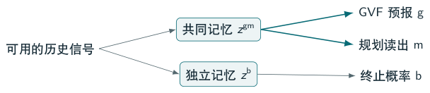
令 为从当前布局安装某个可行分区的操作。操作须给出旧状态向新记忆的初始化映射、哪些反馈可以更新每一块、谁能读取它，以及迁移所占的时钟和容量。各分区复制的槽位数量可能不同。这时要在统一的总容量和时钟下，规定空出的槽能否用于其他学习。否则测到的是分组与容量的共同作用。对于给定的 ，沿用第 25.6 节的 ：从安装前开始，对共同余期内的实际主奖励取期望；保留当前分区也是一个操作。各方案在同一 、同一余期和同一后续程序下可实施时，确定性最优选择是 。困难在于：每次只安装一种分区，只有它留下后续经验。
两种常见误解 其一，以为能读到信号与跟别人共用记忆是一回事；这两个条件可以分别改变，两个来源的分离用 比较把它们分开。其二，以为独立分组就互不影响；技能在物理上怎样结束，仍会改变模型以后的训练样本。
不同意见 深度强化学习常让所有读出共用一个躯干网络，只在末端分头，由梯度调和各项损失（Jaderberg 等，2017）。多任务学习中的十字缝网络（Misra 等，2016）用梯度学出两组特征的共享比例。按这种看法，把分组做成离散操作、等延迟主回报来评价，样本代价太高，一个 lifetime 里试不了几次。本课的回应如下。梯度共享优化的是各项预测损失。共用之后，终止与规划会改变行为，再改变以后的数据；梯度看不到这部分后果。两者可以配合：由梯度方法提出候选分组，由主回报决定是否安装。若分组很少需要改动，这项样本代价也有限。
成对推不出三方课件
所有分区在同一写入机会 可行，起点、余期与资源相同。固定 ，记 为全独立时的期望主回报， 为只合并相应两个读出时的期望主回报， 为三者共用时的期望主回报。符号都指从同一当前布局安装到相应分区的具体操作。成对共享的增益记为 ；若成对增益可加，三方共用的预报是 。
三方交互项 实际的三方共用回报与成对可加预报之差，
只用加减还可得到：从 再让终止读出加入共享，回报变化为 。 包含后续学习、行为变化和所规定的资源分配，无法由成对梯度内积推知。若机会已经移到安装 之后，则需在新的学习器状态和剩余期限上重新比较。
两个环境，同样的成对记录 下表是五种分区在两个假定环境中的确定性主回报，数值为构造算例。
| （未试） | |||||
|---|---|---|---|---|---|
| 环境甲 | |||||
| 环境乙 |
前四列在两环境中都是 ，所以 ，甲中 ，乙中 。只试过前四种操作的智能体，在两个环境中看到的记录相同。它无法判断 的符号。技能终止同时改变规划模型的训练分布和规划器所能调用的技能，这类相互作用给第三个读出留下了作用空间。
要判明 的符号，需要允许三方共用的行动支持，或另有能约束其后果的结构知识。在固定的监督任务上，有两种计算可以减少需要试用的分区。Standley 等按任务组合的验证表现选择网络分组。Fifty 等用一个任务的梯度步对另一损失的局部影响筛选候选。这里的目标还包含控制后果：终止、规划和后续访问分布都会改变。若只评价预测损失，筛选是否保留了有长期价值的分组，仍待检验。Standley 等，任务组合与高阶近似 · Fifty 等，任务梯度对其他损失的影响
不同意见 表中的反例是有意构造的。试验设计中有效应递减的经验原则：高阶交互小于低阶效应。Standley 等也用成对结果近似高阶组合。本课的回应如下。这里讲的是可识别性：只凭成对结果，无法确定三方效应的符号。三方效应有多大，是另一个问题。高阶交互小是一项额外的结构假设。可以采用它，但应写明，并用少量允许三方共用的试用检验。
两个来源的分离课件
设 GVF 与规划读出共用后取得了更多奖励。来源可能有两项：候选区别 本身有助于控制，或者两个读出共用递推记忆改变了学习效率。取全独立分区 与共用分区 ，再规定两种输入条件 。 向候选记忆开放提取 的指定通路； 在相同接口把该信号换成一个预先规定的常量，其余可见输入、更新机会与资源规则不变。记 为干预 后的有限期主回报均值，四个量均从安装前同一机会起算，后续规则相同。
通路与共用的交互项 表示开放 增大了共用的相对收益。
手算一个 比较 数值为示例。
| 独立 | 共用 | 共用的增益 | |
|---|---|---|---|
| 开放指定通路 | |||
| 屏蔽指定通路 |
按行得 ，按列得 ，两种顺序算出同一值。采用哪种分区只看开放条件下的总回报差 ，于是采用共用； 用来解释共用的好处是否依赖 。
以为 就该共用 仍可能为负，共用还有别的代价。如果其他特征也能重构 ，这项比较只检验这条通路的增量价值。实际运行只看得见四格中的一个真实未来。要解释 ，需要四种联合操作的支持，或可检验的结构假设。同时重组多项候选区别时，候选之间也会相互作用。所以逐项试写的增益，不能保证一起采用仍有益。
同一个分区对不同来路可以有不同用途。区分 前后是否需要改变所选分区，可直接用第 25.6 节区别的写入价值的公式，把最大值取在这里的可行分区上。即使某种分区在两处的绝对回报不同，只要最优选择相同，就无需为这项决定细分来路。
不同意见 交互项的大小依赖量纲。在回报的原尺度上 ；换成比例或对数尺度，它可能为零，甚至变号。流行病学中相加交互与相乘交互的争论讲的就是这件事。屏蔽通路时换入的常量，是下游读出训练时没见过的输入，所以测到的一部分是分布外的扰动。零值、均值与重采样三种屏蔽方式常给出不同结论。本课的回应如下。部署决定只用原尺度上的总回报差 ；主回报的尺度就是评价的尺度。 只作解释。报告 时，应同时写明尺度与屏蔽方式。
来路分布的偏移课件
同一技能到达交回处，有些来路曾收到奖励提示，另一些没有。旧策略在有提示时多让 GVF 和规划共用记忆，在无提示时多让 GVF 和终止规则共用记忆。前一组的实收奖励较高，这可能只由起点造成。令 为旧策略下合格机会的分布，旧策略按已知的 分配操作，抽中的操作记作 。实选 的记录在来路上按 加权，所以按实选操作分组的均值为 按来路改变分配概率，就会把来路差别混入组间比较。
再考虑另一套既往行为，其机会分布为 ， 包含决定前的历史与学习器状态。设 是两种从该处可执行的分组操作，后续规则固定为同一程序 。两批机会各用一种操作时，回报差可加减同一项 ， 举例说，无论怎么分组，有提示的起点得 ，无提示的起点得 。两批中有提示的比例为 和 ，直接相减得 。在任一起点改组的收益都是零，所以 全部来自第二项。
要把旧批次的随机分配用于目标来路 ，需要以下条件。设 关于 绝对连续，即目标来路没有超出旧来路的支持。令密度比 ；离散时 。再假定在相同 上，两批的操作版本、后续规则、条件回报均值及计分口径一致。旧行为在目标来路上给所需操作 正概率。先给定 对分配取平均，再由 换掉来路分布，得 实施时须知道密度比，或用两批机会估计它。若把完整历史压成一个特征再算比率，还须保证给定该特征后的干预均值可以迁移。Uehara、Kato 与 Yasui，协变量分布变化下的离策略评价
缺一格的旧记录 两条来路各占一半，下表是给定的确定性回报，为本课构造的不可识别算例。
| 保留 | 改组 | |
|---|---|---|
| 来时有提示 | ||
| 来时无提示 | 未试过 |
若缺格的回报为 ，改组平均得 ，比保留少 ；若为 ，平均得 ，多 。两种世界留下的旧记录相同。
以为知道来路比例就够了 上例中目标来路仍各占一半，，比例已知，缺的是那次改组的后果；若无提示的起点从未到访，缺的还包括来路覆盖。上面的等式本身也不提供未知来路分布的密度比。
不同意见 有人认为逆概率与密度比加权的方差太大。目标来路离旧来路越远， 越重尾，少数样本决定整个估计。双重稳健估计（Dudík、Langford 与 Li，2011）先用回报模型补出每格的预报，再用加权项修正模型的偏差，能降低方差。有可信的结构模型时，还可以直接外推到未试的一格。本课的回应如下。覆盖充分时，双重稳健方法能降低方差。但在表中“未试过”的那一格，加权修正项为零，估计只剩模型本身，旧记录无法检验它。所以外推可以用来决定下一步试什么，不能当作已证实的改组收益。
分组学习规则课件
前几小节合起来，就是一个用延迟主回报学习哪种分区值得安装的规则。在机会 ，为当前分区的每个可行去向规定一个操作 。做法是对 逐一列出五种目标分区，其中与当前分区相同的一项对应保留。再按容量、每步计算和原始时间预算筛出 。固定特征 编码候选区别、原布局、剩余资源及目标分区，令 预报完整操作的主回报。规则与第 25.6 节的算法 25.7同构，可选操作由四种写法换成五种目标分区。
算法 25.8 用延迟主回报学习历史区别的读出分组
- 登记原布局和共同截止时刻。三个读出共有五种目标分区，筛出可行操作 。起初以保留为常用操作 ，置 。
- 保存 ，。抽取操作 ，只实施 ，在原始时钟上按共同规则 接着执行。
- 到期收全主回报 后，作 。下次提议可行操作中预报最高者，平局按预定次序处理。
- 在后来可比机会比较提案与保留的回报。若同时有效区间满足 ，采用提案；区间交叠时可保留原布局。
整套分组学习规则是本课提出的待检验方案，尚未运行；逆概率加权的做法见 Dudík、Langford 与 Li（2011）。
给定写入前信息，抽签随机数独立于各操作的潜在回报。第 3 行按选中概率的倒数加权。固定抽取前信息，更新方向的期望是对可试操作求和的 。所以未抽中的操作也被无偏地纳入。例如 、 时，保留的概率为 ，其余四项各 。抽中一项稀有操作时，更新被放大 倍。第 4 行把挑选与证明分开：提案确定以后，另取机会检验。这样可以避免用同一笔偶然的高回报，既挑出一个新分区，又宣称它带来改进。这与第 25.3 节的挑选偏差是同一个问题。
读出更多时，五种分区会变成很多种，可先试从当前分区拆开一组、合并两组，或把一个读出移到另一组。譬如把 从 移入 ，就能直接比较 与 。若直接移动与先拆后并留下不同的参数或付出不同的迁移成本，应登记为不同操作。只搜索邻近分区时，胜者只在所比较的集合中领先，得到的排序也限于试过且有覆盖的操作。
重新分组的时机。 保留当前分区意味着这次推迟改组，下一次仍能重新决定。设 为从当前机会到下一个允许改组的时刻所经历的原始步数。 以剩余期限 截断，连续的内部计算归并为同一机会，使 。记 为那个时刻的可见历史、学习器状态与预算。记 为这段时间实际得到的主奖励和。记 为从此处按后续规则继续学习的期望回报，；它是第 24 章第 24.2 节知识操作的有限期价值在下一次改组时刻的值。按条件期望分解， 改组可以暂时消耗时间，却使以后的规划更准确。保留也有价值：可以等待新反馈再改组。两项都从当前布局起计，等待或迁移的后果分别体现在 中。若各方案的 不同，只比较下一次机会以前的收益，会偏向较长的片段。算法 25.8 用到期主回报估计两项之和。若改用学习到的尾值提前更新，新分区产生的交回状态也要有足够的后续覆盖。这时尾值误差也会进入比较。
三种常见误解 其一，把已花的分组费用再扣一次；保留与改组都从当前布局往后计分。其二，把中断而缺失回报的机会填成零。其三，把在已访问机会上的结论推到从未到达的来路；增加分组抽样频率不提供那里的反馈，需要能到达它的环境行动。
真实采用随机选出的操作后，学习器按约定接着执行。所获主回报已经包含终止和规划的共同作用。估计这种整体效果，无需再给每个内部决定乘一遍重要性比率。若只保留旧轨迹、要用它重算另一技能或规划程序的结果，才转为第 25.1 节旧记录定序的路径覆盖问题。环境不可逆、目标来路无法再达时，可以报告在已访问机会上的结论，并把新来路保留为模型外推。练习分配、写入范围和读出分区，都是从某个快照起的局部比较。三项决定同时持续运行时，会互相改变彼此遇到的机会。整套学习器的 lifetime 收益，要用第 24 章的全程评价与第 26 章第 26.1 节的配对 lifetime 差回答。
不同意见 上下文赌博机的研究者会指出，均匀混合的 探索浪费机会。它每次都以相同概率试较差的分区；稀有操作的更新又被放大 倍，方差大。按置信上界或汤普森采样分配试用，可以把探索集中在仍有希望的分区上。另一种意见认为样本太少。每个机会只给一个延迟回报，五种分区的排序可能要上百个可比机会才学得清。而分组在一个 lifetime 里可能只改几次。本课的回应如下。固定的混合概率让每次试用的概率事先已知，所以后面的同时区间检验有效。改用自适应分配也可以，但要记下每次的实际概率，并按自适应抽样调整推断。算法 25.8 是本课构造，尚未运行；样本是否够用，要由实验检验。
25.8 选读：经验中的目标与知识课件
前几节维护的预测、技能和模型，都假定这些知识已经存在。本节问这些知识从哪里来。第 15 章 15.5 节给出了方向：逐项撤去外部给定的预测问题和子目标，由学习器自己从经验中形成。本节写这个方向的细节：一条转移能同时提供哪些学习目标；目标怎样从历史中提出、核验、采纳和撤回；知识怎样从经验中发现。提出新目标与维护旧知识一样占用真实步数，所以在章首判据上按同一个 计账。第 15 章 15.5 节
一段经验的五种更新课件
智能体取得 以后，各项学习使用不同的目标。行动前，各部件读取当时可用的状态；收到新观测和奖励之后，同一条转移提供不同形式的反馈。有些目标当步可得，另一些要等当前技能结束，才能从执行期间的经验取得整段行为的后果。
| 学习对象 | 由实际经验构造的学习信号 | 以后怎样使用 |
|---|---|---|
| 状态表示 | 可观测后果的预测误差，或所选动作的优势估计 | 区分对未来预测和控制有影响的历史 |
| 持续控制 | 即时奖励与奖励率之差，加上后继状态与当前状态之间的差分价值之差 | 更新动作评价和行为选择 |
| 通用价值预测 | 按预测问题定义的累积信号，以及由延续系数加权的后继预测 | 预估给定行为的后果；有用的预测可成为状态特征 |
| 技能 | 子任务的回报，以及继续执行或终止时的价值 | 修改技能内部的行动或终止规则 |
| 后果模型 | 原始动作的下一步后果，或实际调用技能的总奖励、持续时间与停点 | 规划比较一项行动及其后续选择 |
持续控制一行以平均奖励 TD 为例：，其中 是奖励率的当前估计。预测一行在选定目标策略后，可以使用离策略数据，前提是行为有覆盖，并作相应校正。一个技能启动后，可以边走边学内部策略。在技能实际停止时，又获得模型的一份整段样本。表中的差分误差在第 16 章定义，技能、后果模型与元学习分别在第 21、22、23 章定义，此处只列各自的学习信号。这些信号都依赖具体选定的学习目标。同一传感读数不会自动给出五个独立标签。
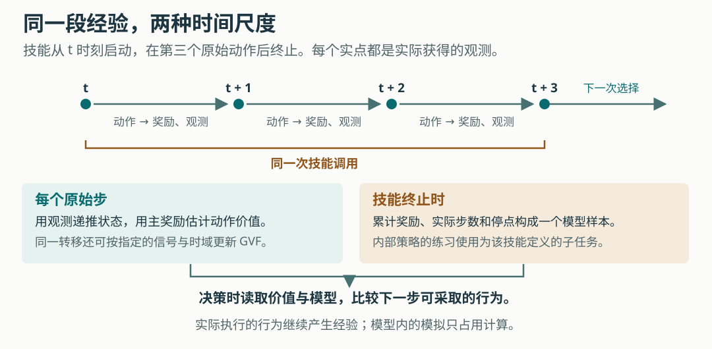
一个学习器可以把其中几项误差传给共同的状态编码器。第 17 章的信用分配决定当前反馈沿哪些早先访问传播；第 23 章的元学习依据后续预测损失或控制回报调整这个更新过程。共享状态会把一项更新传给其他读出。模型上的规划可以算多次，只有最后实际发出的动作才改变后续经验的分布。所以各学习量有共同的数据来源，又有不同的正确性标准。
同一条转移既可提供预测目标，也可训练一项技能。技能对主任务的用途，要由它改变的行动及其后续奖励确定。同一观测可以给 GVF 提供累积量，给谱技能提供内部奖励，并让主任务产生不同的外部反馈。DCEO 的技能用于执行探索。Wayfarer 还用外部奖励学习是否在该状态调用。两者都在第 21 章介绍。比较不同时间尺度的行为，必须指定控制标准，例如平均奖励或折扣回报。元学习再用一个智能体以后取得的回报，更新另一组参数。DiscoRL 在多智能体的学习经历上搜索更新规则。下图说明这些算法所在的位置。它不表示某篇论文已经包含全部模块。
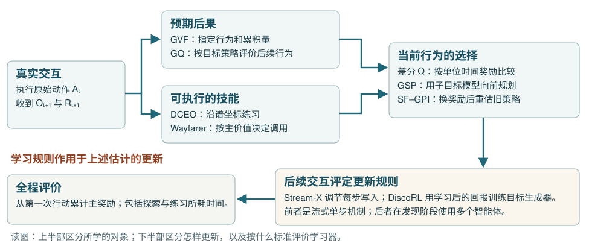
图中三条关系对应三种比较。预测比较相同问题下的目标策略、覆盖和预测误差；控制比较基于原始动作、技能或模型采取的实际行为；学习规则比较从同一初始知识和预算出发，整个学习过程取得的主回报。Horde 的每个预测器拥有自己的问题。DCEO 从访问结构提出练习方向。DiscoRL 搜索更新规则。三者依赖不同的信息，验证的结论也不同。Horde · DCEO · DiscoRL
不同意见 有两种。第一种针对分行。表按部件分行，沿袭 Horde 与 Alberta 计划的划分。端到端一派认为这只是工程选择。MuZero（Schrittwieser 等，2020）用同一个网络、同一组损失，同时学表示、价值、策略和模型，不单独定义技能。知识即预测的看法则认为，技能的终止、模型的停点都能写成通用价值函数，五行可以并成一行。本课的回应如下。各行按学习信号和它影响的后续计算区分；共用一个网络时，信号与用途仍然不同。共用的部分越多，共享状态把一项更新传给其他读出的效应越重要。第二种针对评价。内在动机与开放式学习一派（Oudeyer、Kaplan 与 Hafner，2007）认为，知识和技能的价值在于将来可能遇到、现在还不知道的任务。只按当前主奖励评价，会系统地低估这类积累。本课的回应如下。在 lifetime 设定中，将来的任务仍出现在同一条奖励流里，其价值最终体现为以后的主奖励。难处在于：这份价值要在长的 lifetime 上才测得出。有限预算下怎样估计它，仍是开放问题。
自主目标的形成与核验课件
本节随后几小节用同一个例子。三站仓库里，小车在 A 站能看见一个指示。以往指示亮时去 C，到站常见货架还没补货，这一站的奖励落空。调度方又说下一轮 C 站要出货。货架、补货与调度方是本课在第 24 章仓库上加的扩展；第 24 章的算例里没有这些量。小车可以结合两类反馈，提出原来没有单独表示的目标：到 C 时货架有货。
候选目标规格 ，其中 是未来信号轨迹上的一个事件， 为相对期限， 是事先登记的核验规则。时刻 从 提出 。提案只能依赖已见历史与内部随机数。令 为实际后果信号，达成变量为 。固定 和后续行为 ，行动前预报 期限到后，把所得测量 交给 。三个值依次表示达成、失败、未决。
可以是最后一个时刻的阈值，也可以是整条有限轨迹满足的条件。规格还应注明读数时刻、货架计数的读法和允许使用的测量。确定性提案是关于 可测的函数。随机提案还可以读取独立的内部随机数。两者都不能用 以后才发生的结果，来决定在 提出了什么。记下提案后，按固定的目标行为试行，在新数据上检验当初的预报。真实信号 可以包含计数器没有记录的量。只有观察过程足以确定事件时， 才能给出正确标签。失去读数时保持未决。改变阈值或时限，就是提出了一个新问题。
三站仓库里的一次提出与核验 按时间分三步。已见的历史：指示亮时去 C，常见货架空，调度方说 C 下一轮要出货。据此提出的目标：到 C 时货架有货，期限 ，要求到站计数 。期限到后的核验：到站读取货架计数，计数器失联，保留未决。指示、计数器和计时器都已具备。学习器新组合的内容，是对第三步到 C 时货架状态的要求。若整项规格由外部提示给出，相同的达成率只能说明执行这项规格的能力。要研究 如何形成，需让学习器自行选择事件与期限。
指示和货架计数属于不同的观测通道。两种补货安排在所有允许的探测下可能给出相同的指示，却只有其中一种在小车到站时货架有货。在只看指示的接口上， 不可识别。允许读取货架计数，或查调度方的补货记录，才可能缩小判定的不确定性。Forestier 等（2022）研究在给定目标空间内选择练习目标，与这里的区别在于目标空间本身是否给定。
不同意见 后见经验重放（Andrychowicz 等，2017）在轨迹结束后，把实际到达的结果指定为目标，用来训练以目标为条件的策略。这种做法在稀疏奖励任务上提高了样本效率。它与提案只读已有历史相反。本课的回应如下。事后重标记产生的是训练样本，对学习策略有用。它不能检验当初的预报，也不能说明智能体会提出好目标；原因是按结果挑出的目标，达成率必然为一。登记规则针对评价，训练时仍可同时使用重标记。
目标达成与采纳课件
到 C 时读取货架计数。这个测量回答目标是否达成。行动前要做另一项选择：余下的步数用于赶去 C、照常去 B，或先询问调度方。两项问题从反馈中能确定的东西不同，缺少反馈时还差的东西也不同。
| 能从反馈确定什么 | 缺少反馈时还差什么 | |
|---|---|---|
| 核验 | 货架有货记 ，无货记 | 计数器失联记为未决，可查调度方的补货记录 |
| 采纳 | 调度方提出需求；路网与规则限定可行动作 | 没有需求答复时，可询问、等待，或依已经约定的准则选行动 |
采纳的价值 设 采纳 ， 照常接着执行。两者从同一历史 、同一期限出发，到期主回报记为 。采纳相对照常的价值是
这是章首判据中 的特例：把操作 取成采纳 、对照取成照常，判据的四项照常适用。 是这类机会的次数。改选的概率由 的区间是否跨过照常的回报决定。两份期望分别沿各自的后续行动求得，计入赶去 C 占用的步数和少送一趟 B 的机会成本。所以即使 ，也不能只凭概率推出 。若 B 站与 C 站出货的取舍尚未写进主回报，可先报告各项后果，再向调度方澄清优先级。
测量的缺失和偏好反馈的缺失，都可能表现为没有回信。先要确认期待的是哪一种。设总体中可确定成功的占 ，可确定失败的占 ，其余缺测。若前两类判定无误，全部尝试的成功概率在 ；两端分别把全部未决算作失败或成功。没有指定缺测机制时，直接丢掉缺测会改变问题。新试验只给新样本；查旧试验带时间戳的记录，才可能补判旧结果。调度方未答复，就没有提供新的排序证据。原先的安排是否仍有效，取决于事先约定的规则。不完全核验的概率推导
询问调度方本身也是一项可计算价值的动作。下面的数是示例。设调度方急需 C 出货与暂不需要的概率各半，无延迟的答复准确反映需求，两个后续动作都可行。赶去 C 在两种情况下分别得 和 ，照常去 B 均得 。不询问时，两动作的期望都是 。按答复选择时，急需则赶去 C，不急则照常，期望为 。扣除占时折合的代价 ，询问的净增益为 。这与第 25.2 节探测的价值是同一种算法：信息的价值取决于它能否改变后续选择。若答复有延迟，计算须用答复到达时的剩余期限和可行动作。
若没有共同排序，几个互有得失的方案可以同时保留。一个方案多送 B，另一个方案到 C 时货架有货的概率更高。若任务尚未规定两者的权衡，仅凭这些预测得不到唯一最优方案。可先排除违反硬约束的动作，保留未受支配的方案，再向有决定权的调度方澄清取舍。给每项后果指定权重，本身就是对控制准则的补充。Bowling 等（2023），定理 4.1研究给定偏好的奖励表示，合作式逆强化学习研究人的行动怎样提供关于共享奖励参数的信息，Carroll 等讨论共同活动改变偏好本身的情形。
不同意见 “奖励就够了”的假说（Silver、Singh、Precup 与 Sutton，2021）认为，智能及其相关的各种能力都可以理解为服务于奖励最大化。按这种看法，采纳与否只是最大化同一个回报的一部分；它不必另设评价，也不会出现无法排序的情况。多目标强化学习一方（Vamplew 等，2022）持相反意见：有些取舍事先无法压成一个数，强行加权会丢掉有用的信息。本课的回应如下。若奖励已经写进各方后果的取舍， 就是两条路线的回报差，上面的式子照常适用。本小节处理取舍尚未约定的情形。这时保留几个互不支配的方案，再去澄清，比替调度方猜一个权重更稳妥。
目标的取舍课件
采纳以后，目标还要经受后续反馈。赶去 C 的途中，小车保留目标规格、剩余步数与调度方的安排。新反馈可以改变货架预测、可行行动或目标优先级，三者要求的下一步未必相同。下表沿时间读，前两行按发生时序。先有候选，控制器才比较它与当下能做的事。采纳以后，目标开始支配真实动作。后两行是两种可能的后续，表为本课构造。
| 时机 | 反馈与决定 | 写进哪个模块 |
|---|---|---|
| 提出 | A 处见指示亮；登记到 C 时货架有货 | 状态保留指示与时钟；预测器估计 |
| 采纳 | 调度方说 C 要出货；转去 C | 调用去 C 技能；记下实际步数 |
| 继续 | 到转角 ，计数未回读，还剩两步 | 更新货架判断；原目标未结算 |
| 撤回 | 调度方改命令先保 B | 技能交回控制；单独保存撤回原因与已测结果 |
到转角时计数未回读，这是中间观测；原定的末时目标此时还没有结算。安排不变时，继续赶去 C。调度方改命令时，须中断原技能。技能的停止标记记录下一次由谁选动作。在旧目标下是否到期达标，是另一个变量。所以技能即使提前交回，也可以在原定时刻核验。若缺测，原来的事件仍然未决。后果模型保留达成、用时和停点，规划可据此重新比较。若调度方的需要及其权衡改变，应以新的决策准则比较后续行动，不改写已有的带时间戳的测量。
这张表也规定了后文要研究的四项接口：用状态保存区别，例如保留上一条仍有效的调度命令；为指定行为预测达成，即预测器估计到 C 时货架有货的概率；以技能定义动作与交回，被调用的技能收到撤回命令时交回控制并保存中断原因；给规划器保留多项真实后果，后果模型留下达成率、步数与停点，以便需求改变后比较继续执行与暂缓。状态保留什么 · 技能停止与外部奖励 · 后果模型
不同意见 信念–愿望–意图一派的智能体理论强调承诺。Bratman（1987）认为，意图的作用在于不随每条新信息重新权衡。Cohen 与 Levesque（1990）把意图写成“带承诺的选择”。按这种看法，若每来一条反馈就可能改变下一步，智能体会在几个目标之间来回摇摆，还白花重新比较的计算。本课的回应如下。表中的撤回由调度方改命令这类硬约束触发，不要求每一步都重新比较。多久重新考虑一次，本身也是一项选择；学习器可以依据重新比较的代价和环境变化的快慢来定。
从片段比较学奖励课件
上一小节把取舍尚未约定的情形留给澄清。若调度方只能比较两段行为，学习器就要从有限的比较里估计奖励。首先要确定哪类偏好能写成逐步奖励。把各种可能的有限历史及其概率合称为历史彩票。
偏好的逐步奖励表示（Bowling、Martin、Abel 与 Dabney，2023，定理 4.1） 设历史彩票上的偏好满足五条公理：期望效用的完备性、传递性、连续性、独立性，以及时间 -无差异公理。这时存在逐步奖励表示。设 是共同的首个转移， 是余下历史，则 其中 。在论文规定的设定中，这五条公理与上面的奖励和延续形式等价。
这里的 是历史彩票的效用，与本章的操作 无关。时间 -无差异约束的是：在两个彩票前加上同一个转移时，两者之间的偏好强度怎样改变。例如共同开头的 时，原先相差 的两种后果，现在相差 。定理回答的是哪类偏好可以这样表达。部署时还要另外指定设计者观察什么、智能体得到什么信号。Bowling 等，§§3–4，定理 4.1
实际只收到有限的片段比较。PEBBLE 给片段 的预测分数为 ，用 估计第一段更受偏好的概率， 为 logistic 函数。新比较改变参数 ，同一次动作就可能得到新的训练奖励。PEBBLE 用当前模型给经验池内的旧转移重新赋值，再训练离策略控制器。论文的偏好学习结合无监督预训练、查询与离策略更新，图 5a 在四足行走上分别消融预训练和重标记。Lee、Smith 与 Abbeel（2021），式（3）–（4）、算法 2
重写旧标签区分不了的两个奖励模型 设以往片段全部来自照常去 B。两个奖励模型在所有这些片段上打分一致，却对赶去 C 的片段给出相反排序。重写旧标签可以消除版本差，却不会产生关于赶去 C 的新判断。请调度方独立比较新的赶去 C 片段，才有针对这项分歧的证据。这是本课构造的覆盖反例。
要分别检验两种问题，可以这样设计比较。检验标签陈旧：给两套控制器同一经验、同一奖励模型、同一查询数，只改变旧标签是否重写。检验目标外推：另用未参加拟合的新策略片段与独立评价。若只有新策略片段的排序失准，问题出在已有反馈没有约束的行为区域。若 B、C 两处都要出货，还须给定共同取舍和裁决权限。没有这类反馈时会发生什么，见第 26 章两个世界的例子。相关研究问题
不同意见 有两类。其一针对定理的前提。人的偏好常违反期望效用的独立性公理，Allais（1953）的悖论是最早的例子。公理不成立时，逐步奖励表示可能不存在。其二针对 PEBBLE 的比较模型。Knox 等的研究认为，人比较两段行为时，更像在看哪一段离最优更近，即按遗憾比较。按片段奖励之和建模，会系统地学偏。本课的回应如下。定理回答哪些偏好可以写成逐步奖励。前提不成立时，应保留部分排序或多项准则；上一小节就这样做。比较模型选哪一种，可以在未参加拟合的新片段上检验预测准确率来决定。
已解决的部分与条件 Bradley–Terry 模型下，偏好只决定得分之差，整体平移不可辨识。比较图连通、每条边都有足够的比较时，最大似然估计相合；Shah 等（2016）给出误差的极小极大界，界由比较图拉普拉斯矩阵的谱决定。Fisher 信息是 ， 为 、 之间的比较数。
已有做法与假设 PEBBLE 等方法把片段得分写成逐步奖励之和，再用 Bradley–Terry 拟合；它们假定比较模型正确，也假定所选片段对能覆盖要排序的行为。主动选择比较对的方法多按不确定性挑片段对。
未解决的部分 比较图不连通时，不同部分之间的相对位置不能辨认：只观测到 AB 时，C 可以排在 A 之上，也可以排在 B 之下。两种逐段奖励 与 都使 AB，对 C 与 A 却给出相反的次序。两个片段组之间只有一条比较边时，两组的相对平移只由这一条边提供信息，组内比较再多也不改善它。持续学习器的片段来自自己的行为，比较图的形状随策略变化。怎样在标注预算内选比较对，使对改选有用的那些差最先确定，还没有一般的结论。
怎样检验 两组片段各 个，固定标注总数。操控组内比较与组间桥接比较的比例。基准是均匀随机选对与按不确定性选对。测量两组相对平移的估计误差、在未参加拟合的新片段对上的预测准确率，以及按学到的奖励规划后的主回报。重复单位是独立抽取的真实得分与比较序列。
给定规格与自主发现课件
在同一段交互中，小车在 A 看见指示亮起，随后才在 C 读到货架已补货。这段交互可以同时支持几类问题，也能引出新的问题。下表三列依次是预测值、可执行的行为与供规划使用的模型。两行区分由设计者指定规格和由智能体提出候选。
| 预测 | 技能 | 技能后果模型 | |
|---|---|---|---|
| 规格给定 | 按指定策略，估计到 C 时货架有货的概率 | 给定到站标准，学习怎样走到 C | 给定技能，估计步数、奖励和停点 |
| 提出新规格 | 发现指示早于补货，提出预测补货的问题 | 发现常经转角 到 C，提出练习这段路 | 发现 B 站积压有代价，将积压列入模型输出 |
先遮住下行读。读出一个概率，需要行为与事件规格。执行一项技能，需要选择原始动作和决定何时停止。规划还要查询执行这项技能会留下怎样的条件。下行使用按时序得到的指示、货架计数和调度方答复作为观测，说明经验如何产生新的预测或控制问题。发现候选只改变接下来要检验什么，本身不给出相应的概率、可执行技能或模型。直接控制可以读取原始动作价值，绕过技能与模型；这张表只展开后三者。按独立维度比较方法的做法，可对照 Sutton 与 Barto 第一版 §10.1 的图 10.1。那里在价值备份对象给定后，分别改变备份的深度和是否分支取样。Sutton 与 Barto 第一版，§4.6、§10.1
状态保留区分这些后果的线索。信用分配和元学习分别改变预测参数和学习规则。控制评价检验两件事：这些变化何时改变实际行动，所获收益能否补回练习成本。在第 4 章的广义策略迭代中，评价当前策略给出后果的估计，改进策略则改变以后会采到的后果。只要目标固定，这个循环仍可使用，动作也可以换成已学得的技能。若预测事件和练习的技能尚待确定，应比较两项：获得这项知识后的实际收益，与为学习占用的时间。原问题的价值递推不会自动选出值得提出的新问题。由此得到三个相互依赖、又能分别检验的问题：固定行为的预测、给定子目标的控制、为完整学习器安排练习。它们在第三部分各章的分工见第三部分路线。
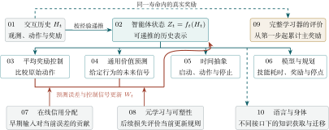
不同意见 给定与自主提出的界线并不清楚。自主提出的候选仍来自设计者规定的信号、组合规则和名额。问题生成的研究（Rafiee 等，2023）也在设计好的问题空间里搜索。换一个层次看，下行同样是给定的。端到端一派则认为，只要从足够多的经验中学习，预测、技能和模型会在一个网络内部形成；分成三列是人为划分。本课的回应如下。表的用处在于写明每一层由谁规定、靠什么检验。界线移到哪一层，检验方式就随之改变。三列的正确性标准不同，即使共用一个网络也要分别检验。
发现预测问题与子目标课件
探索留下的路段可能揭示先前忽略的区别，也可能给出新的可达事件。它们对行动的用途，取决于智能体随后怎样使用它们。在教学设定中，小车能观测指示和站点，到 C 前两个原始步处是转角 。设计者给定传感与动作接口、事件组合规则、主奖励，以及交互、计算与记忆预算，并限制最多保存多少候选。第一次经过时，小车不知道哪些组合值得反复预测。
一次经过引出的两个研究对象 沿途观测依次是：上一步见指示，转角 ，沿路前进，到达 C。这段经过形成候选事件两步内到 C。
- 预测支路，固定行为：后续访问按同一策略前进，预报两步内到 C；比较保留与省略指示线索的两项预报。
- 控制支路，允许改变行为：从同类起点试练到 C，比较可执行的走法；学得技能的奖励、时长和停点供规划使用。
- 全程评价：从提出候选以前开始计分，各学习器自行行动，比较同一预算内累计的主奖励。
指示这项观测在这里属于本课构造，用法与第 18 章起的仓库相同。前面各章的三站仓库算例没有检验这项发现。
两次来到转角时，当下观测可以相同，上一步是否见过指示却可以不同。预测先登记。以后再次经过时，先报数，再按结果评分。比较两项预测：一项只用转角，一项还用指示历史。两个历史组按相同首动作和相同后续策略采样，这样可以减少把策略差异误作状态遗漏的风险。只有后一项在后续访问中有可重复的优势，才有理由为这项预测保存该区别。若指示只影响两种走法共同承担的延误，知道它也许能改进到站预报，但学习器仍可能每次选择原先的走法。要改变选择，还需估计可行备选各自的后果。状态区别的预测价值 · 子任务与技能
练到 C 的价值又多一层。给定主奖励和相同资源，完整的对照从学习器提出候选以前计时。有三项后果都可能改变后来实际获得的奖励：试练期间少做的送货，掌握技能以后节省的步数，以及占用名额使其他知识失去的用途。图分两条支路表达两个条件问题；实际部署始终只有一条真实经验流。两个学习器各走自己的路。只在已经走过的轨迹上重算两个预测，能比较预测损失，却观察不到换了行动本可能得到的回报。这就是第 25.5 节练习价值的问题，也是第 26 章要处理的比较。练习、保留与替换 · 全程收益的对照 · Rafiee 等，问题生成 · Sutton 等，STOMP，§8
不同意见 选项发现的研究常从经验或状态空间的结构找子目标。例如成功历程常经过、失败历程少经过的瓶颈区域（McGovern 与 Barto，2001），这要先按任务成败给历程分类；或不用奖励的图拉普拉斯特征向量（Machado、Bellemare 与 Bowling，2017）。另一种意见认为两条支路可以合并：子目标就是一个以到达示性值为累积量、到达即终止的通用价值函数。本课的回应如下。结构方法适合提出候选，它们仍须在 lifetime 内为占用的步数和名额付账。两条支路共用同一个事件，区别只在行为是否固定。
延伸阅读
下列文献按本章各节的用途排列，每条注明对应的节；本章只取它们的一部分，原文的设定与结论更完整。
- Sutton 与 Barto，《强化学习》第二版（2018），第 8 章。Dyna 架构与 Dyna-Q+ 的探索奖金，对应第 25.2 节的出发点，也是维护手段分三栏中“花步数去试”一栏的第一项。
- Sutton、Precup 与 Singh（1999），关于 option 的半马尔可夫框架。第 25.1 节旧记录定序、第 25.8 节技能的交回与后果模型都用这里的技能定义。
- Manski（1990），处理效应的非参数界。第 25.1 节识别区间的思路：数据不覆盖的部分只能用取值范围求上下界。
- R. A. Howard（1966），信息价值理论。第 25.2 节探测价值、第 25.4 节 与第 25.8 节询问的价值，都是选择改变的概率乘改选多得的特例。
- Howard、Ramdas、McAuliffe 与 Sekhon（2021），时间一致的置信序列。第 25.1、25.3 节反复查看时所用的随时有效区间。
- Dudík、Langford 与 Li（2011），双重稳健的策略评价与学习。第 25.5、25.6、25.7 节随机分配后按概率倒数加权的标签，以及第 25.7 节对密度比加权的不同意见。
- McClelland、McNaughton 与 O’Reilly（1995），互补学习系统。第 25.6 节快写与慢写的神经科学来源。
- da Silva 等（2006），非平稳环境中的情境检测（RL-CD）。第 25.4 节按时间分组的一种已有做法。
下面各条对应章内的研究问题块与开放问题页，每条说明它解决了什么、留下了什么。
- Brafman 与 Tennenholtz（2002），R-max，JMLR。世界不变时给出多项式样本复杂度的探索；要求固定的 MDP，不处理变化与吸收态。
- Jaksch、Ortner 与 Auer（2010），UCRL2，JMLR。通信 MDP 上的遗憾界，界依赖直径；直径无限（有回不去的状态）时不适用。
- Gittins（1979），JRSS B。独立、分布不变的多臂赌博机在几何折扣下的最优指数；臂之间相关或分布会变时不再最优。
- Garivier 与 Moulines（2011），ALT。分段平稳多臂赌博机的滑动窗口与折扣 UCB，遗憾界依赖变化次数；变化次数要事先给定或另行估计。
- Cheung、Simchi-Levi 与 Zhu（2020），ICML。变差有预算的非平稳 MDP 上的滑动窗口方法与动态遗憾界；仍假定各期 MDP 可通信。
- Nguyen 与 Cheng（2023），ICML。把不重置的强化学习归约为无遗憾问题，性能遗憾与重置次数都是次线性；仍以可用的重置为前提。
- Golovin 与 Krause（2011），自适应次模，JAIR。收益自适应次模时，贪心地选观测有常数倍近似保证；互补的观测不满足这一条件。
- Neyman（1934），JRSS。分层抽样中按各层标准差分配样本；第 25.5 节研究问题块里的最优分配概率与它形式相近。
- Hadad、Hirshberg、Zhan、Wager 与 Athey（2021），PNAS。自适应实验里策略评价的置信区间，修正概率变小时的方差问题；没有给出持续学习里概率下界随时间的取法。
- Sims（2003），理性疏忽，Journal of Monetary Economics。在信息容量上限下选择保留哪些关于状态的信息；假定目标与容量已知、不随时间变化。
- Bradley 与 Terry（1952），Biometrika。成对比较的得分模型；得分只辨识到整体平移。
- Shah、Balakrishnan、Bradley、Parekh、Ramchandran 与 Wainwright（2016），JMLR。成对比较估计的极小极大界，界由比较图的拓扑决定；比较对由学习器自身行为产生时的选法没有讨论。
- McCloskey 与 Cohen（1989），灾难性干扰。记录了顺序训练覆盖旧知识的现象；没有给出写入范围的判据。
- Kirkpatrick 等（2017），EWC，PNAS。按 Fisher 信息约束重要参数以减少覆盖；需要任务边界。
- Sutton（1992），IDBD，AAAI。为每个输入在线学习步长；只针对线性学习器的单个读出。
- Mahmood 与 Sutton（2013），表示的生成—检验，AAAI 研讨会。以输出权重大小为效用替换特征；效用与以后的改选没有已证的联系。
- Dohare 等（2024），深度持续学习中可塑性的丧失，Nature。记录可塑性下降，并用持续反向传播按贡献效用重置单元；可塑性下降的成因还没有统一解释。
- Moore 与 Atkeson（1993），优先清扫，Machine Learning。按误差大小排定规划更新；不按计算的价值决定做多少。
- Russell 与 Wefald（1991），《Do the Right Thing》，MIT Press。把计算当作行动估值的元推理；单步估值在计算互补时会低估。
- Sutton、Bowling 与 Pilarski（2022），Alberta Plan，arXiv:2208.11173。持续学习智能体的研究路线，把规划、模型与表示的在线维护列为核心问题；本章的判据是其中什么值得维护的一种写法。
练习
细分值不值得（25.4 节） 沿用三站例：去 C 新版在来站为 B 的一组均值 ，在来站为 C 的一组均值 ，两组各占一半，合并读数 。(a) 备选去 B 为 时，验证细分的预测风险下降 ，局部价值 。(b) 把去 B 改为 ，重算 与 ，并说明为什么读数变准而 A 处的选择不变。提示： ； 只计入最优动作因细分而改变的那一组。
练习何时胜过探测（25.2、25.5 节） 三站例中，试走一次的净值为 ，练熟新路线的值为 。写出练习优于探测的条件，用 、、 表示；再说明 为什么本身需要预测，以及持续学习器只有一条 lifetime 时，这项预测的困难在哪里。
为什么除以概率（25.5 节） 候选甲暂缓得 ，练则 或 各占一半。分别取 和 ，写出四种可能的标签 ，验证两种概率下 都等于 ，并比较两者的方差。这说明了算法 25.6 为什么要求 。
挑选与验收分开（25.3 节） 第 25.3 节的实验从 个候选里按自评挑出最高者，自评验收时平均高估约 ，独立验收时约为 。(a) 用按估计挑最大者解释高估从哪里来，不必计算。(b) 若把同一批调用一半用于挑选、一半用于验收，高估会怎样变化，代价是什么？(c) 这与第 6 章 6.5 节的最大化偏差有什么共同点？
成对推不出三方（25.7 节） 用第 25.7 节的两环境算例：前四种分区回报都为 ，三方共用在环境甲中为 、在环境乙中为 。(a) 由 的定义，验证从 再让终止读出加入共享的回报变化 ，并在两个环境中分别算出它。(b) 再用第 25.7 节 比较的四个数 ，按行和按列两种顺序算出 ，说明部署决定为什么只看 。
未决的核验（25.8 节） 某目标在给定策略下，可确定达成的试行占 ，可确定失败的占 ，其余缺测。(a) 说明达成率为什么只能确定在 。(b) 若直接丢掉缺测、只在有测量的试行上算达成率，得到多少？什么条件下这个数才等于真实达成率？(c) 即使达成率为 ，采纳这个目标的价值 仍可能为负，举出三站仓库例中的一项代价。
三站例综合（25.1、25.2、25.4 节） 沿用回看判据的场景，只算 A 处这一次选择（）。(a) 旧记录给出的新版区间是多少？要不要试？(b) 先验各半，试走代价为 ，算出探测的净值； 多大时不值得试？(c) 按来站细分的预测风险下降 与控制收益 各是多少？(d) 把去 B 改为 ，重算 (c)。(e) 哪一行的结论依赖 ？ 答要点： (a) ，含备选 ，定不了序，要看改选与代价。(b) ； 时不值得。(c) ，。(d) 仍为 ，两组都选新版，：读数变准，选择不变。(e) 练习一行：值为 ，以后到 A 的次数 要预测， 时练习不比探测强。
互补的探测（25.4 节研究问题） 、 是两个独立的公平比特，最后猜 ，猜中得 ；读 或读 各花 。(a) 算出不读、只读一个、两个都读的净得分。(b) 按一步价值贪心地选读数，会停在哪里？(c) 把终局任务改为只猜 ，重做 (a)(b)，说明贪心为什么这时不再出错。提示： 收益随已知信息增加时，不满足次模条件。
练习分配的方差（25.5 节研究问题） 沿用候选甲：， 或 各占一半。(a) 由 算出 与 时的方差。(b) 求使方差最小的 。(c) 候选甲的 ，练习有利，主回报希望 接近 ；说明这与 (b) 的冲突，以及下界 怎样折中。